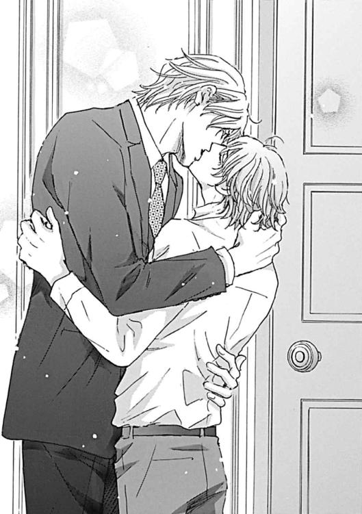

| オペラ座の花嫁 ～パーフェクト・ウェディング～ (角川ルビー文庫) | |
| 水上 ルイ | |
| (2014) | |
オペラ座の花嫁
～パーフェクト・ウェディング～
水上ルイ

角川ルビー文庫
本作品の全部または一部を無断で複製、転載、配信、送信したり、ホームページ上に転載することを禁止します。また、本作品の内容を無断で改変、改ざん等を行うことも禁止します。
本作品購入時にご承諾いただいた規約により、有償・無償にかかわらず本作品を第三者に譲渡することはできません。
本作品を示すサムネイルなどのイメージ画像は、再ダウンロード時に予告なく変更される場合があります。
本作品は縦書きでレイアウトされています。
また、ご覧になるリーディングシステムにより、表示の差が認められることがあります。
本文中に「>>>♥」が付されている箇所にはイラストがあります。その箇所を選択すると、ギャラリー中の該当するイラストが表示されます。読んでいた場所にもどるときは、イラスト直後の「このシーンはこちら♥」を選択してください。
ダヴィド・ロレンツィーニ
......やはり、私の劇場はいつ見ても美しい。
オーナー専用のボックス席に座った私は、劇場の中を見渡しながら思う。ソファ席の間に設置された小型のティーテーブルには、銀のシャンパン・バケット。観劇できる夜にはここにシャンパンが挿されるが、今夜は残念ながらその時間はない。シャンパン・バケットには、ここで仕事をしながら飲んでいたミネラルウォーターの瓶が入っているだけだ。
私の名前はダヴィド・ロレンツィーニ。二十八歳。ロレンツィーニ家の当主。両親を早くに亡くし、伯父の下で厳しく育てられた。当主だった伯父が半年前に病気で倒れ、親類たちとの泥沼の争いの末に、当主の座と莫大な財産、そしてロレンツィーニ・グループの総帥の座を勝ち取った。本当は、私が欲しいものはただ一つ、イタリアの歴史と伝統を受け継ぐ、美しいこの劇場だけだったのだが。
客席は四階層で、二階と三階はすべて独立したボックス席。その上の四階は古式ゆかしい桟敷席だ。一階席とボックス席は裕福な常連客で満席、席料を抑えた桟敷席も今夜は音楽を学ぶ学生達でいっぱいだ。
ロレンツィーニ劇場は、全体が細長い馬蹄形をしている。舞台の正面が急なカーブを描いている形だ。バルコニーは階段状に連なり、仕切りはアーチ状にデザインされている。そのために、舞台側から見渡すと、まるで古代ローマの屋外劇場にでもいるかのようだ。
天井には巨大なフレスコ画が描かれ、舞台の周囲を天使をかたどった豪奢な金細工が飾る。客席に下がる巨大なクリスタルのシャンデリアは、この劇場が造られた時代を髣髴とさせる美しいもの。この劇場は数度の大きな火災に見舞われたが、シャンデリアは毎回奇跡的に助かっている。
私がいるオーナー専用のボックス席は、舞台に一番近い場所だ。舞台上の役者達と、オーケストラピットの両方を見下ろせる。音響のバランスで言えば、舞台正面の方がいいに決まっているのだが......舞台との一体感と、客席から押し寄せてくる歓喜の拍手に包まれる感覚は、何物にも代えがたい。
私は、興奮した様子の観客たちを見下ろしながら、自分も鼓動が速くなるのを感じる。
......三カ月後には、あのジェイド・ベルギウスの新作が、ここで上演されることになる。
ジェイド・ベルギウスは、十年ほど前にデビューした新進気鋭の若き天才脚本家。仕事でニューヨークに行った時、偶然に彼の舞台を観て、私は一度で心を奪われた。ぜひ私の劇場で彼の劇を上演してほしいと願っていたが......彼の素性は謎に包まれていたし、フリーで活動しているためにコンタクトを取るのがとても困難だった。ただ、古くからの友人にヒューゴ・ベルギウスという名前の男がいた。ヤケクソでその彼に「珍しい名字ではないが......万が一、君の親戚だったらぜひ紹介してほしい」と言ったところ、当たらずといえども遠からずだった。ヒューゴに永遠を誓い合った恋人がいることは知っていたのだが......それがそのジェイド・ベルギウスだと知った時には、さすがに驚いたが。今ではジェイド・ベルギウス本人とも友人になることができ、私の劇場で彼の新作を、という夢ももうすぐ叶う。
ジェイド・ベルギウスは、デビュー時には『オペラ座の怪人』で有名なアンドリュー・ロイド・ウェバーの再来と呼ばれていた。古いオペラの曲に合わせて、小さな劇場で上演されていた『オペラ座の怪人』を一大エンターテインメントに仕立てたアンドリュー・ロイド・ウェバーは、脚本、監督、そして作曲までも手がけていた。ジェイド・ベルギウスは、自身では作曲をしないかわりに、その脚本はウェバーに負けないほどドラマティックで、絢爛豪華。ミュージカルファンの中で、いまやジェイド・ベルギウスの名前を知らない人間はいないだろう。
ヒューゴによれば、脚本の完成は間近らしい。彼は作詞も手がけるが、そちらの作業も順調だという。彼は作曲はしないが、世界中の有名作曲家とのつながりがある。彼の素晴らしい詞に相応しい、美しい曲を用意してもらうことができるだろう。
ドアがそっとノックされ、この劇場の老支配人、ロワイエ氏が顔を出す。
「こんばんは、ロレンツィーニ様」
彼はにこやかに言い、それからシャンパン・バケットに目をやり、そこに挿されたボトルを見て片方の眉をつり上げる。
「今夜の『魔笛』は、最高の舞台になりそうですよ。なのに、ミネラルウォーターだなんて。コンシェルジェに言って、すぐにシャンパンを......」
「いや、今夜はこれから会議がある。そろそろ会社に戻らなくてはいけない」
ラップトップ・コンピュータを閉じながら言うと、支配人は心底気の毒そうな顔になる。
「千秋楽にはきちんと顔を出す。......ミスター・ロワイエ、よかったら、今夜は君がここで観劇してくれてもいいんだよ」
「いいえ、歴史あるオーナー専用のボックス席に座るなんて、めっそうもない。私はこの劇場のいち支配人ですから、舞台の袖から見守るのが伝統です」
彼は忠実な家令のように鹿爪らしく言う。私は微笑んでしまいながらラップトップ・コンピュータをアタッシェケースに入れて立ち上がる。
「今夜の舞台の成功を祈っている。出演者の面々にもそう伝えてくれ」
山口美琴
......もう、何もかも夢ならいいのに......。
僕は呆然と思いながら裏通りを抜け、観光客が行きかう大通りに出る。大通りの突き当たりには噴水を持つ円形の広場。その向こうにそびえているのは、ロレンツィーニ劇場。眩くライトアップされた美しいネオ・バロック様式の建物だ。オペラ座と呼ばれるパリのガルニエ宮と並び称される壮麗な建築。車寄せにたくさんのリムジンが停まっている。正面玄関を上っていくのは、美しく盛装した人たち。それを見た僕の胸が、ズキリと痛む。
......現実のことなんか、全部忘れてしまいたい。
僕の名前は山口美琴。二十歳。母は英国人、父は日本人。東京にある音楽系の高校の作曲科に通い、ごく普通の学生として暮らしていたけれど......十七歳になったある日、両親が事故で亡くなってしまった。葬儀の日、ショックで呆然としている僕の前に現れたのは、母方の祖父だという高齢の男性......イザーク・ブラッドレイだった。両親は、母方の実家であるブラッドレイ家とはほとんど絶縁状態だったけれど、僕は一度だけ、その人に会ったことがあった。たしかに母さんから「おまえのお祖父様よ」と紹介されたその人だった。
彼はとても優しく、「おまえに音楽を続けさせてやりたい。私と一緒に来なさい」と言ってくれた。その時に出された条件はただ一つ。ローマ郊外にある別荘に住むこと。そこに住みさえすれば、僕がローマに音楽系の学校の作曲科に編入することを手助けし、授業料を払ってあげるよ、と祖父は言ってくれた。
......その時は、あきらめかけていた音楽の勉強を続けさせてもらえるなんて、なんてありがたいんだろうととても感謝した。もちろん今でも感謝している。でも......。
僕が住むことになった別荘は、叔母である、ドロレス・ブラッドレイという女性の持ち物だった。ドロレス叔母さんの境遇は少し特殊で、普段はニューヨークに住み、大富豪の愛人をしている。その大富豪には奥さんと五人のお子さんがいて、アメリカで『理想の家庭』といえば一番に名前が挙がるほど。まだ三十代だしとても美人といえるであろう叔母さんが、どうしてそんな立場に甘んじているのか、僕には想像もつかなかったけれど......。
......昨夜も、あんなことがあったし......。
僕は思い出し、またため息をついてしまうんだ。
◆
「お帰りなさいませ、ミコト様」
エントランスホールで出迎えてくれた家令さんが、うやうやしく礼をしながら言う。その時、屋敷の奥から聞き覚えのある笑い声が微かに聞こえてきた。僕はその場に立ちすくみ、鼓動が不安に速くなるのを感じる。家令さんはいつもの完全な無表情のままで僕に言う。
「ドロレス様がお戻りになっております。ミコト様、ご挨拶を」
家令さんの言葉に、僕は思わず後ずさる。
「でも、お客様のようです。今はお邪魔では......」
「お部屋に入る前には、眼鏡をお外しください」
家令さんが僕の言葉をさえぎって言う。
......これは、叔母さんの遊び相手の顔をまともに見るな......ということかもしれない。
「わかりました」
僕はエントランスホールを横切り、叔母達の声が聞こえてくる方に向かって廊下を歩く。
「本当なら、あなた達みたいな若い男性じゃ、相手にならないのだけれど......」
「そんな、今夜のために、どんなに苦労したか......」
「そうですよ、ここまで来て、お預けを食らわすなんて、ひどい人だ」
これ以上危ない雰囲気になられたら、ますます声をかけづらくなる。僕は慌ててドアを強くノックし、声を上げる。
「ドロレス叔母さん、美琴です」
聞こえていた声がふいにやむ。僕は逃げたい気持ちを抑えながら、さらにノックをする。
「本当に不躾な子ね。いいわ、勝手に入りなさい」
「ミコト様、眼鏡を」
後ろに控えていた家令さんに言われて、僕は慌てて眼鏡を外しシャツの胸ポケットに入れる。ひどい近視ではないけど乱視が入っているので、視界が紗がかかったようにかすむ。
「......失礼します」
後戻りができなくなった僕は、そのまま部屋に踏み込む。
叔母さんは、正面に置かれたソファに腰掛けていた。両脇にはスーツを着た男性が二人。彼らは驚いたような顔で僕を見つめて言う。
「マダム。紹介してくださらないのですか？」
「ああ......あなたによく似て、とても美しい人だ」
二人は僕を見つめたままでゆっくりと立ち上がり、僕のほうに歩いてくる。
「それで？ さっきの話はどうするのかしら？」
叔母さんが苛立ったような声で言う。
「今すぐにイエスと言いたいところですが、あなたのおっしゃる条件は、あまりにも......」
「出資してくれるのは父なのです。少し相談する時間をいただかないと......」
叔母さんが眉をつり上げて、ドアを指差す。
「煮え切らないわね！ さっさと帰ってちょうだい！ 興をそがれたわ！」
その剣幕に怯えた顔をして、男性二人が慌てて部屋を出て行く。叔母さんは、
「何よ、その顔！ 自分が世界で一番不幸です、とでも言いたいの？」
「いいえ、そんな」
僕は言いながら、慌てて眼鏡をかける。僕が眼鏡を外していると、叔母さんはなぜかいつも機嫌が悪くなる。邪魔ばかりする僕の顔を、まともに見たくないのかもしれない。
「あんたなんかより、私のほうがもっと不幸よ。なんせ、お金のために愛人として売り飛ばされたんだからね」
叔母さんの言葉に、僕は内心ため息をつく。
......また、この話だ......。
聞き流せばいいのだろうけれど、かなり衝撃的な話だから未だに毎回つらくなる。叔母さんは酔うたびにこの話をするから、何十回も聞かされているけれど。
「誇り高い英国貴族の血を引く私が、自分から望んであんな騒々しい街に住んでると思ってるの？ ニューヨークなんか大嫌いよ」
僕は音楽大学に通っているけれど、クラシックやオペラだけでなく、庶民的なミュージカルも大好きだ。一度でいいからニューヨークのブロードウェイに行ってみたい、そこでミュージカルを観られたらどんなに素敵だろう、とずっと夢見ている。だから叔母さんの言ったその言葉に、不思議と傷つく。
「天文学的な値段ならわかるけど、たいしたことのない値段でよ。しかも私を売ったのは、実のお父様とお祖父様。まったくこのいまいましい星さえなければ......！」
叔母さんはフリルのついた袖をまくりあげる。叔母さんの腕を見た僕は、思わず息を吞む。その腕にあったのは、バラ色をした小さな星だった。
「叔母さんにも、その星が......」
「そういえば、あんたに見せるのは初めてだったわよね。......ロスフィールドが私を愛人にしたのは、愛してるからじゃない。私の身体に、この痣があるからよ」
バラ色の星はまるでタトゥーのように見えるけれど、これは生まれつきのもの。僕がどうしてそれを知っているかというと......。
叔母さんはふいに顔を上げ、その真っ赤な口紅を塗った唇で笑う。
「......そうそう、あんたの身体にも、同じ痣があるらしいじゃないの」
急に猫撫で声になった叔母さんが、楽しげに言う。その言葉に、僕は本気で驚く。
「......どうして......それを......」
そう、僕の身体にも叔母さんとまったく同じバラ色の星型の痣がある。これは母方のブラッドレイ家の血を引く人間にごくまれに現れる特徴らしい。だけど僕は両親から「この痣があることは絶対に人に知られないように」と小さな頃から言い含められていた。だから日本にいる頃、水泳の授業はずっと欠席だったし、体育の時間も着替えには細心の注意を払うように言われた。たしかに少し不思議な形をしているけれど、僕にはこんな小さな痣がたいした意味を持つとは思えなかった。タトゥーみたいに見えるから、最初は先生に見とがめられそうだけど、そんなのは届けを出せばいいだけだし。
両親にそう言ったこともあるけれど、その時の母さんはとても苦しそうな顔になってしまった。涙を浮かべて、「そんな痣のある身体に生んでしまってごめんね」と謝られて、子供ながらに、この痣の話には触れちゃいけないんだ、と思った。
父さんは「難しい話なんだ。おまえが二十歳になった時、すべてを話すよ」と言って、その話を終わらせた。僕は「わかった。もう痣の話なんかしないから」と言ってリビングを出た。だけどドアの隙間から、母さんが泣きながら「あの呪われた痣のせいで、可愛い美琴が不幸になってしまう」と言っているのが聞こえてしまった。父さんが「そんなのは迷信だよ。美琴は私達が守ってやればいいんだ」と慰めているのも。
でも、両親は僕が二十歳になる前に急な事故で亡くなってしまった。思い出は楽しくてあたたかなものばかりだけど......あの夜のことだけは、心に棘のように刺さっている。僕は母さんが言った『呪われた痣』という言葉を忘れられず、母さんを泣かせた自分を責め......この赤い痣を持っていることが、一種のトラウマになった。だからこのローマに来てからも、身体を見られないようにずっと気をつけていたはずで......。
「何、その顔？ 痣があることを知られてたのが、そうとうショックみたいね」
叔母さんが僕を見上げながら、やけに楽しそうな声で言う。
「......私が聞いたのは、お祖父様から。お祖父様は、あんたの痣のことはずっと前からご存知だったらしいわよ。どうやらあんたの着替えを覗いたことがあるみたいね」
そして、叔母さんはくすくす笑う。
「お祖父様があんたを引き取ると言い出した時、とても不思議だったのよ。いくら高貴なブラッドレイ家の血を引いているとはいえ、東洋の血が混ざった子供なんか。......でも、まさか男のあんたが、『幸運の星』を持っているなんてねえ」
「......『幸運の星』？」
......たしかに僕の身体にあるあの痣は星型をしている。だけど母さんはあれをよくないものだと言った。だからあれが幸運の印とは、僕にはとても思えなくて......。
「それで？ あんたのはどこにあるの？ ここ？」
叔母さんは手を伸ばし、驚くほどの力で僕の右手首を摑む。肘まで折り返していた僕のシャツの袖を肩までずり上げて何もないことを確かめると、今度は左手にも同じことをする。
「いったいどこにあるのよ？ それともお祖父様の言っていたことはデタラメ？」
「いえ、あることはありますが、腕では......」
「じゃあ、どこなの？ さっさと見せなさい！」
シャツのボタンを外そうとするけれど、父さんが心配そうに言った言葉が脳裏に蘇る。
『ミコト。その痣は、絶対に人に見せてはいけないよ。その星があることを知られたら、おまえは不幸になってしまう』
「ああ、苛々する！ まったくノロマな子ね！」
叔母さんが言って、いきなり僕のシャツを摑む。そのまま布地を両側に引っ張られて、ボタンが一気に弾け飛ぶ。肌に空気が触れる感覚。叔母さんの視線が一点に当てられるのを感じて、僕は思わずきつく眉を寄せる。僕の肌をじっと見つめていた叔母さんが、
「......たしかに、私と同じ痣ね......でも、こんなところにあるなんて」
僕の赤い痣は、左胸、乳首のすぐ上にある。星を隠すために日光浴などできない生白い肌と、情けなく細い身体まで見られているのだと思うと......羞恥で頰が熱くなる。
「......この真珠みたいな肌。さすがはブラッドレイ家の血を引いているだけあるわね」
叔母さんは僕の痣をじっと見つめたまま、呆然とした声で言う。それから、
「あんた、この痣が『幸運の星』と呼ばれてることすら知らなかったのよね。じゃあ、この痣にどんなジンクスがあるかも、聞いてないの？」
叔母さんはふいに顔を上げ、僕の顔を真っ直ぐに見つめてにっこりと笑う。
「痣を見せてくれたお礼に、『幸運の星』がなんなのかを教えてあげるわ」
誘うような、意味ありげな口調。僕は、さらに不吉な予感を覚える。
......聞かないほうがいい。だけど、そんなこときっとできない。この痣がいったいなんなのか、父さんと母さんが何をあんなに心配していたのか、僕はずっと知りたかったんだ......。
「『幸運の星を持つ者は、契った男に幸運をもたらす』......それが、ジンクスよ」
あっさりと言われた言葉に、僕は耳を疑う。
「幸運ですか？ 相手を不幸にするのではなくて？」
「違うわ、幸せにするのよ。......私は愛人になったロスフィールドのために、いくつも幸せなことを起こしたわ。彼の会社は一気に業績を伸ばしたし、重病だった親御さんを快癒させた。この『幸運の星』のおかげでね。だから私はその代償として、一生贅沢に暮らさせてもらうつもりよ。......ああ、だけど、あんたには宝の持ち腐れね」
叔母さんは肩をすくめ......それから何かを思い出したかのように眉をひそめる。
「一族の中に、ジョエル・ブラッドレイという男性がいた。私の遠縁に当たる人だけど、彼は本家の人間だから、分家の私は気楽に近寄ることなんてできなかった。だからパーティーで見かけたことしかないけれど......黄金の髪と真珠色の肌をした、人間離れしたような美青年だったわ。......彼の名前を聞いたことは？」
「いいえ」
「あんたの両親は、何も教えていないのねえ。日本に駆け落ちしたらしいけど、ブラッドレイ家から逃げられるわけがないのに」
叔母さんはため息をつき、それから、
「それなら、私が、ジョエル・ブラッドレイについて、詳しいことを教えてあげるわ。ブラッドレイ本家の人のことだから、知っておいたほうがいいでしょうしね」
叔母さんは、暗い眼をして言う。僕の鼓動が不吉な予感に速くなる。
「ジョエル・ブラッドレイは、自分の父親と祖父に売られた。支払われた金額は、天文学的だったって聞いたわ。たしかにジョエルは天使のような美形だったけれど、相手がそんな金額を払ったのにはほかに理由があった。......相手はとんでもないサディストだったのよ」
叔母さんが、心の底から嫌そうな口調で言う。
「『幸運の星』を持った人間を抱くたびに、莫大な利益が生まれる。ジョエルは欲に目がくらんだその男に夜毎にひどい目に遭わされ、ボロボロになるまで犯されて......そのまま重い病気にかかってしまった。本家のお祖父様が会いに行った時には別人のようにひどい状態で、そのまま亡くなったらしいわ。それ以来、ジョエル・ブラッドレイの話はタブーとされてる」
叔母さんは魔女みたいに尖った爪で、僕の胸元をグッと押す。
「ジョエル・ブラッドレイみたいな目に遭わないように、せいぜい気をつけることね」
叔母さんはやけに優しい声で言い、どういう意味かを聞こうとした僕を、別人のようにきつい顔で睨む。
「さっさと出て行って！ そんな憐れむような顔で見ないでよ！」
僕は立ち上がり、慌てて部屋を出る。廊下に控えていた家令さんが、入れ違いに部屋に入って叔母さんをなだめようとしている声が聞こえる。叔母さんの叫びは、もっと高くなっただけだったけれど......。
◆
僕はため息をつき、美しいロレンツィーニ劇場を見上げて、いやなことをすべて頭の中から追い出そうとする。
こんなふうにつらい時、いつも思い出すのは、両親と一緒に観た、たくさんの舞台のこと。両親は無類の観劇好きで、いろいろな劇場に連れて行ってもらった。舞台演劇だけでなく、ミュージカル、バレエ、オペラ。舞台の上の世界は、いつでも豪華で、眩くて......。
その中でも僕が一番よく覚えているのは、このロレンツィーニ劇場。まだ中学生だった僕には、この階段を上る観客たちがお伽噺の中から出てきた人々のように煌めいて見えた。
そして舞台の上に現れたのは、本物の夢の世界。あの時に見た演目は『魔笛』だった。どこかコミカルだけど豪奢なお伽噺の様なその世界に僕は夢中になった。いつか作曲家になって、あの眩い世界の一員になりたい、自分も誰かに夢を見せてみたいと思ってしまった。
あの煌めく舞台を思い出すだけで、憧れに涙が滲む。
アルバイトをすることは許されていないので、今の僕には自由になるお金がない。今夜は叔母さんはいないし、たまたま運転手さんが急な風邪で休んだし、さらに午後の講義が休講になるという幸運が重なった。だから家令さんには「帰りはタクシーで帰ります」と言って、学校からここまで歩いてきた。一人で出歩くことは家令さんやお祖父様や叔母さんから固く禁じられてるから、ローマの街をこうして探検するのはイタリアに来てから初めて。こんなチャンスはもう、二度とないかもしれない。
僕はロレンツィーニ劇場の客席や舞台の様子を思い出し、胸が痛むのを感じる。
もう一度でいいからあそこに行ってみたいけれど、何万円もするような高価なチケットは、今の僕には夢のまた夢。比較的安く設定された学生用の桟敷席のチケットですら、眩暈がしそうな値段のはず。それに、この劇場の桟敷席は安くても音響が最高で、音楽を学ぶ学生や舞台マニアの間でものすごい人気のはず。電話予約が開始された瞬間に完売するというものすごいプレミアチケットのはずで......。
僕は操られるようにして劇場に近づき、エントランスの脇にあるチケットセンターの表示板を見上げる。桟敷席はもちろん、チケット代が何十万円もするようなボックス席まで......公演のすべてのチケットが完売だった。
もちろん仕方のないことなんだけど......なんだか音楽の神様に拒絶されたような気持ちになってしまう。
......あそこは別世界だ。きっと、僕なんかには手の届かない......。
星のように瞬く劇場の明かりが、ふいにふわりと曇る。
......泣くんじゃない。もう子供じゃないんだから......。
自分に言い聞かせるけれど、涙が溢れそうになる。唇をかんでうつむき、必死で涙をこらえると、涙は白い石畳の上にパタパタと落ちる。
......僕みたいな弱い人間が、誰かに夢を見せられたらなんて......きっと無理で......。
「失礼」
頭上から響いた低い美声に、僕は慌てて顔を上げる。そして、そこにいた人を見て思わず息を吞む。そこに立っていたのは、まるで夢の世界から飛び出してきたかのような、信じられないほど麗しい男性だった。
逞しい長身、すらりと都会的なモデル体型を、上等そうなダークスーツが包んでいる。
自然な感じに流された、艶のある茶色の髪。陽に灼けて引き締まった頰。
高貴な感じにスッと通った高い鼻筋。男らしい眉、厳しく引き締められた形のいい唇。
見下ろしてくるのは、まるで澄み切った氷河みたいなアイスブルーの瞳。
彼の周囲を取り巻いているのは、絢爛たる黄金色のオーラ。欧州が長い時間をかけて積み上げてきた重厚な美をそのまま体現したかのような、誇り高さが伝わってくる。
僕は、芸術品にでも見とれるかのように、呆然と彼を見上げて動けなくなる。
「今夜の演目に、そんなに興味が？」
彼の唇が動き、バリトン歌手のように深い響きの声を漏らす。まるで歌うような美しい発音のイタリア語に聞き惚れてしまう。
「今夜の『魔笛』は世界最高ランクの配役だ。とても素晴らしい舞台になるだろう」
「はい、僕もそう思います」
「チケットは？ その様子では取れなかった？」
彼の言葉に、悲しい気持ちで僕はうなずく。
「ロレンツィーニ劇場で上演される演目は、超一流のものばかりです。だから発売当日でないとチケットが取れないのはわかっていました。ただ、どうしてもあきらめきれなくて」
「もしも興味があるのなら......」
彼はスーツの上着の内ポケットから、カードケースを取り出す。とても上等そうなそれから名刺を一枚取り出し、裏にペンで何かを書き付ける。
「......これを、関係者入り口で見せるといい」
言って渡されたそれには、ブルーブラックのインクで『彼を私のボックス席に』という文字が書かれ、流麗な文字でサインがされていた。
......私の、ボックス席？
僕は、呆然としたままその名刺を見下ろす。
......たしかに、ロレンツィーニ劇場の一部のボックス席は、名門貴族の専用になっていると聞いたことがあるけれど......。 >>>♥
「......いい一夜を」
彼は言って優雅な動きで踵を返す。ふわ、と香ったものすごくいい香りに陶然としている間に、彼はエントランスの階段を下り、停車していた漆黒のリムジンで走り去った。
「......お礼もいえなかった」
僕は呆然としながら名刺を裏返し......そこにあった名前を見て驚いてしまう。流麗な文字で印刷されているのは、ダヴィド・ロレンツィーニという名前。この劇場と同じ名字。そういえばこの劇場は公営ではなく、歴史あるイタリアの貴族、ロレンツィーニ一族の持ち物だと聞いたことがある。
「......もしかして、その一族の関係者の人だろうか？」
僕は鼓動が速くなるのを感じながら、彼が乗ったリムジンが走り去ったほうを見つめ......それからそんなことをしている場合じゃないことに気づく。
......もしかしたら、たまたま同姓だった彼の、ただのいたずらかもしれない。けど！
僕はすでにひと気のない劇場前を全速力で走り、反対側にある関係者入り口に着く。そこでは数名の係員達が撤収の準備をしていて......。
「あの、すみません！ これ！」
僕が名刺を差し出すと、係員はきょとんとした顔でそれを見下ろす。
「は？ 名刺......ですか？」
「ええ。背の高い男性がこれをくれて、関係者入り口で見せるようにって......」
やっぱりいたずらだったのか、と半分あきらめた時、近くで何かの指示を出していたダークスーツ姿の高齢の男性が足早に近づいてきた。彼は名刺を見下ろして、微笑を浮かべる。
「おお、ロレンツィーニ様からのご招待の方ですか。......どうぞこちらへ。ご案内いたします」
彼は言って僕をエントランスホールに入れてくれ、先に立って案内してくれる。
......ああ、どうしよう？ ドキドキする......！
僕が連れて行かれたのは、二階にあるボックス席だった。ふわふわの絨毯が敷かれたそこにはソファが並んでいて、とても豪奢な空間。そこからはロレンツィーニ劇場の全体、そして舞台やオーケストラピットまでを見下ろすことができた。
......これは、夢だろうか？
僕が呆然と席に座ったのを合図にするかのように、客席の明かりがゆっくりと暗くなった。指揮者がタクトを振り上げ、そしてオーケストラが演奏を始めて......。
......ああ、これはきっと夢だ。でも、なんて素敵な夢なんだろう......？
◆
ロレンツィーニ劇場で夢のような体験をした後。僕はタクシーで慌てて屋敷に戻ってきた。時間は九時半だったから、学校の個人練習室で作曲の課題に取り組んでいて、と言えばなんとか家令さんをごまかせる時間だった。だけど......なぜか屋敷には叔母さんが帰ってきていた。
「......やっぱりあんたは疫病神だわ！」
エントランスから入った僕を見るなり、叔母さんはヒステリックな声で叫んだ。
この別荘に戻る時、叔母さんはいつもハンドバッグ一つだ。この屋敷には、着替えをはじめとするすべてが揃っているから。だけど見慣れない大柄な使用人さんが三人、大きなトランクを車から降ろしている。まるで、長期の旅行でもするかのような大荷物だ。
「ミコト、こっちにいらっしゃい！」
叔母さんは僕の腕を引っ張って、応接室に僕を引き込む。
「ああ......まさか、『幸運の星』があんたにもあることを、ロスフィールドに知られてしまうなんて。しかも......お祖父様の口から......」
叔母さんは吐き捨てるように、
「ロスフィールドに言われたのよ。『君のお祖父様から聞いたよ。その子にぜひ会わせて欲しい』って。だからもう我慢できなくなって、家出してきてやったのよ！」
叔母さんは言い、まるで汚いものでも見るかのように僕を見る。
「『幸運の星を持つ者は、契った男を幸運にする』って言ったでしょう？ ロスフィールドは、あんたとセックスするつもりなのよ。男同士なのに......本当に汚らわしい......！」
叔母さんは、憎々しげな顔で僕を睨む。
「話したことすらないくせに、お祖父様が渡した写真だけで、ロスフィールドはおかしくなってしまった。この間の二人もすっかりあんたに夢中だった。男のくせに『幸運の星』を持っているだけのことはある。......本物の魔性ね。ぞっとするわ」
叔母さんは言ってテーブルの上のボトルを取り上げ、グラスに赤ワインをなみなみと注ぐ。その手がブルブルと震えていることで、僕は叔母さんがすでにかなり酔っていることに気づく。
「叔母さん、もうお酒は......」
「うるさい！ 誰のせいだと思ってるのよ！」
グラスを持った叔母さんが叫ぶ。カッティングを施されたグラスが、シャンデリアの灯りをギラリと反射する。思わず目を閉じた次の瞬間、ビシャッと音を立てて僕の顔に赤ワインがかけられる。眼鏡のレンズを、ゆっくりとワインが伝う。
「あっちへ行きなさい！ その天使みたいな顔が、本当に苛つくのよ！」
僕はもう何も言えずに、そのまま部屋を出る。僕のシャツが真っ赤に染まり、髪からワインが滴っているのを見て、家令さんが驚いたように目を見開く。それから、
「先ほど、英国のブラッドレイ本家から電話がありました。明日の朝、イザーク様がこの屋敷に到着なさいます」
家令さんの言葉に、僕は驚いてしまう。
「お祖父様が？ 英国から？」
「大切なお話があるそうです。明日は学校をお休みになり、屋敷で待機なさってください」
家令さんが、厳しい声で言う。
「わかりました。明日は大学を休みます」
僕は言い、自分の部屋に向かうために廊下を歩く。家令さんが苛ついた声で床の掃除を命じているのが聞こえる。
......あの痣が人を不幸にするのは、きっと本当のことだ。僕の痣のせいで、叔母さんとロスフィールドさんは喧嘩をしてしまったみたいだし......。
「ミコト様」
暗い気持ちになりながらエントランスホールに出た僕は、名前を呼ばれて慌てて立ち止まる。そこには、叔母さんの荷物を運んできたいかつい使用人さん達がいた。きっと、ロスフィールドさんの屋敷に雇われている人達だろう。そのうちの一人が声をひそめて言う。
「実は......ロスフィールド様が、この近くまでいらしております」
その言葉に、僕は驚いてしまう。
「ロスフィールドさんが？」
「ロスフィールド様は、ミコト様とお話をしたいとおっしゃっています。ドロレス様が何か勘違いをなさっているようなので、きちんと誤解を解きたいのだと」
僕は、その言葉に不思議なほどホッとする。
......やっぱり叔母さんの誤解だったんだ。僕に興味を持った様子だったのは、叔母さんの家に住んでいる僕が怪しい人間じゃないかと気にしただけで......。
「ロスフィールド様と会って、話をしていただけませんか？」
「もちろんです。......あ、外出するなら家令さんに一言言ってから......」
「ロスフィールド様は、お屋敷の門の外までいらしています。すぐに済みますよ」
彼に言われて、僕はうなずく。そして彼らに囲まれるようにして屋敷を出た。
月明かりに照らされた車道を歩き、門を内側から開く。門から少し離れた場所に、大きなリムジンが停まっていた。その前後にはミラーガラスのセダンが停められ、ＳＰらしき大柄な男性達が控えている。お仕着せを着た運転手さんがドアを恭しく開き、そこから、スーツを着た壮年の男性が出てくる。初対面だけど、雑誌で見たことがある。彼は......。
「......ミスター・ロスフィールド。叔母を迎えに来てくださってありがとうございます」
「君がミコトくんだね？ 初めまして、私がダニエル・ロスフィールドだ」
......叔母さんはあんなことを言っていたけれど、やっぱり誤解だったんだ。わざわざローマまで叔母さんを追いかけてくるなんて、とても仲がいい証拠じゃないか。
「ミコト・ブラッドレイです。初めまして。すぐに、叔母を呼んで来ますから......」
「ちょっと待ってくれ。まずは、君に話したいことがあるんだ」
「はい。なんでしょうか？」
彼は僕の身体を見下ろし、心配そうに眉をひそめてみせる。
「シャツにしみがついている。香りからしてワインだろう。ドロレスと君は、あまりうまくいっていないのではないかな？」
「いえ、そんなことはありません」
「まあ、いい。君はこのまま、私の屋敷に来るんだ。もう叔母さんともめることもなくなる」
彼の言葉が理解できず、僕は混乱する。
「それは、どういう......？ 叔母さんを迎えにいらしたんじゃないのですか？」
「誤解があるようだが......私とドロレスは、もう長いことうまくいっていなかったんだ。だから私は決めた。......彼女の代わりに、君を愛人として引き取ろうとね」
ロスフィールドさんがふいに手をのばし、僕の腕を摑む。
「心配しなくていい。君のお祖父様の許可はいただいているからね。明日にでもお祖父様から正式に君を受け取る予定だったが......つい待ちきれなくて迎えに来てしまったんだよ」
彼は苦笑して言う。あまりに予想外の言葉に、僕は思考が停止したまま立ちつくす。
「かなりの金を払うことになったが、こんな綺麗な子なら惜しくはない。......真珠のように滑らかな肌。端整な顔立ち、そして身体は少年のようにしなやかだ。きちんと装わせたら、とても見栄えがするだろうな」
彼は満足げに言って、僕に向かってにっこり笑う。
「大切にするから安心しなさい。もしも男同士のセックスをしたことがなければ、一から教えてあげる。私も若い頃は、美青年たちとの一夜の恋を楽しんだものだからね」
彼は僕の腕を強引に引き寄せ、空いているほうの手で僕の顎を持ち上げる。
「ミコト。君は、私の愛人になる。その身体で、私に幸運を与えてくれ」
うっとりと囁かれ、頰に生ぬるい息がかかる。あまりの嫌悪に、動くことができない。彼の指が頰を滑り、僕の眼鏡に触れてくる。
「この不格好な眼鏡は、男を焦らすための小道具なんだろう？ 『幸運の星』を持つ男は、とても淫乱なのだとドロレスから聞いたことがある。君もそうなんだろう？」
いやらしい声で言いながらシャツの襟元に触れられて、僕は思わず彼の手を振り払う。
「触らないでください！ 僕は、誰かの愛人になる気などありません！」
「君には、選択の余地などないんだよ。......第一、ドロレスがここに連れてきていたのは、彼女の浮気相手などではない。君を買いたいと申し出てきた客だ。まあ、君のお祖父様はとんでもない金額を吹っかけていたようだから、値段が折り合わなくてなかなか決まらなかったようだし、ドロレスは彼らが一目で君に夢中になるのが、ずっと面白くなかったようだが」
ロスフィールドさんがくすくす笑って、
「私の友人が、君を愛人にしないかと君のお祖父様......イザーク・ブラッドレイ氏からもちかけられたことがあるらしい。君のお祖父様は本当にひどい人だな。私に秘密で、そんなことをしていたなんて。私がドロレスを愛人にするためにいくら払ったか、よくご存知だろうに」
彼は言い、僕を無遠慮に眺めまわす。
「あのイザーク氏がずっと隠してきた宝だ。とんでもない美形だろうと思って、探偵を雇って正解だったよ。......こんなに綺麗で色っぽい子をほかの男に横からさらわれたのでは、泣くに泣けないからねえ」
彼は言い、舌なめずりをする獣のように唇をゆっくりと舐める。
「君のための出費はドロレスのために払ったものよりも格段に高い。たしかに痛いが、それは取り戻させてもらうよ。なんせ、君は......私に巨万の富を与えてくれる存在だからねえ」
僕は彼を睨みながら言う。
「僕は、商品ではありませ......あっ」
彼の手がひらめき、僕の頰で、パン、と高い音を立てる。大して力の入っていない平手打ちだったけれど、誰かに叩かれるというのは予想外にショックで......。
「口答えは許さないよ。......昔から、ブラッドレイ一族の『幸運の星』を持つ者は、高額で取引される商品と決まっている。しかも男で『幸運の星』を持つ者はほとんど現れないと聞いた。私に富と快楽を与えてくれる......君はとんでもなく貴重な宝石だ」
彼の目は、浅ましくギラギラと光っていた。僕は後退りながら、叔母さんから聞いたジョエル・ブラッドレイという人の話を思い出していた。
......ジョエル・ブラッドレイという人は、『幸運の星』を持って生まれたばかりに、好きでもない男に売られ、ひどい扱いを受け、そのまま失意のうちに亡くなって......。
想像しただけで、涙が出そうになる。
......彼にもきっと、将来の夢があっただろう。なのにそんなふうに死んでしまうなんて、どんなにつらくて、悲しくて、無念だっただろう......？
「僕は商品ではありません！ それに......」
僕の胸には、ずっと捨てられずにいる小さな夢がある。それは、自分が作った曲で誰かに夢を見て欲しいという......。
「......僕には夢があります。だから、行くことはできません！」
僕は叫んで、必死で踵を返す。
「待て！ 私から逃げられると思っているのか？」
ロスフィールドさんの手を必死で避け、全速力で坂を駆け下りる。彼は舌打ちをして踵を返し、リムジンに寄っていく。ドアを閉める音が何度も聞こえたので、影のように控えていたＳＰ達も、リムジンの後ろにいたセダンに乗り込んだんだろう。
僕は転びそうになりながら、道路脇の林に駆け込む。差し込む月明かりだけを頼りに、傾斜を駆け下りる。枝が頰を打ち、柔らかな土に足を取られるけれど、そのまま必死で走る。
......お祖父様は、僕を誰かに売るつもりだったんだ......。
お祖父様が引き取ってくれたことがどんなに嬉しかったかを思い出す。音楽大学に通うことができて、とても感謝していた。なのに......僕は、ただの商品だったんだ......。
思っただけで、絶望に胸が染め上げられる。今までの平和な学生生活が、どんなに脆いものだったのかを思い知る。
ピアノばかり弾いているから、体力がない。呼吸は乱れ、心臓は限界を訴えている。このままふわふわの土の上に倒れ込んでしまえたらどんなに楽だろうと思うけれど......。
リムジン、そしてセダンのヘッドライトが、ゆっくりと道路を下ってくるのが見える。街灯がないから遠くまでは見渡せない。僕が道路を走っていると思って、捜しているんだろう。
......僕が道路にいないと解ったら、きっと戻ってきて林の中を捜される。でも、絶対につかまるわけにはいかない......！
僕はさらにスピードを上げて、必死で走り続け......。
ダヴィド・ロレンツィーニ
......まったく。もっと別の場所を指定してくればいいのに。
リムジンを降りた私は、エントランスの階段に溢れる人々を見てため息をつく。
ここは、ローマ郊外にある屋敷。ここに住む貴族から仮装パーティーの招待状が届いていたことを知ってはいたが、もちろんそんなものに出席する予定はなかった。家令に言って欠席の返事を出させようとしていたのだが......その直前に、友人である大富豪、ヒューゴ・ベルギウスから「重要な相談がある。パーティーで会えないか？」という伝言をもらった。そして、仕方なくここに出向いてきたところだ。
ヒューゴは今夜、恋人を伴ってくるらしい。ヒューゴの恋人であるジョエル・ブラッドレイは、才能溢れる脚本家であり演出家だが、どうやら複雑な過去を持っているらしい。そのために外ではペンネームである『ジェイド・ベルギウス』で呼んでくれと以前から頼まれている。ジョエル氏は以前、「本当は僕、もう死んでるんですよ。ここにいるのは幽霊です」と楽しそうに言ったことがある。過剰なほどの茶目っ気を持ち合わせた彼が言いそうな冗談だ。
......仮装パーティーに出ようというのも、きっと彼の提案だ。本当にはた迷惑な。
私はため息をつきながら、エントランスの階段を上る。
「......おお、ミスター・ロレンツィーニだ......！」
「......まあ、ダヴィド様よ......！ なんて麗しい......！」
エントランスへの階段を上る私の周囲に、人々が集まってくる。昔からの知り合いもいるにはいるが、会うのが面倒な人間も多い。
「ミスター・ロレンツィーニ、お久しぶりです！ うちの娘を紹介してもいいでしょうか？」
「申し訳ありません。待ち合わせがありますので、またのちほど」
私は言い、ポケットから仮装パーティー用の仮面を出し、それを目の上に付ける。
独身の私には、常に結婚の話が持ち込まれる。パーティーに出るたびに数え切れないほどの女性を紹介されるので、必要最低限のパーティーにしか出席しないことにしている。強いアプローチに負けて女性と付き合ったことなら何度かあるが、心は動かなかった。私はきっと、世間で言われているように『ロボットのように冷徹なビジネスマン』なのだろう。そう悟ってからは、無駄な時間を費やすことはやめることにしている。
......なんとか一瞬でも早くヒューゴとその恋人を見つけ出し、ここから抜け出さなくては。
「ミスター・ロレンツィーニ」
人々の間をすり抜けて舞踏室に向かっていた私は、後ろから声をかけられて立ち止まる。その声に、聞き覚えがあったからだ。
「お久しぶりです。仮面を付けていても、すぐにわかりますね。さすが『欧州社交界の氷のプリンス』と呼ばれるだけあって、すごいオーラだなあ」
振り返ると、そこには豪華な金色の髪をした、ほっそりとした体型の男性が立っていた。中世のイタリア貴族を思わせる華やかな刺繡のある淡いクリーム色の上下と、シルクのシャツ。緩やかに結ばれたストック・タイが襟元を飾っている。
彼の顔の右半分、そして両目の上を、流れるようなデザインの特徴的な白い仮面が覆っている。ミュージカル『オペラ座の怪人』で、古い劇場の地下に棲むファントムが被っている、有名なあの仮面を思わせるものだ。顔立ちはほとんどわからないが、見上げてくる紅茶色の瞳と、ほっそりとした鼻筋、そして淡い桜色の唇に見覚えがある。
「ミスター・ジェイド・ベルギウス」
私はため息をつきながら、彼のペンネームを呼ぶ。
「この趣向は、あなたの趣味ですか？ 私がパーティー嫌いなことは、ヒューゴから聞いてご存知のはずだが」
「それはすみません。でも、僕だってたまには華やかな場所に出たいんです。幽霊だから、仮面でも付けない限りはこんなところには来られないしね」
彼は、少年のように無邪気な口調でいつもの冗談を言う。
「それに、『氷のプリンス』とか呼ばれているあなたが困っているところを見るの、けっこう楽しいし」
「やあ、ダヴィド」
両手にワインの入ったグラスを持った、長身の男が近づいてくる。白いネクタイに白いジレ、燕尾の上着と黒のスラックスという正装。その顔には、ジョエル氏とよく似たデザインの白い仮面を着けている。ジョエル氏は両目と顔の半分が隠され、その容貌をほとんど知ることができないが、彼の仮面が隠しているのは顔の左半分だけ。そのために彼の端整な顔立ちと、生真面目な表情を見ることができる。彼は、ヒューゴ・ベルギウス。私のハーバード大学時代からの友人だ。
「ヒューゴ。『オペラ座の怪人』のファントムの仮装か？ 君にしてはノリがいいな」
私が言うと、彼はため息をついて、周囲に聞こえないような小声で言う。
「仮装をするつもりはなかった。ただの正装でいいというのでこの燕尾服で来たが......ジョエルがこのマスクを準備していて......」
「何言ってるの、ヒューゴ。仮装パーティーなら、仮装しなきゃ」
ジョエル氏が楽しそうに言い、燕尾服の男は優しい顔で苦笑する。
「せめて、この人ごみから抜け出さないか？ 中庭には誰もいないようだったよ」
「せっかく、ハンサムなファントムを、みんなに見せびらかしたかったのに」
「ジョエル、頼むから......」
ため息混じりに言うヒューゴを見上げ、ジョエル氏が可笑しそうに笑う。
「ミスター・ロレンツィーニが困ったところも面白いけれど、ヒューゴの困った顔はもっと面白い。......わかった、中庭に行こう」
彼は言い、清流を泳ぐ若鮎のような滑らかな動きで人々の間を擦り抜けていく。私達が人ごみに苦労している間に廊下のフランス窓を開けて、さっさと中庭に出て行く。
「君の恋人は相変わらずだな」
私が言うと、ヒューゴはその男っぽい唇に苦笑を浮かべる。
「今夜は特にはしゃいでいる。君の劇場で上演する劇のことで、いいことを思いついたと言っていたよ」
「彼が言う『いいこと』というのは、いつもとんでもないことのような気がするのだが？」
私が言うと、ヒューゴは笑みを深くして、
「ジョエルも、あの劇に賭けている。その話ばかりされて、少し妬けるくらいだよ」
私とヒューゴは中庭を横切り、ジョエル氏が待っていた東屋に足を踏み込む。
東屋の壁や天井にはバラの蔓がしっかりと絡み付き、白いバラの花が芳香を放っている。月明かりをバラが遮り、大理石の床に不思議なアラベスク模様を描き出している。
大理石のベンチに腰掛けたジョエル氏が、顔を覆っていたマスクを外す。金色の髪がふわりと揺れ、彼の顔が月明かりの中に浮かび上がる。人間離れしたような、とんでもない美貌だ。彼は私を見つめて、その唇に一瞬だけ楽しそうな笑みを浮かべる。それから、背もたれに身体を預ける。彼の顔が、暗がりに沈む。 >>>♥
彼は本名を名乗ることを嫌がるだけでなく、その美貌を人前にさらすことも避けている。新進気鋭の脚本家の彼には取材が殺到しているようだが、彼が受けるのはメールか手紙でのインタビューだけ。そのせいで『ジェイド・ベルギウスは、神経質でとても気難しい男』という噂が立ち、それが通説になっているようだ。
もちろん、彼の劇を演じる役者達やオーケストラのメンバーは、リハーサルで彼の顔を見ることになるが......彼はその場ではサングラスを外さない。さらに『ジェイド・ベルギウスに関するいかなる情報も、外部に漏らしてはならない』、という暗黙の了解まであるらしい。
「ジョエル、ワインを」
ヒューゴが差し出したワイングラスを、闇から伸びた彼のしなやかな手が受け取った。
「ありがとう、ヒューゴ」
ジョエル氏の座ったベンチの脇に、まるで守護するかのようにヒューゴが立つ。ファントムと同じ仮面はそのままに、警戒するように周囲を見渡している。大柄なヒューゴとほっそりとしたジョエル氏の組み合わせは、まるで騎士とお姫様のようでいつも微笑ましい。
「さて」
ジョエル氏は、闇の中に姿を沈ませたままで言う。
「ロレンツィーニ劇場のオーナーに、劇の進行状況をご報告しなくては。......今まで僕は、たくさんの有名作曲家に曲を依頼してきました。もちろん、そのすべてに満足しています」
ジョエル氏は言い、ワインを一口飲んでから深いため息をつく。
「しかし、次の公演のための曲を作るには、そのうちの誰もふさわしくない。ああ......僕のような若輩者がそんなことを言うのは、とても失礼ですね。言い換えましょう。そのうちの誰も、イメージに合う曲が作れなかったのです」
「作れなかった？ すでに作曲を依頼したということですか？」
「作曲に対する対価は払いましたし、どれも素晴らしい曲だったので別の機会に使いたいとは思っています。しかし、今回の劇には、そのうちの一曲も使えません。なんというか......」
彼は言葉を切り、それから静かな声で言う。
「......今回の劇に使う曲は、新鮮でなくてはいけない。聞き慣れた誰かの曲ではダメです」
彼の声はいつもどこか少年のように無邪気だ。しかしそこに含まれる強い響きは、紛れもなく天才的なクリエイターのそれで......。
「僕は、新しい才能を求めているのです」
「別の作曲家を起用するということですか？ しかし、あなたは世界中の有名作曲家と仕事をしたことがある。別の人間と言っても......」
「僕は、ある無名の新人の起用を考えています」
「無名の新人？」
そんな突拍子もないことを言い出す脚本家は、聞いたことがない。私は思わずヒューゴの顔を見るが......彼の顔も真剣だった。
「私はジョエルの才能と、天才的なひらめきを信じている。彼はきっと、素晴らしい新人を発掘し、そして舞台を成功させるだろう」
私は、どうやってこの二人の心を変えさせることができるだろう、と考えながら、
「もしもそれが本当になったら、演劇業界のまさにシンデレラ物語だ。奇跡だし、美談だし、宣伝にもなる。しかし、そんなことが......」
「まずは、彼の演奏を聴いてみてくれませんか？」
ジョエル氏が、私の言葉を遮る。
「あなたはとても厳しいオーナーだ。もしもあなたが認めないなら、別の人材を探します」
「祖父が大切にしていたあの劇場は、超一流の人間だけがその才能を披露できる場所。友人の恋人でもあるあなたのすすめでも、半端な人材をかかわらせるわけにはいきません」
私が言うと、ジョエル氏はふいに身を乗り出し、その美貌を月明かりの光の中に露わにする。彼はその顔に、いかにも自信ありげな笑みを浮かべる。
「わかっています。後悔はさせませんよ」
山口美琴
「ミコト、リクエスト、頼んだぞ」
オーナーが言いながら、ピアノの鍵盤の上にメモを何枚も重ねる。
「はい。わかりました」
僕はメモに目を通し、どれも知っている有名な曲だったことに安堵する。
僕は鍵盤に指を置き、最初の曲『How High The Moon』を弾き始める。楽譜はもちろんないけれど、一度聴いた曲は絶対に忘れず、完璧に再現できるのは地味な僕のたった一つの特技と言える。もちろんそのまま弾いてしまうのは作曲を学んできた人間としてはちょっと癪だから、その場で適当にアレンジをしながら弾くけれどね。
リクエストの曲を終えて会釈すると、テーブルの間から意外なほど大きな拍手が湧く。
......誰かに聴いてもらえるのって、本当に幸せなことだ。
僕はお客さんたちに笑みを返しながら思う。
日本にいる時、両親は僕のピアノを聴くのを楽しみにしてくれていた。僕はリクエストされるままにいろいろな曲を弾き、リクエストがない時には即興で曲を作った。二人はいつも僕が弾く曲をほめてくれて、僕はいつも幸せで......。
「ミコト！ いつものあの曲もリクエストしていいかな？ ほら、ミコトが作った......」
酔っ払った声に、僕はハッと我に返る。ピアノのすぐそばに来ていたのは、このお店の常連、パオロさん。角のチーズ屋さんのご主人で、オーナーの幼馴染だ。
「ありがとうございます、もちろんです」
僕は言い、いつも彼がリクエストしてくれる曲を弾き始める。常連さん達が、楽しそうに拍手をしてくれる。古い映画で流れていそうなアップテンポのこの曲は、僕のオリジナル。僕がこの店で雇ってもらった初めての夜、彼が「なんか楽しくなる曲を頼むよ」とリクエストをしてくれたので、その場で作った。この店の雰囲気をそのまま曲にしたので、タイトルは店の名前そのままの『Bar Berra』だ。
......自分の曲を聴いてもらえて、オリジナルの曲も作れて、無理やりにでもお祖父様の許を離れることができた。だから今の僕はとても満足なはず。なのに......。
僕は楽しい中にふっと襲ってきた寂しいような気持ちに、戸惑いながら思う。
ロスフィールドさんの誘いを拒絶し、屋敷から逃げた後。僕はなんとか追っ手をまき、タクシーを拾うことができた。何かの予感があったのか、僕は大学の学生証をいつも肌身離さず持ち歩いていて、今夜もジーンズのポケットに入っていた。挟んであったお金で大学まで行き、門のところで降ろしてもらった。門はとうに閉まっていたけれど、顔見知りの守衛さんに「忘れ物をしたから」と言って鍵を開けてもらった。
僕はそのまま作曲科の教室に向かい、自分のロッカーを開いた。叔母さんの別荘に置いておくのは何か落ち着かない気がして、パスポートや両親の位牌みたいに本当に大切なものは、この鍵つきのロッカーにいつも入れてあった。汗をかいた時のために着替えのシャツもあったから、赤ワインのしみができ、泥だらけになったシャツをそれに着替えた。そして、大学前から出る最終のバスに乗って、僕はそのままローマの市街地に出た。
この店は通学途中に通る道沿いの路地にあった。リムジンの窓越しに聴こえてきたピアノの音が気づいたきっかけだ。笑い声に混ざる楽しげなそれに、なんだか胸が痛んだ。
屋敷から逃げた僕は、気づいたらこの店の前に立っていた。ただの作曲科の学生で半端な腕しか持たない僕がピアノで食べていけるとは思えなかったけれど......僕は必死だった。「子供が何をしにきた？」とでも言いたげな常連さんの視線がとても痛かったけれど、ロスフィールドさんと、あの屋敷から逃げたいという必死の思いで、「ピアニストは募集していますか？」と聞いた僕に、オーナーはうなずいた。「とにかくピアノを弾いてみな」と言ってくれた。
僕は必死でお酒を飲むバールに合いそうな曲を考え、スタンダードジャズを何曲か弾いた。弾いてるうちに怖さが蘇って泣きそうになり、必死で涙をこらえていたのを覚えてる。
気がついたら、僕は拍手に包まれていた。「なかなかよかった。明日からもよろしく」と言ってくれたオーナーに、僕は必死で「帰る場所がありません。住み込みは募集していませんか？ ピアノのほかに雑用でもなんでもしますから」と言ってしまった。驚いた顔をしたオーナーの横からオーナーの奥さんらしき女性が顔を出して、「二階の奥の部屋が空いてるわよ。掃除はしてあるし、シャワーも使えるわ。ともかく今夜はもう休みなさい。ひどい顔をしてるわよ」と言った。僕にあったかいスープを飲ませてから、古い鍵を渡してくれた。
疲れ果てていた僕はうなずき、そのまま荷物を持ってふらふらと二階に上がった。狭いけれど清潔な部屋でシャワーを浴び、ベッドに倒れ込んだ。髪を乾かさないと、と思いながらも起き上がることができず、朝を迎えていた。そこで僕は初めて、オーナーも奥さんもパスポートの提示どころか僕の名前すら聞こうとしなかったことに気づいたんだ。
お客さんのリクエストで大衆的な曲を演奏するのが僕の仕事だったけれど、リクエストのない時には、自分の作った曲を弾くことも許してもらえた。自作の曲を弾いたり、その場で作曲をして弾いたりしたら、物珍しさからかけっこうウケた。それから常連さん達は、オリジナル曲もリクエストしてくれるようになったんだ。
僕は、曲を弾きながら思う。
......曲を作りたい、もしも誰かに聞いてもらえたらそれだけで幸せだ、ずっとそう思ってきたはずだ。なのに......どうして何かが足りないと思ってしまうんだろう......？
ダヴィド・ロレンツィーニ
私が連れて行かれたのは、ローマの裏通りにある古いバール。小さくて崩れそうな石造りの建物だが、なぜか路上のテラス席まで客があふれていた。どうやら彼らの目的は酒や料理ではなく、演奏らしい。ヒューゴとジョエル氏は楽しみな様子でテラス席に座るが、私はまったく期待をしていなかった。こんな裏町に、そうそう簡単に煌めく才能が転がっているわけがない。二人のデートにつき合わされているだけのような気がしてしらけた気分になるが......店から流れてきた演奏に、言葉を失う。そのメロディーはとても美しく、心にしみてくるだけでなく、一度聞いただけで忘れられなくなるほど印象的だった。
......これを弾いているのは、いったい......？
私は思わず立ち上がって、誰が演奏しているのかを見てしまう。驚いたことにそこにいたのはとても若い青年だった。野暮ったい黒ぶちの眼鏡と深くかぶったニット帽で顔をはっきり見ることはできないが、その鼻から口へのラインは美しく、細い首筋はやけに色っぽく......。
「......え？」
どこか見覚えのある、その儚げな雰囲気。それは......。
......ロレンツィーニ劇場の前で会った、あの子に似ている......。
私が名刺を渡したあの青年。『売り切れ』の札の並んだチケット売り場の前で呆然とし、今にも泣きそうな顔をしていたあの子だ。
彼のことを思い出すだけで、胸が締め付けられるのを感じる。
潤んだ目、長い睫毛、完璧に整った小さな顔、雪のように白い頰、柔らかそうなバラ色の唇。私の劇場を前に立ち尽くす彼は、舞い降りた音楽のミューズのように麗しく見えた。
ロレンツィーニ劇場の関係者というだけで私にはさまざまなツテがあるし、さらに優秀な家令や秘書がいるせいで、一言「これが観たい」と言うだけで、世界中のあらゆる公演を自由に観ることができた。出張で海外に出た時には仕事の後でその国の劇場に足を運んだし、時にはその公演を観るためだけに自家用ジェットを飛ばすことすらある。だが......。
チケット売り場の前で泣きそうな顔をしている青年を見て、私はどきりとした。世界最高の出演者や演奏者を集めるのはたしかに大変な作業だが......それをこれほどまでに待っていてくれる人がいるのか......そう思ったら鼓動が速くなった。
私はその青年に名刺を渡し、私のボックス席を使うように言ってその場を離れた。あまりにも唐突過ぎて怪しがられ、彼はそれを捨てただろうか、と思っていたが......劇場の支配人によれば、彼はボックス席での一夜を楽しんでくれたらしい。公演が終わり、ボックス席から出てきた彼は目を泣き腫らし、支配人に何度もお礼を言い、そして私宛てに「本当に素晴らしかったです。一生忘れません」という伝言を残してくれた。
綺麗なイタリア語を話してはいたが、彼の黒髪と静謐な雰囲気からは東洋人に見えた。そしてどこかおどおどした様子は、この街に彼がなれていないことを示していたように思う。だから私は、彼のことを音楽好きの旅行者だろうと勝手に思い込んでいた。だから二度と会うことはできないのだろうと。そして彼とほとんど言葉を交わせなかったことを惜しく思っていた。
......彼なのか？ 旅行者などではなく、このローマに住んでいた......？
思うだけでなぜか鼓動が速くなるが......あの時の泣きそうだった顔と、今の生き生きとした横顔が同一人物のものかどうか、まだ自信が持てない。
彼は、客に笑顔を向けながら演奏を続けている。野暮ったい眼鏡に隠されているが、その表情はキラキラと輝いて見える。
「どんな曲でも弾いてくれるという評判ですが、リクエストされる曲は、最近はほとんどがオリジナルらしいんです」
ジョエル氏の言葉に、私はハッと我に返る。
「この店に何度も通って、彼のオリジナルを聴きましたが......どれも一度聴いたら忘れられないような曲なんです。しかもレパートリーが半端じゃない。それに......」
「こいつは、今夜婚約したばかりなんだ！」
ジョエル氏の言葉をさえぎるように、店の中に男性の声が響き渡った。
「何かロマンティックな曲を弾いてやってくれ！」
店の中が歓声と冷やかしの声に包まれる。常連らしいカップルが照れながら立ち上がり、周囲の客たちに礼を言っている。ピアニストが少し困ったように、
「ええと......実は結婚をお祝いする曲のレパートリーがありません、即興でよろしければ」
「もちろん！ 二人のために素敵な曲を作ってやってくれ！」
常連客が叫び、私はかなり驚く。レパートリーが多いプロはもちろんたくさんいるが、いきなり即興で曲を作るのはまったく事情が違う。もちろん遊びで小曲を作るくらいなら誰でもできるかもしれないが......。
「わかりました。では」
騒ぎが一段落したところで、ピアニストが盤に手を置く。そのまま、何の迷いもなく曲を弾き始める。
さっきまで弾かれていた明るい曲調のものとはうってかわった、どこか胸が痛くなるような切ないメロディー。片思いの苦しみを表すようなそれは曲が進むにつれ甘さを増し、そして最後はまるで結婚行進曲のような華やかな祝祭のメロディーになった。それはまるで短いけれど上等のオペラを見ているかのような、とてもドラマティックな一曲で......。
「ご婚約、おめでとうございます」
ピアノの最後の余韻が消えた瞬間、ピアニストが言った。その声はとても小さかったが、小鳥のさえずりのように澄んでいて......私は鼓動が速くなるのを感じる。
「彼の曲を、もっと聴いてみたいと思いませんか？」
後ろからジョエル氏に囁かれて、私は思わずうなずいてしまう。
「彼に、まずは短い曲をサンプルとして作ってもらえないか頼んでみます。もしも彼に断られたら、そのときはあきらめるしかありませんが」
その言葉に、胸がなぜか痛むのを感じる。
......彼の曲が、私の劇場で演奏されたら、どんなに素晴らしいだろう？
山口美琴
「とてもいい曲だった。聴き惚れたよ」
床にモップをかけていた僕は、後ろから声をかけられて、慌てて振り返る。
閉店時間を過ぎているから、店はほぼ空。隅のテーブルに常連のお客さん達が居座っていて、オーナーは楽しそうに酔っ払った彼らの話し相手をしつつ、奥さんお手製のレモンチェッロをちびちびやっている。店に漂うのは、喧騒の余韻のタバコの煙と料理の香り。すでに馴染んできた毎晩の風景の中で、彼は完全に別世界の人間だった。
......うわあ......なんて綺麗な人なんだろう......？
立っていたのは、ほっそりとした一人の男性だった。夜だというのに色の濃いサングラスをかけているし、すごいオーラを発しているから、もしかしたら通りすがりの有名人かもしれない。バールの間接照明の中で、黄金色の髪が煌めいている。透明感のある白い肌、細い鼻梁と淡いピンク色の唇。サングラスのせいで目元は解らないけれど、彼が絶世の美青年であることは容易に想像できる。しみ一つない滑らかな肌からは年齢が想像できないけれど、落ち着いた口調から二十代の後半だろうな、という感じがする。
ほっそりした身体を包んでいるのは、ラフな感じの白いシャツと麻のスラックス。だけどとても仕立てがよさそうだから、きっとお金持ちの人なんだろう。かもし出す雰囲気もいかにも優雅な感じだし。
......こんな人が、僕になんの用だろう......？
僕は思い、ふいに叔母さんの愛人、ロスフィールドさんのことを思い出す。彼は僕を逃がさないと言っていたし、この人はいかにもお金持ちって感じだ。もしかしたらロスフィールドさんの送り込んできた追っ手とか......？
「あ......ありがとうございます」
言った声が、緊張にかすれる。彼はその形のいい唇に笑みを浮かべて言う。
「ごめんね。急に話しかけたから、緊張しちゃったかな？ それとも僕、怖い雰囲気？」
ちょっとお茶目な口調、そして優しい口調。彼はきっと、悪い人じゃないだろう。
「いえ、そんなことないです！」
僕は慌ててかぶりを振って、頭に浮かんでいた悪い考えを追い出す。
......ロスフィールドさんはほんの気の迷いで僕にあんなことをしただけ。僕のことなんかきっと忘れてるだろう。こんなに素敵な人まで疑うなんて、僕はどうかしてる......。
「それならいいけど......」
彼はにっこりと笑い、それからほとんどお客さんのいなくなった店内を見渡す。
「よかったら、少しだけ話をしてもいい？」
「え？」
まるで女の子をナンパするみたいな言葉に、僕は呆然とする。
「掃除の続きは、うちのごっついＳＰ達にやらせちゃえばいいよ」
彼はお茶目な声で言って、手を上げてみせる。ちりんと鈴を鳴らしてドアが開き、男性が二人、店に入ってくる。シャツに暗い色のスラックスと普段着っぽい格好だけれど、二メートルくらいありそうな身長と、いかにも鍛えてますって感じの筋肉質の身体は、ただの民間人じゃないって雰囲気。彼らのとんでもない威圧感に、僕は呆然とする。
......今、ＳＰって言った？ やっぱりこの金髪の人は、有名人だろうか？
いかつい二人は僕の手からモップと台布巾を取り上げ、てきぱきと仕事を始める。オーナーと常連さんがそれに気づいて驚いた顔をするけれど、その麗しい男性は無邪気な声で、
「こんばんは、彼らが閉店の準備をお手伝いします。この子を、少しだけ借りますね」
言って僕の肩を抱き、ドアから外に出てしまう。店のすぐ前に、大きな黒塗りのリムジンとミラーガラスのセダンが停まっているのを見て、僕はさらに驚いてしまう。
「仕事の邪魔をしてごめんね。......自己紹介をさせて欲しい。僕の名前は、ジェイド・ベルギウス」
彼が言い、僕に名刺を渡してくれる。いかにもイタリア製らしい趣のある紙に、金色の文字が優雅な凹凸を描きながら印刷されている。これはきっと銅版印刷だろう。
「ジェイド・ベルギウス......さん......？」
僕はその名刺を見下ろしながらその名前を読み、そして本気で驚いてしまう。
「......まさか、脚本家で、演出家の？」
もともとオペラやミュージカルが好きだった僕は、劇の音楽を作曲したいという夢を持つようになっていた。ジェイド・ベルギウスさんは新進気鋭の劇作家で、僕の一番の憧れの人。まだ両親が存命中に、東京公演を、家族揃って観に行ったのは今でもとてもいい思い出だ。
「なかなかチケットが取れなくて、実際に観られたのは一度だけだったのですが......あなたの劇のＤＶＤは、すべて持っています。あなたの大ファンです」
僕が思わず言うと、彼はにっこり笑って、
「それなら話が早い。時間がないから率直に言うね。......僕もこの店に何度か来たことがある。そして君のファンになった。僕の劇に、曲をつける仕事をしてみない？」
僕はその言葉が信じられずに呆然とする。彼は前髪をかき上げて、
「ああ......まあ、仕事が始まる前に何回か試験みたいなものがあると思うけど......僕は、君ならできると思うんだよね」
彼はふいにかけていたサングラスを外す。その下から現れたのは、くっきりした二重のアーモンド形の目。長い睫毛の下の、とても美しい紅茶色の瞳。
「もしも自信がないなら、今すぐに断ってくれていい。少しでも興味があったら、イエスと言って。そうすれば......」
彼は顔から笑みを消し、真摯な目で僕を真っ直ぐに見つめてくる。
「......僕が、君を、今まで見たこともない、別の世界に連れて行ってあげる」
彼の言葉が、僕の心を不思議なほどに揺らす。
......別の世界......なんて魅力的な言葉なんだろう......？
「脚本は、ちょっと直しの途中なんだ。完成したら、すぐに届けるようにする。よかったら読んで、感想を聞かせて」
あっさりと言われたその言葉に、僕は本気で驚く。
「新作の脚本......僕なんかに、そんな大切なものを渡していいんですか？」
彼は僕に向かってにっこり笑って、
「君の曲はすごくいい。だから信頼して渡す」
「わかりました。読ませていただきます。もちろんほかの誰にも見せませんから」
僕の言葉に、彼はにっこり笑ってうなずいた。
......ああ、これは、夢なのだろうか......？
◆
「......すごい......」
脚本を読み終えた僕は、陶然と呟く。
「......やっぱり、何度読んでも本当に素敵だ......」
鼓動がとても速いのを感じながら、深いため息をつく。
脚本家のジェイド・ベルギウスさんがお店を訪ねてきてくれた、あの日から一週間が経った。いつものように食器洗いと店の掃除を終えて閉店準備をしていた僕のところに、お客さんが訪ねてきた。スーツを着た優しそうな男性で、ジェイド・ベルギウスさんの関係者の秘書だと名乗って名刺をくれ、「ミスター・ジェイド・ベルギウスが書き上げたばかりの脚本です。一刻も早くお渡ししたくて」と言って、僕に分厚い封筒を渡してくれた。封筒の中には脚本のほかに、驚いたことに梱包されたスマートフォンが入っていた。『通信料は僕が払うから、自由に使っていいよ。何かあったら連絡するから、すぐに電源を入れて』という手紙が添えてあった。そういえば、彼に会った時に「携帯電話の番号を教えて」と言われて「持ってないんです」と言った覚えがある。日本から持ってきたスマートフォンはすぐにお祖父様に取り上げられてしまったし、お店の電話を連絡先にするのは申し訳ない。連絡はどうすればいいんだろう、とちょっと心配だった僕はとてもほっとし、そして彼に感謝した。
ジェイドさんが書いた新作は、ヴェネツィアを舞台にした、古いオペラを思わせる脚本。歴史ある劇場の地下に棲む孤独な悪魔と、悪魔が恋をしてしまった才能にあふれる若い音楽家の話。タイトルは『ヴェネツィア劇場の悪魔』だ。
ストーリーには、音楽家の恋人である声楽家やその劇団の団員達、さらにヒロインに横恋慕する貴族達が絡んでくる。ゴシックで、悲しくて、だけどそれだけでなく豪華でとてもロマンティックな物語に、僕は心から魅せられた。物語の舞台は劇場の中だけでなく、ヴェネツィアの運河、ミステリアスな地下の湖、貴族が集まる仮面舞踏会など、本当に豪華だ。
最後は愛の力で悪魔が美しい心を取り戻し、ヒロインとともに天に召される。とても感動的なラストに、思わず涙が溢れた。涙で濡れた頰を、思わず苦笑してしまいながら拭う。
......泣くなんて、子供じゃあるまいし。でも、本当に心が揺れた。
上演時間は、約三時間、脚本もかなりのページ数があったけれど、まったく飽きずに一気に読んでしまった。
......本当に面白かったし、どのシーンでもとてもドキドキした。劇作家ジェイド・ベルギウスの絢爛豪華な世界に自分まで入ってしまったような気がして、まだ眩暈がする。
......ああ......これが舞台になったら、どんなに素敵だろう......？
ジェイド・ベルギウスさんが書いた脚本は、今までに十本。再演は数え切れないほど、そしてすべてが大きな賞を取っている。両親が買ってくれたＤＶＤを、僕は数え切れないほどに観ていた。ローマに来たのはとても急だったから荷物を持ってくる余裕はなかったし、叔母さんの別荘では精神的にも金銭的にも余裕がなかったから、ＤＶＤを買い直すことすらできなかった。それを、ずっと残念に思っていたけど......。
......あのジェイドさんの新作に、僕が音楽をつけることができるかもしれない......。
僕は、デスクの上に置いた両親の写真を見つめながら、胸が熱くなるのを感じる。
......この信じられないようなチャンスは、父さんと母さんがくれた贈り物だろうか？
「......怖がってちゃダメだ。勇気を出して、頑張らなきゃ」
僕は、写真の中で微笑む二人に向かって、そっと話しかける。
「......父さんと母さんも、天国から舞台を観てくれるもんね」
二人の「もちろんだよ」「楽しみにしてるわね」という優しい声が聞こえた気がして、なぜかまた涙が出る。
このバールでの演奏の仕事は楽しいけれど、居心地がよすぎて、少し怖くなる。ここにいてぬるま湯につかっていたら、舞台の音楽を作りたいという夢を忘れてしまいそうで。
......これはきっと、最初で最後のチャンスだ。
瞬きをした拍子に、涙の粒が弾けて転げ落ちる。僕はそれを手の甲で拭い、自分の決意を口にしてみる。
「......全身全霊をかけて、いい曲を書く。彼の素晴らしい舞台に、ふさわしいように」
ミュージカルとはいえ、ジェイドさんの描く作品のイメージはクラシカルで、オペラに近いかもしれない。
そのために、劇中で流れる曲はとんでもなく多い。その中で、僕が依頼されたのは七曲。メインタイトルになるオープニングテーマから始まって、主要なシーンに入る重要な曲ばかりだ。ほかのシーンに入るＢＧＭ的な曲は、その曲をもとにして編曲家さんがアレンジしてくれる。だからメインの七曲がいいものでないと、劇全体の質が下がってしまうということで......。
......とても大変で、責任の重い仕事だ。でもがんばらなきゃ。
僕は膝の上に置いた脚本を見下ろしてため息をつき、そっと目を閉じる。
......ああ......こうして目を閉じるだけで、絢爛豪華な舞台の様子が浮かんでくる......。
ジェイドさんは作曲はしないけれど、作詞をする。脚本の中で曲を依頼される場所には、彼が書いた歌詞が添えられていた。
彼が書く詞は、使われる言葉は耽美だけれど、内容はとてもストレート。ヒロインの真っ直ぐな気性が伝わってくるような愛に溢れた歌詞は、読むだけでドキドキする。
クラシカルなドレスをまとって、愛への憧れを歌うヒロイン。それを劇場のボックス席から見つめているハンサムな悪魔。オーケストラの優雅な演奏に、登場人物達が歌う華やかなコーラスが重なって......。
僕は台本に両手を乗せ、そっと指を動かしてみる。
......曲が、浮かんでくる......。
僕はそこにピアノがあるつもりで、そのまま指を動かす。主旋律はとても柔らかなメロディーで、だけど悪魔の視線を表すように、オーケストラの演奏はどこか不吉で......。
僕は立ち上がり、部屋の隅においてある紙袋から、まだ何も書いていない五線譜を取り出す。ここに来てからは本格的に作曲をしている暇なんかなかったけれど、学校に行っていた頃の癖で文房具屋さんでついこれを買ってしまったんだ。
......早くしないと、メロディーが逃げてしまう......！
僕は思いながら、それを持って小さなデスクに向かう。そしてそのまま時間も忘れて、溢れ出るメロディーを五線譜に書き起こしていく。
作曲をする時、楽器で音を確認しながら五線譜に書いていく人がほとんどみたいなんだけど、僕はそれをしなくても頭に浮かんだものをそのまま譜面にすることができる。さらに頭の中でアレンジをして、オーケストラのための譜面にすることもできる。どんな場所でも曲が作れるのは、時間が短縮できてとても便利なんだけど......これはどうやら、母さん譲りの絶対音感が役に立っているかららしい。
僕は全速力でペンを動かしながら、幸福感に包まれていた。
......曲作りで苦労したことはほとんどないんだけど......でも、こんなすごいスピードでメロディーが浮かぶのは初めてかもしれない。きっと、ジェイドさんの脚本が素晴らしいからだ。
僕は鼓動が速くなるのを感じながら、ペンを滑らせる。
......絢爛豪華なあの劇場で、最高のスタッフとキャストで、天才であるジェイドさんの脚本が劇になる。そこに僕の曲がつけられるなんて......僕はなんて幸福なんだろう......？
「......できた......」
僕は出来上がった楽譜を見下ろしながら、ため息をつく。
もちろん、ここからブラッシュアップしていく作業は必要なんだけど......書きあがったばかりのこの曲は、自分が作ったとは思えないほど煌めいている気がして......。
......ああ、今すぐにこれを、ピアノで弾いてみたい......。
譜面を見下ろすだけで、音符は命を得たように躍りだす気がする。オーケストラがこれを演奏するのが、頭の中に鮮やかに響く。だけどやっぱり、想像じゃなくて耳で聴きたくて。
だけど、時計を見ると時刻は一時半。ピアノを弾くことなんかできない。僕が借りている部屋の階下には、オーナーとお腹の大きな奥さん、そして小さな娘さんが住んでいるからだ。
......ああ......今すぐに、この曲を聴きたい......でも......。
思った時、デスクの端に置いてあったスマートフォンが振動した。僕はスマートフォンを持ち上げ、液晶画面の中を確認する。表示されているのは、『Ｊ』の文字。これはジェイドさんの頭文字。彼が自分で登録しておいてくれた連絡先だ。
僕は画面を操作して、通話をオンにする。それからスマートフォンを耳に当てて、
「......美琴です」
『ハーイ、ミコト。まだ起きてた？』
ジェイドさんの明るい声に、思わず微笑んでしまう。
「はい、起きていました。あなたの脚本があまりに素敵で、曲が溢れてしまって......」
僕はデスクの上に重なった楽譜を見下ろしながら、改めて驚く。
「忘れないうちにと思って、慌てて書き留めていました」
『ねえ、それって......』
ジェイドさんが、嬉しそうな声で言う。
『僕からの依頼を受けてくれるって、そう解釈していいんだよね？』
「はい。僕でよろしければ。......あ、もちろん曲ができたらお見せしますので、あなたが求めるレベルに達していなかったら没にしてくださってかまいません」
僕は勇気を出して一気に言う。ジェイドさんはくすくす笑って、
『没にするなんてことないと思うけど......でも、気に入らないところがあったら遠慮なく指摘させてもらうから覚悟してね』
「はい、もちろんです」
僕が姿勢を正して言うと、彼は楽しそうにまた笑う。それから、
『ねえ、曲を作ってるってことは、この時間でもピアノは弾けてるんだ？』
急に言われた言葉に、僕はドキリとする。彼は、
『いや、余計なことかもしれないけれど......お店の上は住居になってるように見えたから、夜遅くまではピアノが弾けないんじゃないかと思って、ちょっと気になって』
「ええと......実はお店の上はオーナーのお住まいなんです。僕はその上の三階に住んでいるんですが......小さいお子さんもいるので、この時間にはピアノはとても弾けません」
『え？ じゃあ、今は練習スタジオでも借りて、そこで？』
「いえ、ちょっと変則的なやり方なんですけど......僕、楽器がなくても曲が作れます。だからそれで一曲書き終わったところです。オーケストラ用の譜面なので、本当は、確認のためにピアノが弾ければ嬉しいんですけど、そんな贅沢も言えないし......」
『それなら、練習場の件は僕に任せてくれない？ ちょっと心当たりがあるんだ』
いきなり言われた言葉に、僕は驚いてしまう。
「声をかけていただいただけでも嬉しいのに、それ以上のご迷惑をおかけするのは......」
『遠慮するのは早いよ。まだ借りられるかどうかもわからないしね』
彼は笑い、急にしんみりしたトーンに声を落として、
『僕には君と同年代の甥っ子がいるんだけど......疎遠だったせいでけっこう苦労をさせてしまったんだ。だから君と会った時、他人事とは思えなかった』
彼は少し照れたようにクスリと笑う。
『だから、本当の叔父さんだと思って甘えてくれていいんだよ？』
冗談めかした口調だったけれど、彼の言葉の奥には真摯な響きがあった。ずっとこんな優しさを忘れていた僕の心が甘く痛む。
「ありがとうございます。でも、叔父さんって呼ぶには若くて綺麗すぎます」
『じゃあ、本当の兄だと思ってくれていいよ。うんと可愛がってあげる』
......こんなに綺麗で素敵な人と血がつながっていたら、どんなに嬉しいか......。
僕は思い、必死で涙をこらえる。
......ああ、この人と知り合えたことも、神様に感謝しなくちゃ......。
ダヴィド・ロレンツィーニ
......素晴らしい......。
私は、読み終わった脚本を見下ろしながら思う。最高の舞台を観終わった後と同じ高揚感が、私の心を満たしている。
......これは、歴史に残る傑作になる......。
私は、自分の屋敷の書斎にいた。デスクの上には、分厚い脚本。完成してすぐに見せてくれた証拠に、製本されたものではなく、プリントアウトをクリップで留めた状態だ。
二時間ほど前、ヒューゴがこの屋敷を訪ねてきた。彼は分厚い封筒をデスクに置き、「ジョエルの脚本が出来上がった。一刻も早く届けたくて、自分で持ってきてしまった」と言った。彼も私と同じように大きな企業グループの総帥の身で、とんでもなく忙しいはずだが......恋人を溺愛している様子が伝わってきて、思わず微笑んでしまった。彼は今日から一週間、支社の視察のために世界中を巡ると聞いていた。寂しい思いをさせるお詫びに、恋人のために何かしてやりたかったのだろう。
出張に出かける彼は、アタッシェケースのほかに私に寄越したのと同じ分厚い封筒を持っていた。「飛行機の中でゆっくり読むつもりだ。こんな時には自家用ジェットを持っていてよかったと心から思うよ。誰にも邪魔をされたくない」と言うのを聞いて、また笑ってしまった。無骨だが愛にあふれたこの男に守られていることも、ジョエル氏が素晴らしい作品を生み出せる条件の一つなのだろうと思った。
......ヒューゴも、とても感動しているだろうな。
私は思い......それからふと、あの若く麗しい作曲家のことを思い出す。
......ミコトという彼も......今頃これを読んでいるだろうか？
ヒューゴは、彼の元には信頼のできる秘書を向かわせ、脚本を届けたと言っていた。
......彼も、同じように感動しているだろうか？
彼の美しい横顔と、紙をめくる華奢な指を想像してみる。感動的な話なので、彼はもしかしたら泣いているかもしれない。真珠のように滑らかな肌を伝う、煌めく涙。思い描くだけで鼓動が速くなるのを感じて、少し驚く。
......どうしたのだろう、私は？ 感動の余韻が残っているのだろうか？
私は思い、素晴らしかった脚本を見下ろす。
子供の頃は一ファンとして、祖父からロレンツィーニ劇場を受け継いでからはオーナーとして、数え切れないほどの舞台を観てきた。一流の演目しか扱わないロレンツィーニ劇場で上演された舞台は素晴らしいものばかりだし、忘れられない舞台もたくさんある。しかし......。
......こんなに心惹かれる脚本は、本当に珍しい。物語がとてもドラマティックなだけでなく、登場人物全員のキャラクターがとても際立っていて印象的だ。さらにゴシックで豪奢な、ジェイド・ベルギウスが持つ独特の世界感が見事に描き出されていて......。
......一度観たら、心を奪われ、忘れられなくなる。
私は、満足の深いため息をつきながら思う。
......ああ......早くこれを舞台の上で観たい......。
その時、アタッシェケースの中から、スマートフォンが振動する音が聞こえてきた。私はそれを取り出し、液晶画面に『Jade』という文字が表示されていることに気づく。誰かに盗み見られた時の用心でペンネームで表示してはいるが、これは、ジョエル氏からの電話だ。
「はい、ロレンツィーニです」
私が電話に出ると、ジョエル氏の弾んだ声が聞こえてくる。
『こんばんは、読んでくれました？』
かなりの深夜ではあるが、彼は相変わらず元気そうだ。
「読みました。とても素晴らしかった」
私が正直に言うと、彼はくすくす笑って、
『ありがとうございます。あなたに言ってもらえるとますます嬉しいですよ。......まあ、感想は改めてお聞きするとして。今は別の用件が』
彼は、意味ありげに言う。彼の声の後ろから、車の走行音が聞こえてくる。ヒューゴが留守にしているので、食事にでも出たのだろう。それにしては、かなり遅い時間だが......。
「......別の用件というのは？」
私が言うと、彼は、
『さっきまで、あの子と電話をしていたんです』
彼が言った『あの子』というフレーズだけで、『ミコト』という美しい響きを持つ名前の、あの麗しい作曲家の顔が脳裏をよぎる。
『今、ミコトくんのことを思い出したでしょう？ 正解です。......ところで、彼に関して少し気になることがあって』
彼の言葉に、私は思わず姿勢を正す。
「なんでしょうか？」
『あの店の上の階には、オーナー家族が住んでいるようです。だから店が終わった後、彼はピアノを弾くことができません』
その言葉に、私はドキリとする。
「そんな環境で、作曲ができるんでしょうか？」
つい心配になって聞く。
『彼は、楽器を弾かずに曲が作れるようです。すでに一曲仕上げたと言っていました。絶対音感がある人間には不可能ではないでしょう』
ジョエル氏の声から、いつものユーモアが消える。彼は感嘆を声音ににじませながら、
『もちろん音楽界では絶対音感を持つ人間はほかにもいますし、楽器を弾かずに譜面を書くこともそれほど珍しくない。しかし彼は、脚本を読み上げてすぐに曲を書き始め、一時間足らずでそれを完成させました。驚いたことに、オーケストラ用の譜面です。......今までたくさんの天才に出会いましたが、そんなことのできる人間には会ったことがない』
私はその言葉を呆然と聞き、それからさっき彼が言ったことを思い出す。
「なのに、彼はピアノが自由に弾けない部屋に住んでいる。そして彼は、それを不自由に感じている。そうですね？」
『そうです。僕がこんな深夜にあなたに電話をしたのは、あなたに助けて欲しいからで......』
「彼のために、ロレンツィーニ劇場の中にある、リハーサル室を押さえます。明日からでも使えるようにしましょう。それを、彼に伝えてください」
私が言うと、彼は満足そうに笑う。
『あなたなら助けてくださると思いました。......ミコトくんにすぐに伝えます。彼はきっととても喜んでくれると思いますよ』
山口美琴
「......はい、到着しましたよ」
タクシーの運転手さんが、僕にメモを返してくれながら言う。
「ここなら、ちゃんと言ってもらえれば、住所なしでもすぐにわかったけれどねえ」
僕は返してもらったメモと、目の前の光景を見比べて、呆然とする。
「あの......本当に、ここがこの住所の場所なんですか？」
僕が言うと運転手さんは楽しそうに笑って、
「なんだい？ 何かのゲームをしているとか？ ともかく、ここで間違いはないよ」
きっぱりと言われて、僕はまだ呆然としながらお金を払う。そしてタクシーから降りて、目の前にそびえる建物を見上げる。
......これって......どういうこと......？
あの夜。ジェイドさんは「練習場が借りられることになった。管理人さんには話しておくから」って言って、僕に一つの住所を伝えてくれた。そして今、目の前にあるのは、あのロレンツィーニ劇場だった。僕はどうしていいのか解らずに呆然と立ちすくみ、それからこの劇場の中にはリハーサル室がいくつもあるのだとテレビ番組で観たことを思い出す。
......もしかして、使っていないリハーサル室を貸してくれるんだろうか？
僕はビクビクしながら劇場の裏手に回り、『管理人室』と書いてある小さなドアをノックした。中にいた管理人さんらしき小柄な老人は僕の顔を見るなりうなずいて、鍵の束を持って立ち上がった。『楽屋入り口』と書いてあるドアを中から開き、先に立って暗い廊下の奥に僕を案内してくれた。まるでお伽噺の登場人物みたいに独特の雰囲気を持つ彼が、奈落の底にまで届きそうに長くて狭い階段をどんどん下りていくところは......なんだかすごくドキドキした。まるでこのままお伽噺の中に入ってしまいそうで。
「何時間でも好きなだけ使っていいと、オーナーのロレンツィーニ様から言付かっています。帰りは管理人室にこれを」
彼は言ってドアの脇のテーブルに真鍮のプレートのついた小さな鍵を置く。プレートに刻印されているのは『Ｄ』の文字。
「わかりました。ありがとうございます」
彼はうなずいて、そのまま部屋を出て行く。僕は部屋の中を振り返り......そして鼓動が速くなるのを感じる。
......ああ、なんて幸せなんだろう......？
僕はリハーサル室の中を見回しながら、陶然とする。
石の床、ひび割れた漆喰の壁。それらは歴史を感じさせるけれど、空調がしっかりしているみたいで湿気をまったく感じない。ひんやりと乾いた空気がとても心地いい。
部屋は日本風に言えば二十畳くらい。窓はないけれど壁に美しいコロッセオの絵がかけられていて、そのせいか閉塞感がない。絵のそばにはアンティークらしいソファとカフェテーブルが置かれ、部屋の真ん中には、漆黒のグランドピアノ。金色で書かれた文字の羅列に見覚えがなく、僕は慌ててピアノに近寄り......。
「......ファツィオリだ......！」
書かれていたのは『ＦＡＺＩＯＬＩ』というシンプルなイタリア語。できて三十年ほどの会社だけど、響板に使われている木は、あのストラディバリウスと同じフィエミ谷のもの。スタインウェイとベーゼンドルファーの長所を取り入れたといわれる超高級ピアノで、手作りされているために台数がとても少ない。
「......一度、弾いてみたかったんだ......！」
日本にいる頃からピアノは習っていたし、音大の授業で演奏はあったんだけど......残念ながら僕は優れたピアニストじゃない。僕なんかが弾くのには、このピアノはもったいなさすぎる。でも......。
僕はピアノの前に座り、緊張しながら鍵盤蓋を開く。そして、鍵盤に軽く指を走らせてみる。学校で使っていたスタインウェイよりも重厚な、だけど優雅さを失わない音。居酒屋のアップライトピアノに耳が慣れかけていた僕は、その響きだけで陶然とする。
「......すごい......インスピレーションが湧いてくる......」
僕は呟き、そして時間を忘れて作曲に没頭し......。
「......ふう......」
ピアノの譜面台に置いた五線紙が、浮かんできたアイディアで真っ黒になった頃。僕はやっと我に返った。壁にかけられた時計を見上げると、夜の十時。弾き始めてから五時間は経っていた。店のオーナーはこっちは気にしないで作曲を頑張れって言ってくれたから、今日はお店を休ませてもらってしまったけれど......それにしても、もうそろそろ帰らなきゃいけない。
......今日休んじゃった分、明日はちゃんとピアノを弾く仕事をしなきゃ。今夜も、店の片づけくらいは手伝わなきゃな。
そう僕は思うけれど......耳に残っているこのピアノの音を、消してしまうのが惜しくて......。
......よし、あと一回だけ！
鍵盤に指をそっと置き、作ったうちの一曲をゆっくりと弾きはじめる。これは僕の中で『逢魔の刻』というタイトルを仮でつけている曲で、劇場に棲む悪魔が、若く麗しい作曲家の存在を初めて知る印象的なシーンに使う予定のもの。まだロマンティックさが足りなくて、途中までしか出来上がっていないんだけど......。
劇場に棲む悪魔は、ステージで一人ピアノを弾く作曲家を見下ろしている。見た目は高潔な紳士に化けている悪魔が、自分でも理由のわからない熱情を感じて呆然とするシーン。曲の上に悪魔が静かに歌うテノールがかぶさる予定。ジェイドさんが書いてくれた歌詞は静かでとても美的だった。
いろいろ考えたけれど......ここは、あんまりやりすぎると安っぽくなってしまう場所だと気づいた。美しい歌詞の雰囲気を壊さないように、曲はあくまで優しく、悪魔は自分の感情にわずかに戸惑い......。
僕は思いながら曲を弾き......あることに気づいて思わず周囲を見回す。弾いている曲に、誰かが歌っている微かな声が混ざった気がして......。
......空耳だよね。どんなに没頭しているんだ、僕は......。
僕は思い、一人で苦笑するけれど......。
......いや、空耳じゃない！
それは低い男声で、僕が演奏する曲にあわせて歌っているみたい。歌詞はなく、低くハミングをしているだけなのに......その音程は完璧で、しかもすごい美声なのが解る。
......きっと、別のリハーサル室で、プロの歌手の人が練習しているんだ。古い建物だから、通風孔か何かを通してそれが聞こえるんだろう。
ダヴィド・ロレンツィーニ
ロレンツィーニ劇場の地下には、私が使っている秘密の書斎がある。そこは、優しかった祖父との思い出が詰まった場所だ。冷徹なビジネスマンと噂される私にとって、この劇場、そしてその秘密の部屋は、数少ない心休まる場所でもある。
その書斎はとても居心地がいいのだが、一つだけ欠点がある。二つ上の階にあるリハーサル室の一つの音が、微かに聞こえてくるのだ。頑丈な石造りの建物なので、通風孔の具合か何かのせいだろう。普段、その部屋はコンサートの直前以外は使われないようにしているのだが......私はあえてその部屋を美琴に貸し出した。
......仕事をしながら彼の弾く曲が聴けたら、どんなに心地いいだろう、最初はそんな軽い気持ちだったのだが......。
私はあの部屋で仕事をしながら、夜毎に美琴の弾く曲に聞き惚れていた。彼の曲はクラシックを基本にしていて複雑だが、その主題は明快で印象深い。一度聴くと二度と忘れられなくなるような魅力的なメロディーばかりで、気がついた時には私も覚えてしまっていた。
彼は作曲だけでなくオーケストラ用の編曲も請け負ったらしく、出来上がった曲を繰り返し弾いてはさまざまな工夫を凝らしていた。彼が手を加えるにつれ、曲は複雑さと煌めきを増し、深みを帯びた。まだピアノだけの状態でしか聴いていないが、それがオーケストラで演奏されたらどんなに素晴らしいだろう......そう想像するだけで鼓動が速くなった。
仕事をしながら、私は彼の曲に合わせて小声で歌ってしまっていることに気づいた。ロレンツィーニ一族としての教養の一環として楽器の演奏も声楽も叩き込まれてはいたが、歌う機会などずっとなかったのに。
......何を舞い上がっているのだろう、私は？
山口美琴
......また聞こえる......。
ピアノを弾いていた僕は、微かに聞こえるテノールのハミングに、思わず微笑んでしまう。
......声楽家さんも、こんなに遅くまで頑張ってるんだな。
このリハーサル室を使えるようになって、一週間。その人はしょっちゅう練習しているらしく、僕は彼の声を何度も聞いた。だけど未だに相手の姿を見る機会がない。しかも、不思議なことに、彼がソロで歌っている声は今まで聞こえたことがないんだ。
......もしかして、通風孔は休憩室かどこかに繫がっているんだろうか？
僕は最近そう思うようになっていた。
......だとしたら、彼がソロで歌っているのが聞こえないのも納得できる。きっと彼はコーヒーでも飲んで休憩をしながら、僕の曲にハミングしてくれてるんだ。
思ったら、なんだか胸が熱くなる。
......一度でいいから会ってみたいな。そして、彼の歌をもっときちんと聴いてみたい。
僕は思い、劇場の管理人のおじいさんに聞いてみよう、と思う。有名なソリストなら、きっとどこかでリサイタルをやってる。もしかしたらＣＤを出しているかもしれないし。
その日の帰りがけ。僕は鍵を返しに行ったついでに、管理人のおじいさんに思い切って聞いてみることにした。
「あの。僕のほかに、声楽家の人も練習をしていますよね？」
ロレンツィーニ劇場に長いこと勤めているだけあって、彼はすごい舞台通だった。いろいろな舞台を観たことのある彼に、その裏話を教えてもらったりして、この一週間ですっかり仲良くなれたんだ。
「声楽家なら、いくらでも練習しているよ。最近では、リッツォーニ、ドミニコ、パバッティかな？ 私が一番感心したのは......」
「あの......今夜、誰がいたかをお聞きできればと思って。あの声は、その三人の誰とも違うみたいなので」
おもわず遮って言ってしまうと、彼は驚いたような顔をする。
「いつも練習室を使っている声楽家さんです。ただのハミングしか聞こえないんですけど、すごい美声で......きっと有名な方なんですよね？」
「いつも？」
おじいさんは、度肝を抜かれた顔をして僕を見つめる。それから呆然とした声で、
「ここで深夜の練習をしているのは、最初からあなた一人だけですよ」
「えっ？」
「もしかしたら......」
彼は言い、その顔にいたずらっぽい笑みを浮かべる。
「この劇場には、昔から音楽好きの悪魔が住んでいると言われています。その声を聞いたのではないですか？」
僕はその言葉にとても驚き、呆然としながらも......ジェイドさんが書き上げたあの脚本を思い出していた。
......僕はあの脚本に出てくるような天才では全然ないけれど、もしかしたらあれに出てくる劇場の悪魔というのは、その言い伝えから来ているんだろうか？
僕は鼓動が速くなるのを感じていた。
......すごく不思議だ。そして、なんだか、ますますロレンツィーニ劇場が好きになりそう！
ダヴィド・ロレンツィーニ
この三日間、私はロレンツィーニ石油のパリ支社に視察に行っていた。その間、彼のピアノが聴けなかったことが、不思議なほど残念に思われる。
......視察に出かける前、まだ制作途中だった曲は、もう完成しただろうか？
秘書とＳＰを引き連れて入国ロビーに出た私は、ポケットから出したスマートフォンの電源を入れる。そのとたん、待っていたかのように着信音が響いた。液晶画面に表示されていたのは、『Jade』の文字。私はスマートフォンを操作し、通話ボタンを押す。
「はい、ロレンツィーニです」
『さっき彼から連絡があって......曲がすべて完成したそうです。近いうちに、彼を正式に紹介しますよ』
挨拶もなく話し始めるのは、澄んだ美声。この気まぐれさも、ジョエル氏らしい。
『ヒューゴから、あなたはパリ出張の最中だと聞きました。いつ頃、ローマにお戻りになる予定ですか？』
ジョエル氏の言葉に、私は柄にもなく鼓動が速くなるのを感じる。
......ついに、彼と正式に会えるのか......。
「ちょうど今、戻ったところです。入国ロビーに出てスマートフォンの電源を入れたとたんに、あなたからの電話が入った」
『もしかして......それは運命かな？』
ジョエル氏が楽しそうな声で言う。
「運命？」
『失礼、こちらのことです。......ところで、これからのご予定は？ 実は今夜、ミコトくんが初めて曲を披露してくれることになっているんです。うちの劇団のメンバーだけでなく、あなたの劇場の支配人もいらっしゃいますよ』
彼の言葉に、鼓動がますます速くなる。
......ついに、あの美しい曲のすべてが聴ける......！
「特に予定はありません。場所と時間を教えていただければ、空港から直接向かいます」
私は壁の時計を見上げながら言う。時間は夜の六時。空港から市内までは三十分ほどで到着できるはずだ。
『場所はあなたの劇場、時間は七時です。ギリギリですか？ もっと遅い方がよければ......』
「渋滞さえしていなければ大丈夫だと思います。待たせても申し訳ないので、もしも私が到着しなければ気にせずに先に始めてください」
『わかりました。彼がどんな曲を仕上げてくれたか。とても楽しみです』
「私もです。では、のちほど」
私は言って、通話を切る。
......ああ、どうしてこんなに胸が弾むのだろう......？
◆
「ひどい雨になりましたね。少し渋滞していましたが、お時間は大丈夫でしたか？」
劇場の裏側、搬入口の前にリムジンを停めながら、運転手が言う。
パリは快晴だったが、ローマは強い雨だった。夏のこの時季、いつもならまだ外は明るいのだが、ぶ厚い灰色の雲に覆われた空は夜中のように暗い。車の窓を滝のような雨が伝って、ライトアップされた劇場をにじませている。
私が腕の時計を確認すると、ジョエル氏に指定された時間まであと十分ほどある。
「心配しなくても、まだ大丈夫だ。......ああ、自分でドアを開けるから君は出なくていい。楽屋口まではすぐだから傘もいらないよ」
「いけません。濡れますから......」
「夏だし、少しくらい濡れても大丈夫だよ。......何時間かかるかわからないので、屋敷に戻っていてくれ。帰りはタクシーを使う」
「ダヴィド様、せめて、傘を......」
「大丈夫！」
私は言ってドアを開け、雨の中を走りだす。それから一人で笑ってしまう。
......本当に、そうとう浮かれているな、私は。
私は楽屋口まで走り、古びたドアのノブを回す。どうやら先に誰か来ているようで、鍵はしまっていなかった。
振り返ると、車内灯に照らされた運転手のマルコが心配そうな顔で、親指と小指を伸ばした拳を自分の耳に近づけている。これは帰るときには迎えにくるので電話をしてくれ、というジェスチャーだ。私は、ありがとう、という意味でうなずいてみせ、ドアを開けて劇場の中に入る。
そこはいくつもの楽屋が並ぶ長い廊下。昔ながらの薄暗い照明が点々と並び、まるで劇場ができた当時に戻ってしまったかのような雰囲気だ。私はこの雰囲気が好きだが、女性の出演者には怖がる人もいるかもしれない。
......劇場の雰囲気はできるだけ変えたくないので、我慢してもらうほかはないのだが。
劇場の正面入り口の車寄せはかなり豪華に造られていて、広い車寄せと装飾されたガラスの大きな屋根があるのだが......裏の楽屋口は昔のままのつくりで、小さな屋根すらない。
私は、自分の髪と上着がびっしょりと濡れていることに初めて気付く。ポケットから出したハンカチで拭うが、それでは追いつかない。傘も差さずに雨の中を走るという子供のようなことをした証しのようで、私は少し恥ずかしくなる。
......なにをしているんだ、私は？
思いながら廊下を歩き、一番奥にある楽屋に向かう。地下にある私の書斎には、タオルなど用意していない。だがその部屋は主役用の楽屋として使われていて、専用の豪華なバスルームを完備している。ここなら予備のタオルがたっぷりと置かれているはずだ。
私は思いながら、ドアを開く。誰かが同じことを思ってタオルを取りに入り、そのまま消し忘れたのか、天井から下がる小型のシャンデリアが灯ったままになっていた。蠟燭の光によく似た色のＬＥＤ電球を取り付けているために、風情のあるオレンジ色の光が、部屋を薄暗く照らしている。
そこは、楽屋とは思えないほどの広々とした豪奢な空間。分厚いペルシャ絨毯、飴色を帯びたアンティークの家具。楽屋を訪ねてきた賓客をもてなせるように、三人掛けのソファが向かい合っている。
部屋の奥には絢爛たる花々が描かれた、黒いアンティークの屛風が置かれている。アジアのものを真似て作られたもので、エキゾティックでどこか淫靡な雰囲気だ。その向こう側には豪華な化粧台が置かれたスペース。客と話しながら着替えをしたり化粧を落としたりすることができる。そのさらに奥が、専用のバスルームだ。
壁際に置かれたいくつもの姿見は、主役達が最高に美しく映るように常に美しく磨かれている。さまざまな角度に置かれたそれに部屋の様子が映り込み、鏡の迷路にでも紛れ込んだかのよう。子供時代の私は、あまりにも現実離れした雰囲気に、この楽屋に入るのが少し怖かった。今ではとても気に入っているが。
この何百年の間に、この劇場は幾度か火災に遭った。だが、そのたびに見事に復活してきた。外観やロビー、客席部分の内装はもちろんだが......この楽屋もそのたびに以前とまったく同じように造り直されてきた。今も、劇場が造られた当時の雰囲気のままのはずだ。
私は部屋を横切り、間仕切りの屛風に近づく。タオルはバスルームの入り口脇にあるクローゼットに入っているはずで......。
「ジェイドさん？」
屛風の向こうからふいに声がして、私はとても驚く。
それは若々しい青年のもの。はにかんだような小声だが、鈴のような透明感がある。声楽家達の美声を聴き慣れているはずの私が、思わず聞き惚れるような美声だ。
その声には、聴き覚えがあった。あのバールでピアノを弾いていた、あの青年と同じ声。
......とんでもない才能を感じたあの時の青年が、今は私のすぐそばにいる......。
私の鼓動が、知らず知らず速くなる。
......なんなのだろう、この鼓動の速さは......。
「本当にありがとうございます。濡れた服を脱いで身体を拭いたので、とても楽になりました。もう寒くありません」
屛風の向こう側から、一人の青年がふいに現れる。頭にタオルを被って髪を拭きながら出てきた彼は、腰にバスタオルを巻いただけの裸だった。
内側から発光しているかのような白い肌。ほっそりとしたとても優雅な体型。すんなりとした首筋、柔らかいカーブを描く肩。細く引き締まったウエスト、すらりと長く伸びた脚。華奢な腰骨が、緩く巻かれたバスタオルを辛うじて支えている。
「今日は、僕にとって、とても大切な日なので......」
うつむいて髪を拭いていた彼が、何かに気付いたかのようにハッと肩を震わせて歩みを止める。何かに怯えたようにゆっくりと上げられる顔。
......彼だ......。
私はその青年に見とれてしまいながら、呆然と思う。
......ロレンツィーニ劇場の前で出会った、あの美しい青年だ......。
運命の不思議さに、鼓動がさらに速くなるのを感じる。
彼の長い睫毛に彩られた目が、驚いたように大きく見開かれる。
「......っ！」
何かを言おうとするように唇が開くが、声が出ない。
濡れたままの髪から、肩に水滴が垂れる。しっとりとした象牙のような肌の上を、雫が煌めきながら滑り落ちる。
「......君は......あの時の......」
私が言うと、彼はハッとしたように瞬きを速くする。 >>>♥
「......あなたは......あの時の......」
彼は呆然と言い、それから大きく頭を下げる。
「あの時は、どうもありがとうございました！ あなたのおかげで本当に素晴らしい『魔笛』を観ることができました！ しかもあんなすごいボックス席で......」
彼は言い、それからやっと自分がどんな姿をしているかに気づいたようだ。慌ててタオルを上げて身体を隠し、どこか怯えたような目で私を見上げてくる。
「す、すみません。こんな格好で......」
まるで処女のような初々しい反応に、私は柄にもなく動揺してしまう。
「......ミコト・ヤマグチと言います」
彼の真珠色の頰に初々しいバラ色が染まっている。私を見つめる瞳は赤みを帯びたブラウン。香り高い紅茶のような美しい色合いで、胸が痛くなるほど澄み切っている。
「......劇作家のジェイド・ベルギウスさんの依頼で、曲を......」
彼は微かに震える声で言い、それからいきなりクシュンと可愛いクシャミをする。
「ああ、失礼。寒いでしょう。着替えは......」
私は言い、部屋の中を見回すが、彼が脱いだらしいシャツが椅子にかけてあるだけで、ほかに着られそうなものがない。しかも彼の服は色が変わるほど濡れてしまっている。
「ジェイドさんが探してきてくださることに......クシュン！」
「......その前に、身体が冷えてしまいそうだ」
私は言って部屋を横切り、棚の中のタオルを数枚持って戻る。大判のバスタオルで、彼の肩をくるんでやる。もう一枚で彼のまだ濡れた頰をそっとぬぐってやる。彼は恥ずかしそうに小さく息を吞むが、私を信じてくれたかのように目を閉じる。まるでいたいけな小動物のようなその雰囲気が、私の胸をなぜか締め上げる。
......なんだろう、この不思議な気持ちは......？
「ミスター・ジェイド・ベルギウスから、聞いています。今夜これから、あなたの曲を聴かせてもらえるとか？」
私が言うと、彼はハッとしたように顔を上げ、その長い睫毛をゆっくりと開く。
彼の視線の中には、羞恥ととまどいが浮かんでいた。それで私は、自分が自己紹介すらしていなかったことに気づく。
「ああ、失礼。私はこの劇場のオーナー、ダヴィド・ロレンツィーニといいます」
「オーナーの、ミスター・ロレンツィーニ......あなたが......」
彼は、小さなかすれ声で言う。
「この劇場のオーナーは、もっと高齢の方かと......」
「ミコトくん、管理人さんから着替えを借りてきたよ」
言いながら入ってきたのは、ジョエル氏だった。彼は私がいるのを見て、驚いた顔をする。
「紹介しようと思っていたんですが。もう会ってしまったんですね。......じゃあ、ミコトくん、着替えたら、早速曲を聴かせてくれる？」
ジョエル氏はにっこり笑って服を渡し、美琴と呼ばれた青年は緊張した面持ちでうなずいた。
しかし彼の顔はまだ微かに青ざめ、その指は細かく震えている。
......こんなに繊細そうな子を、百戦錬磨の兵ばかりがいる演劇業界に放り込むことは、本当に正しいのだろうか？
私の胸が、心配のあまり強く痛んだ。
......この青年の、力になりたい。出会ったばかりなのに、どうしてこんなふうに思ってしまうのだろう？
山口美琴
僕は、星型の痣をずっと隠して生きてきた。両親は「その痣があることを親戚たちに知られたらおまえが不幸になる。だから隠さなくてはいけないよ」ときつく言い、友人と旅行に行くことはもちろん、プールに入ることすら禁止した。
さらに叔母さんから、不幸なジョエル・ブラッドレイさんの話を聞いてからは、この痣はコンプレックスを通り越して僕のトラウマになった気がする。なのに。
......見られてしまった......。
劇場のオーナーはとんでもなく麗しい男性だったけれど、とても冷たい、アイスブルーの瞳をしていた。僕は、激しい緊張と、痣を見られたことのショックで、夏だというのに震えが止まらなくなってしまっている。
......ああ、どうすれば......。
僕は自分の手を見下ろしながら青ざめる。
......こんなに指が震えていたら、演奏なんかできるわけがない......。
「ミコトくん、管理人さんから着替えを借りてきたよ」
明るい声がして、ふいに楽屋のドアが開く。入ってきたのは、ジェイドさんだった。彼は僕とロレンツィーニさんが向かい合っているのを見て、驚いた顔になる。
「紹介しようと思っていたんですが。もう会ってしまったんですね。......じゃあ、ミコトくん、着替えたら、早速曲を聴かせてくれる？」
ジェイドさんの言葉に、僕の緊張は一気に高まってしまう。
......あんなにがんばって曲を作った。そしてこれは、平凡な僕が、憧れのジェイド・ベルギウスさんの劇に関わることができる、きっと唯一のチャンス。
そう思ったら、ますます指の震えが止まらなくなって......。
「指が震えている。雨に濡れて冷えたんだね？」
劇場のオーナー、ロレンツィーニさんが、ふいに言う。彼の言葉に、ジェイドさんは驚いた顔をする。
「本当に？ 大丈夫？」
「曲を披露してもらうのは、きちんと服を着て少し練習をし、身体と指をあたためてからのほうがいい。......一時間くらいあれば大丈夫かな？」
ロレンツィーニさんは、僕を見下ろしながらそう言ってくれる。僕はその言葉に不思議なほどホッとしてしまいながら答える。
「はい、一時間あればじゅうぶんです。ありがとうございます」
彼は僕の言葉にうなずくと、クールな顔のままで言う。
「練習には、リハーサル室を使ってくれていい。あとでそちらに、あたたかい飲み物を運ばせよう。......では、一時間後に、舞台で」
そうして、あっさりと踵を返す。
「クールな顔して、けっこう優しいよね、彼」
ジェイドさんがくすりと笑ったのを見て、僕はハッと我に返る。
「あ、でも、劇団の皆さんやオーケストラの方々、それに指揮者さんをお待たせしてしまうのでは......」
「あ、それなら気にしなくて大丈夫。どっちにしろ、ほかにもいろいろやることが溜まっているんだ。劇の演出プランを説明しなくちゃいけないし、曲の流れの説明とか......あと、今日は舞台デザインのラフ案も上がってくるから、そのプレゼンもあるし......」
ジェイドさんは指を折りながら数えて、それから、
「ともかく、君は気にせずにゆっくり着替えて、練習してからおいで。......曲を聴くの、すごく楽しみにしてるからね」
彼は言って片目をつぶり、部屋を出て行く。
僕はジェイドさんの後ろ姿を見送ってから、慌てて服を着る。そして脱いだ服と荷物を持って、いつも使っているリハーサル室に向かう。
......ロレンツィーニ劇場のオーナーは、大富豪ロレンツィーニ家の当主だと聞いたことがある。ということは、ロレンツィーニさんは大富豪で、欧州社交界に出入りしているだろう。だけど、社交界にいる人全員が『幸運の星』の噂を知っているわけがない。それにとっさにタオルで隠したし、彼は僕の痣に気づかなかったに違いない。
◆
僕が曲を弾くためのピアノは、広大なステージの真ん中に置かれていた。舞台の袖からそれを見ただけで、緊張で体温が数度下がったような気がしてしまう。
「またそんな顔をして。緊張しなくていいよ」
隣に立ったジェイドさんが言う。
「君の曲は、すごくよかった。僕が、太鼓判を押す」
実は、曲がだいたい出来上がった時点で、ピアノで弾いてそれを録音した。ジェイドさんには少し前にそれを渡してある。彼はそれを聴いてとても興奮し、「君を抜擢してよかった」って言ってくれた。今日弾くのは、メインテーマになる曲を含めて三曲。ピアノで弾けるように新しくアレンジをしてみたけれど、計四十分にはなるはずだ。
......渡したものはまだラフなものだったし、一人で録音するのと、ステージで弾くのでは緊張感にかなりの差があって......。
「せっかくだから、演奏を楽しんで。ピアノをあんなところに運ばせたのは、君にロレンツィーニ劇場のステージを堪能してもらうためなんだから」
彼は楽しそうに言い、それから上着の胸ポケットからスタイリッシュなサングラスを出し、自然な仕草でそれをかける。
「なぁんて。僕もけっこう上がり症だから、舞台挨拶のときとかはこれをいつもかけて、人の顔を見ないようにしてる。まあ、素顔を見せると女性達からのプロポーズが殺到しそうっていう、別の理由もあるんだけどね」
ジェイドさんの軽口に、僕の心が少し軽くなる。彼は僕の肩を抱き寄せ、客席を示す。
「見て、さっきのミスター・ロレンツィーニが、真ん中で見てる」
彼が小声で囁き、くすくすと笑う。
「クールな顔をしてるけど、君の曲を聴くのが楽しみでしょうがないんだろうな。実業家ですごく忙しい人なんだけど......今日も、わざわざ時間を空けて来てくれたしね」
その言葉に、僕の鼓動が速くなる。
見つめてきた彼のアイスブルーの瞳はちょっと怖かったけれど......彼が身体をあたためるように指示してくれたから、僕は今、こんなに落ち着いていられるんだ。
......ちょっと怖いとか思っちゃダメだ。たしかにすごいハンサムで、すごいオーラのある人だから、気おされてしまうけれど。
劇場内の明かりは点灯され、客席も明るく照らされている。ロレンツィーニさんは客席の五列目の真ん中、とても聴きやすそうな場所に座っている。オーナーである彼に敬意を表するようにして、支配人らしきスーツ姿の高齢の男性、指揮者さん、それにオケのメンバーらしき人々は、彼の後ろの列から後ろにずらりと並んでいる。劇団員らしき派手なルックスの人たちも多く、想像を超える人数が集まっていた。その規模に、僕は改めて驚いてしまう。
「今回、ソリストの一部はスケジュールの都合で来られない。だけど劇場の支配人と、役者全員、ロレンツィーニ劇場専属オーケストラの全員、それに指揮者さんが来てる。今日は総勢百五十人かな？ 合唱団も入るから、本番はもっとすごい人数になるよ」
僕がまた緊張しそうになったのを感じたのか、彼が解説をしてくれる。
「でも緊張しなくていい。君は、ロレンツィーニさんのために弾けばいい」
「わかりました、そうします」
僕が答えると、ジェイドさんはうなずき、僕の背中に手を回してそのまま舞台の上に歩み出る。思っていたよりもずっと明るいスポットライトに、僕は思わず目を細める。
......これなら、ロレンツィーニさんだけを見て、弾けるかもしれない。
ジェイドさんが、自分が見つけ出してきた新進気鋭の作曲家だ、と僕を紹介してくれる。僕はぎくしゃくと頭を下げ、それからピアノの前の椅子に座る。
......親切にしてくれた、ロレンツィーニさんのために......。
僕は思いながら、客席をちらりと見る。ロレンツィーニさんの姿は本当に凜々しくて、ハンサムで......まるでジェイドさんの劇に出てくる麗しい悪魔みたいだ。
僕は深呼吸をしてから、鍵盤の上に指をそっと乗せる。
......彼のために弾く。それで大丈夫。緊張することなんかないんだ。
思ったら、ふっと周囲のすべてが消えた気がした。
僕の指が、勝手に曲を弾き始める。ジェイドさんが楽譜をめくってくれているけれど、僕はそれを見る必要もないくらい、集中することができていた。
......ああ、ずっと遠くからあこがれていた、ロレンツィーニ劇場のステージに上がることができるなんて。
僕は夢見心地でピアノを弾きながら思う。
......なんて素敵な体験なんだろう......？
最後の音を引き終え、その余韻をたしかめて、僕は鍵盤から指をそっと離す。ホッとため息をついてから客席に目をやり......ドキリとする。
ロレンツィーニさんは、呆然と僕を見つめたまま、動きを止めていた。彼の後ろに並んだ人々に目をやると、彼らもぽかんと口をあけて僕を見つめているばかり。
......ダメ......だろうか......？
「お疲れ様、すごかった」
ピアノの脇に立ったジェイドさんが、満足げに微笑みながら言う。その声に、ほかのメンバーが夢から覚めたかのように瞬きをする。一瞬後、僕は拍手に包まれていた。
「すごい！ どれもとてもいい！」
「こんな才能が、埋もれていたなんて！」
人々から拍手をもらい、感嘆の言葉をもらったけれど......オーナーであるロレンツィーニさんは表情を変えないままで立ち上がり、厳しい目で僕を見つめて言う。
「とりあえず、今は合格だよ。だがすべての曲を完璧に仕上げるまで、油断をしないように」
そう言われて、僕は自分が舞い上がっていたことに気づく。
......そうだ、最後の曲まで全力で仕上げなくては、舞台が成功するわけがないんだ。
そして決意を新たにする。
......頑張らなくちゃ......！
ダヴィド・ロレンツィーニ
......私は彼の圧倒的な才能に心酔するとともに、その若さを危険に思っている。
私は、ロレンツィーニ劇場のステージで聴いた、美琴の曲を思い出していた。
彼の曲がとても好きだ。リハーサル室から通風孔を伝わって聞こえてくる彼の曲に、酔いしれてしまうほど。だが、それだけに......。
......驕った人間が何人も道を踏み外すのを見てきた私は、必要以上に冷たいことを言ってしまったかもしれない。
すべての曲を完璧に仕上げるまで、油断をしないように......そう言った時、彼が怯えた顔をしたのを思い出し、私は不思議なほど後悔をしていた。
......彼に、きちんと意図を説明したほうがいいかもしれない。それに......。
私は、美琴が今いる環境のことが少し心配だった。事情はよく解らないが、彼はかなりの時間をアルバイトに費やしている。あのバール自体はとても居心地がいい店だが、建っている周辺はローマの中でもかなり治安の悪い場所に当たる。さらに、美琴は夜明け近い時間までこの劇場のリハーサル室で練習をしている。疲れ切った様子の彼が、劇場の裏口から出て行くのを、何度も見かけた。
......公開が近づけば、スケジュールはさらにハードになる。今の生活を続けていたら、身体を壊してしまうかもしれない。
私は、「懇親会ということで飲みに行きましょう」と盛り上がっているメンバー達からの誘いを「まだ仕事が残っているから」と断った。本当は仕事は片付けてきたのだが、美琴がとても残念そうに「これからアルバイトがあるんです」と言っているのを聞いたからだ。
メンバー達が賑やかに劇場を出て行った後。私は劇場の裏口の前に立って美琴が出てくるのを待っていた。
ふいにドアが開き、美琴のすらりとした姿が現れる。
「ミコト」
私が呼ぶと、彼は足を止めて振り返り......そしてとても驚いた顔をする。
「......あ......ロレンツィーニさん......！」
彼は言って、ふわりと頰を染める。
「今日は本当にありがとうございました。落ち着いて弾けたのは、あなたのおかげです」
「それが君の実力だよ。......それより、君に話したいことがあるのだが」
私の言葉に、美琴は不思議そうな顔をする。
「今夜から、私の屋敷に来ないか？」
私の言葉に、彼は目を見開く。
「あなたの、お屋敷に？」
「そうだ。これからスケジュールはどんどんハードになるので、アルバイトをしている時間はきっとなくなるだろう」
自分が言った言葉に、私は改めて驚いていた。
祖父の財産、そしてロレンツィーニ家当主の座を巡る長い闘いで、私は人間関係に疲れ果てていた。だから誰かと必要以上に近づくことを、ずっと避けてきたはずなのに。
「私の屋敷は部屋がたくさん余っているし、グランドピアノのある防音室もある。ピアノが自由に使えるし......それから、ライブラリーには音楽の勉強になるような資料も揃っているよ」
彼が呆然とした顔をしているのを見て少し迷うが......彼が危険な目に遭ったり体調を崩したりしてしまってからでは遅い。
「ジェイド・ベルギウスの舞台には、私もとても期待している。君には万全な体調で臨んでもらわなくては困るんだ」
私の命令口調に彼は驚いたように瞬きをし、それから、
「僕にとっては、信じられないほど素敵なお話です。でも......見ず知らずの僕がお邪魔しては、ご迷惑では？」
「いや、私は劇場のオーナーとして、作曲家の君に万全の状態でいて欲しいんだ。迷惑などではないよ」
私は言い、そのまま彼を強引にリムジンに乗せた。そして彼がアルバイトをしているバールに向かった。店主と話をして彼を借りる許可をもらい、そのまま彼を屋敷に連れ帰った。
......ああ、私はいったいどうしたというのだろう......？
山口美琴
ロレンツィーニさんのお屋敷に居候させてもらうようになってから、一週間が経った。ここに来てから、体調がいい。使用人さん達も本当に親切で、とても居心地がいいし。
僕がバイトをしていたバールはランチもやっていたから、劇場で夜明け近くまで作曲をした後、数時間寝て開店準備の手伝い、そのままランチの給仕、さらに夜は演奏のバイト......というスケジュールだった。体力のない僕に、それはやっぱりきつかったのかもしれない。
バールのオーナーは僕の身体のことをずっと心配してくれていたらしく、快く休みをくれた。そのために、僕は作曲だけでなく、ずっと滞ってしまっていた音楽に関する勉強もできるようになった。
......これは本当にラッキーなことだ。彫刻みたいにハンサムなロレンツィーニさんと二人きりになると、どうしても緊張してしまうけれど......。
「ミコト」
ダイニングテーブルの向こう側から、彼がふいに僕の名前を呼んだ。緊張しながらカトラリーを動かしていた僕は、驚いてそれを落としそうになる。
「は、はい！」
顔を上げると、彼はそのアイスブルーの瞳で、僕を真っ直ぐに見つめていた。僕はさらに緊張してしまいながら、
「なんでしょうか？」
「この屋敷のライブラリーには、音楽に関する珍しい文献や、有名な作曲家が書いた古い楽譜の原本がたくさんある。亡くなった祖父が集めたもので、私がそれを受け継いだんだ。......興味は？」
その言葉に、僕の心臓がドクンと大きく高鳴る。
「......も、もちろんすごく興味あります......」
ドキドキしすぎて、声が知らずにかすれてしまう。
「......そんな宝物が隠されているなんて、ここはまるでお伽噺のお城みたいですね......」
彼はちらりと眉を上げ、それから完璧にクールな顔のままで言う。
「やっとその価値がわかる人に出会えて、嬉しいよ」
まったく感情が見えない声。僕の子供っぽい言葉に、きっと呆れているんだろう。
「音楽音痴の親戚達は、邪魔だといって暖炉で燃やそうとしたが」
「そんな！ いけません！」
僕は思わず立ち上がってしまいながら言う。
「楽譜は人類の宝です！ 絶対にダメです！」
「食後のコーヒーを飲んだら、案内しよう」
やけにあっさりと言われて、僕は耳を疑う。
「......え？」
「もしも用事があるのなら、無理にとはいわないが」
彼は顔を上げて僕を見る。彼の瞳がシャンデリアの明かりを反射してキラリと光る。
「いえ！ ぜひ、案内してください！」
僕が言うと、彼は一瞬の間を置いてから重々しくうなずく。
「わかった」
彼は言い、僕のお皿に目を落として、
「それなら先に食事を。曲を作るには体力を使うはずだ。きちんと食べなさい」
鹿爪らしい口調で言われて、僕は慌ててカトラリーを取る。
......古い楽譜が見られるなんて本当に貴重な機会だ......！
◆
「......うわあ......」
僕は部屋の中を見渡しながら、陶然とする。
「......素敵な場所ですね......」
彼が連れてきてくれたのは、屋敷の地下にあるライブラリーだった。真紅の絹が貼られた壁、艶のある白い大理石の床。部屋の中には本棚が何列にも設置され、そこはびっしりと本で埋まっている。部屋の一角には、アンティークらしい凝ったデザインのソファセットと、美しい木目を浮かび上がらせたピアノが置かれている。地下だから窓はないけれど、遥か高みにある天井の一部がガラス張りになっていて、そこから月の明かりが差し込んでくる。
「古い楽譜はさらに地下の書庫にある」
ロレンツィーニさんは言って、部屋の隅に向かう。そこには地下に続く螺旋階段があり、なんだか秘密の場所に続いているみたいでドキドキする。
「案内する。おいで」
階段を一段下りたロレンツィーニさんが、僕に向かって手を伸ばす。男っぽく骨ばったその手の美しさに、僕の鼓動が速くなる。
「階段の幅が狭い。足を踏み外さないように気をつけて」
彼は言って、近づいた僕の手をごく自然に取る。そして狭い螺旋階段を下に向かってゆっくりと下りていく。螺旋階段が設置されているのは、円柱形の場所。常夜灯のような薄暗い明かりだけが照らすそこを下りていくのは、まるで井戸の底に向かっているみたい。秘密の場所という感じで、鼓動がますます速くなる。
かなり深い場所まで下りたところで、とても狭い円形の踊り場に到着した。黒い鋳鉄の飾りがついた小さな木のドアがある。彼はポケットから出した鍵で、そのドアを開く。
「どうぞ」
彼は言って、ドアの脇の電気のスイッチをオンにする。ドアの隙間から眩い光が漏れる。僕のために場所を空けてくれる。
「お邪魔します」
僕は緊張してしまいながら彼の脇をすり抜け、ドアをくぐって中に入り......。
「うわ！」
思わず声を上げてしまう。
階段の様子からして、中はとても狭いと思っていた。なのに......。
「広い......！」
地下にあるはずのそこは、まるで博物館のロビーのように広い空間で、僕は愕然としてしまう。床には色とりどりの大理石が美しいモザイク模様を描き、三階層くらいが吹き抜けになった天井には、美しいフレスコ画。見上げるほど高くそびえるのは、数え切れないほどの書棚。そこにびっしりと並んでいるのは......。
「楽譜と......演劇の脚本ですね？」
僕は、背表紙に書かれた文字を読みながら歩く。
「ロレンツィーニ劇場で上演された演目の脚本と楽譜が、年代別にすべて並んでいる。この劇場は戦災や放火で何度か火災に見舞われたが、この書庫だけは地下にあるために無事で残ったんだ」
「そうなんですか」
「祖父が一番気に入っていたものは、抜粋してケースに入っているんだ。こっちへ」
彼は言って踵を返し、書棚の間を縫うように歩いていく。彼はとてもスタイルがよくて足が長いから、その分ストライドも長くて......いつの間にか、彼の姿を見失ってしまい......。
彼の革靴が立てる靴音が聞こえるけれど、高い天井と書棚に反響してどこから聞こえているのか解らない。僕はふいに迷路に迷い込んだみたいな気分になる。それはまるで、曲作りに行き詰まったときみたいに、すごく不安な感覚で......。
「......ロレンツィーニさん......どこですか？」
僕は、思わず声を上げる。
「......ミコト？」
ふいに靴音が高くなり、すぐそばの書棚の陰から彼が姿を現したので、驚いてしまう。
「失礼した。私は慣れているが、君は初めてだったね。同じような書棚が並んでいるし、壁が見えないので方向がわからなくなるんだ。不安だったろう」
彼は言いながら、僕の背中に手を回す。
「こうして行こう。君を見失わないように」
彼の大きな手が僕の背中に当たっている。すごく頼りになりそうなあたたかさと、ふわりと香る彼のコロンの芳香に、頰が知らずに熱くなる。
彼の上等な革靴が立てる靴音と、僕の安いスポーツシューズの軽い靴音が重なる。ストライドが違うからリズムは違うけれど、なんだか不思議なメロディーみたいに聴こえる。
「私が好きなのは、大衆に人気の古典作品かな。新作もモダンも捨てがたいが、まずは古典が基礎になっていると思う」
彼は言いながら、僕の速度に合わせてゆっくりと歩いてくれる。
「『ラ・トラヴィアータ』、『魔笛』、『トゥーランドット』、『ニーベルングの指輪』、『カヴァレリア・ルスティカーナ』......」
「うわあ、どれも、とても素敵なものばかりですね。僕、けっこうファンタジックな演目が好きで、よくＤＶＤで観ていました」
僕は鼓動が速くなるのを感じながら言う。
「なかなか劇場には行けなかったけれど、両親は有名なオペラのＤＶＤを揃えてくれて、それから年に一度は海外のオペラやミュージカルに連れて行ってくれました。とても楽しくて、煌びやかな世界で......一番好きだったのは、ロレンツィーニ劇場なんですけど」
僕は頰がますます熱くなるのを感じながら言う。
「あなたが招待してくれたボックス席で、僕は泣いてしまいました。もちろん舞台が素晴らしかったのもありますが、あの劇場には両親との思い出があるんです。楽しかったそれを、なんだか思い出してしまって......」
僕は、書棚にびっしりと並んだ楽譜や脚本を見ながら言う。
「すごいです。僕にとって、ここはまるで、宝石箱です」
思わず言ってから、一人で赤くなる。
「僕、あんまり詩的ではなくて。でも演劇がすごく好きな僕にとってはそんな感じで......」
「それなら、手を。渡したいものがある」
彼が言い、僕は不思議に思いながら手のひらを上に向けて彼に差し出す。彼の手からコロンと落ちたものは小さくて、冷たくて......。
「......鍵......？」
「この部屋の鍵だ。いつでも入って研究に使うといい」
「ちょっと待ってください、そんなすごいもの、お借りできません！ だってここにはとんでもなく貴重なものが......」
「君を信用する。それに......」
彼はその彫刻みたいに完璧な美貌に、ふいに驚くほど優しい笑みを浮かべる。
「演劇好きに悪い人間はいない。これは私の持論だが」
僕の心臓が、とくんと一つ高鳴った。
......ああ、なんだろう、この気持ち......？
◆
それから、僕はあの宝石箱みたいなライブラリーにいつでも入ることができるようになる。僕はとても興味深くそれらを勉強し、ロレンツィーニさんにとても感謝している。
......だけど、クールな彼にそれを素直に伝えることができない......んだ。
彼と接するにつれ、彼が本当はとても優しい人だということがわかってきている。彼から音楽に関する知識を得るのは本当に楽しい。
......彼に、なんとか恩返しをしたい。そのためには、いい曲を書かなくちゃいけない。
そしてこの屋敷に来てからの僕の曲は順調に仕上がっていて、本格的な稽古が始まる。ロレンツィーニ劇場専属のオーケストラとも一緒に演奏をすることを許され、信じられないほどの幸せを感じる。
......でも......一つだけ、大きな問題があって......。
ダヴィド・ロレンツィーニ
「ああ、もう！ 何よ、これ？ これじゃあ納得できないわ！」
舞台の中央に立って歌っていた主役のオリガ・エレノワが、いきなり叫ぶ。指揮者が、またか、という顔をしてオーケストラに曲の中断を指示する。
彼女は、今回の劇の主役。ロシア出身のソプラノ歌手で、世界に名の知られる一流校、サンクトペテルブルク音楽院の声楽科出身の二十八歳。在学中からありとあらゆる大きなコンテストで優勝を総なめにし、今は押しも押されもせぬ有名ソリスト。とんでもなく広い音域を持つ圧倒的な歌唱力だけでなく、華やかな美貌とグラマラスなスタイルで人気を博している。彼女につけられた『ミス・オリガ』の愛称は、知らない人はいないほど有名だ。
本当なら、あのミス・オリガが一つの劇のためにこんなにスケジュールを空けることはまず考えられない。だが、彼女はどうやらジョエル氏の脚本の大ファンだったようだ。練習から参加することを自分から希望してくれたのだと、ジョエル氏が教えてくれた。
......それは、劇の成功のためにも、とてもありがたいことなのだが......。
「ミスター・ヤマグチ！ これはあなたの曲でしょう？ なんとかして！」
真っ赤なマニキュアの施された長い爪が、楽譜を乱暴に叩く。彼女は華奢なピンヒールを履いた足で仁王立ちになり、ステージの上をギロリと見渡す。
「このままじゃ、歌える自信がないわよ！ みんなもおかしいと思うでしょう？」
あまりの剣幕に、舞台の上にいる大柄な男達が、怯えた顔で目をそらす。彼らも超一流といわれるベテランのソリストや俳優達なのだが......これほどの剣幕で怒鳴り散らすキャストはあまり見たことがないのだろう。
誰からの同意も得られなかったことにさらに苛ついたのか、彼女がステージ下の席に座る美琴を、まるで親の敵のように睨み付ける。私の右隣に座っていた美琴は、雷に打たれたように、一瞬だけ身体をこわばらせる。美琴の隣に座っていたジョエル氏が、
「ミス・オリガ。練習は始まったばかりですから、慣れていないのかもしれませんし......」
彼らしい明るい口調でいい、顔をこわばらせていたキャスト達がほっとした表情になる。しかし......。
「このままじゃ、いくらやっても慣れるわけがないわ！」
ミス・オリガが、ジョエル氏の言葉を遮って言う。
「ミスター・ジェイド・ベルギウス、あなたのことは尊敬していますけど、私もプロなんですよ。妥協は許されないわ」
言って、美琴を再びキッと睨み下ろす。美琴はびくりと身体を震わせてから、意を決したように立ち上がる。
「本当に申し訳ありません。僕のせいで、皆さんにご迷惑をおかけしてしまって」
驚くほど穏やかな声で言って頭を下げる。そして真っ直ぐにミス・オリガを見つめて言う。
「ミス・オリガ。どうか、少しでもいいので、若輩者の僕にヒントを与えてくださいませんか？ あなたに気持ちよく歌っていただけるためなら、僕はなんでもします」
真摯な気持ちのこもった少年のように真っ直ぐな言葉に、ミス・オリガが一瞬ひるんだ顔をする。だが......。
「私は歌い手で、作曲家じゃないわ！ そんなこと、わかるわけがないじゃない！」
彼女は劇場中に響くような大声で叫び、そのまま踵を返してステージの下手に消えていく。呆然としていた美琴が、力を失ったように席に座り込む。
「ああ、ミス・オリガ！」
私の後ろに座っていた彼女のマネージャーが、情けない声で言って慌てて立ち上がる。私やジョエル氏、そして美琴に何度も頭を下げる。
「すみません、どうやら今日も虫の居所が悪いようです。もしかしたら、昨夜のディナーで食べた、トリッパの煮込みが原因かもしれません。どうも口に合わなかったようで......」
彼は言って、ミス・オリガの後を追うために客席を抜け、廊下に続くドアから出て行く。
「彼女の退場はいつものことのようだから、気にすることはないと思いますよ」
この劇場専属のベテラン指揮者であるマルク・トゥーリオ氏が、棒立ちになっている美琴に向かって優しい声で言ってくれる。
「マネージャーの言うとおり、虫の居所でも悪かったんでしょう。それともやっぱりトリッパの煮込みのせいかな？」
ステージの上で硬直していた俳優達の間に、やっと小さな笑いが起きる。トゥーリオ氏は場の雰囲気をなごませようとするようににっこり笑って、
「さて、彼女がいなくても、やることはたくさんありますよ。まずは『序曲』をおさらいして......ああ、その前にコントラバス、十二小節目のアタマのところで......」
オーケストラに細かい指示が与えられ、ほかのソリスト達が自分のソロのために発声練習を始める。呆然としていた合唱隊が、緊張から解放されたように打ち合わせを始める。
「......またやられましたね」
ジョエル氏が、私に囁いてくる。
「......こうなると、ミコトくんのメンタルが心配ですね」
その言葉に、私は思わず美琴の顔を見てしまう。彼は表情の読み取れない顔で真っ直ぐに前を向いて座っていたが......その美しい頰から、血の気が引いているように見える。
......たしかに......このままでは、とても心配だ......。
山口美琴
スマートフォンにつなげたヘッドフォン。そこから女性の苛立った声が聞こえている。
『私は歌い手で、作曲家じゃないわ！ そんなこと、わかるわけがないじゃない！』
彼女の真っ赤な爪と、怒りにゆがんだ同じ色の唇を思い出して、背中に冷や汗が滲む。
彼女が退場する靴音。あの時の絶望的な気持ちが心に蘇る。
僕はもともとオリガ・エレノワというソリストの大ファンだった。その優れた演技力と天才的とも思える歌唱力を心から尊敬していた。でも......彼女は僕の曲がどうしても気に入らないみたいだ。正確には、僕が作った七曲のうちの、一番大事な最後のシーンで歌われる一曲、『愛し、愛されたら』が。
それはヒロインが劇場の地下に棲む麗しい悪魔を愛の心で改心させ、二人で天国に召されようという場面の曲。ジェイドさんが書き上げた、美しく、そしてドラマティックな歌詞がつけられている。曲の長さは約十二分。オリガさん演じるヒロインの超絶技巧を駆使したアリアがあり、途中に天からの使者の到来を示す荘厳な合唱。最後はヒロインと麗しい悪魔が二人でテーマとなるメロディーを歌う。時間も長く、合唱の部分は宗教音楽のカノンを思わせるメロディー。オーケストラの音も分厚い。自分でも、かなり頑張れたと思ってた。だけど......。
ヒーローの悪魔を演じるハンサムな俳優、アルバート・ギネスさんは「素晴らしい曲だし、私のパートはとても歌いやすい」と言ってくれたし、劇団員さん達やオーケストラのメンバーも素晴らしいと褒めてくれた。だからオリガさんの行動にはみんなが苦笑し、「有名人だから仕方がない」みたいな達観した感じ。「かなりの超絶技巧が必要なので今はうまくいかなくてヒステリーを起こしてる。慣れたらけろりとするだろう」なんて笑っているけれど......僕にはどうしてもそうは思えない。オリガさんにはすべての曲を気持ちよく歌ってもらいたいし、そうでなくては、この劇は成り立たないんだ。
僕は何度も曲を見直し、オーケストラとのバランスを見たり、主旋律を調整したりしていたけれど......彼女はどうしてもオーケーを出さず、途中で歌をやめてしまうんだ。
僕はため息をつきながら液晶画面を操作して、再生を止める。そして、最初から、もう一度曲を聴いてみる。
澄んだオーケストラの音、美しいだけでなく存在感のある、オリガさんの歌声。
......僕の耳では、問題ないように聞こえる。でも......。
僕はさらに操作をして、昨日録音したデータを画面に表示させる。そして、同じ曲を再生して......。
『だから、これじゃあしっくり来ないのよ！』
オリガさんが叫んで、曲を止める。
『気持ちよく歌うなんて、とてもできないわ！』
......同じ箇所ならまだ解るんだ。でも、オリガさんは昨夜と今日とで、まったく違う場所で歌をやめている。ということは、その箇所のバランスが悪いわけじゃない。曲全体に問題があるということで......。
......たしかにとても難しい曲だと思う。だけど、一流の歌い手のオリガさんなら、きっと歌えるはずなのに......。
僕は鍵盤に右手を乗せ、彼女が歌うはずのメロディーをゆっくりと弾いてみる。そこは曲の中でも一番盛り上がる場所。メロディーラインにはものすごく思い入れがあって、ここを変えてしまったら全体のバランスが崩れてしまうであろう大切な場所だ......と思う。
......だけど......変えたくないというのは、僕の甘えじゃないのか？ 作曲家の自分が気に入っている場所だから、ソリストが歌いづらいと言ってもそのまま歌え、と命令しているのと同じじゃないのか？
僕はピアノから手を離し、両手で顔を覆ってため息をつく。男のくせにとても情けないけれど......泣きたいような気分だ。
......なんだか、自分の感覚自体が、もう信じられない。
ずっとファンだったジェイド・ベルギウスさんが、僕ならと信じて指名してくれた。超一流の彼にとって、僕みたいな素人を起用することなんか普通なら考えられないはず。だから僕は、なんとしても彼の期待に応えなきゃいけない。でも......本当にそんなことができるんだろうか......？
今まで僕は好きなように曲を作ってきた。学校のテストで声楽科の子と組んで歌をつけてもらったことはあるけれど、プロの歌い手さんに歌ってもらうのは初めて。だから、こんな時にどうすればいいのかが解らない。
......メロディーを変えるべきなんだろうか？ でもこの曲には、このメロディーが一番合っていると思う。でも、そう思う僕の感覚が間違っているんだろうか？
震えるため息をついた時、ふいに遠慮がちなノックの音が響いた。
「ミコト」
ドアの向こうから聞こえてきたのは、ロレンツィーニさんの声だった。
「はい、ちょっとお待ちください！」
僕は慌てて椅子から立ち上がり、広い部屋を突っ切ってドアに向かう。ドアを開くと、そこにはロレンツィーニさんが立っていた。今屋敷に戻って来たところみたいで、まだスーツ姿。手にはアタッシェケースを持っている。こんな時間なのに一分の隙もなく、疲れた様子もない。いかにも精力的に働くエグゼクティヴって感じ。だけどふわりと香る彼のコロンの香りが朝よりも微かに強い気がして......なぜかちょっとドキリとする。
「お帰りなさい、ロレンツィーニさん。遅くまで、お仕事お疲れ様でした」
僕が言うと、彼は苦笑して、
「もう寝ているかと思ったのに。君こそ、遅くまでお疲れ様」
彼は言い、それから僕の顔をまっすぐに見つめる。
「というか......本当に疲れた顔をしている。何か問題でも？」
とても心配そうな顔をされて、ドキリとする。
「ええと......」
僕は思わず口ごもる。彼は音楽にも造詣が深いだろうし、きっと相談に乗ってくれるだろう。だけど仕事をして帰ってきた彼にこんなことまで頼むのは......。
「私はただの素人だ。もしかしたら君の役には立てないかもしれない。だが......」
端整すぎてクールに見える彼の顔。だけどその瞳の奥には、なんだか胸が痛くなるほど優しい光があって......。
僕の鼓動が、ますます速くなる。両親が亡くなってからずっと忘れようとしてきた、あたたかなものへのあこがれが、胸によみがえりそうになる。
......彼が僕をここに置いてくれているのは、舞台の成功のため。そして大切な友人であるジェイドさんのため。
僕は慌てて自分に言い聞かせる。
......だから、甘えたりしちゃいけなくて......。
「いえ、別に......」
「それなら、どうしてそんなに苦しそうな顔をしている？ まさか......」
彼は何かに思い当たったようなカオで、
「また、ミス・オリガから何か意地悪なことでも言われた？」
「あっ」
言い当てられたことに驚いて僕は声を上げてしまい、それから慌ててうつむく。
「いえ、意地悪なことではありません。彼女が言っていることはきっと正しいのだと思います。ただ、どうやって改善すればいいのかわからなくて......」
「なにを言われたのか聞かせてもらえるかな？ もしかしたら、劇場のオーナーである私でないと対応できないクレームかもしれない。舞台の音響に問題があるとか、ステージのライティングが気に入らないとか......」
「いえ、そういうことではなくて......ええと......」
......まるで告げ口みたいで気が引けるけれど、こんなにお世話になっている彼にはやっぱり隠し事ができない。
「ミス・オリガから、ある曲が歌いづらいというご意見をいただきました。オーケストラとのバランスかと思って調整をしていたのですが......よく聴くと、彼女が歌を止める部分はバラバラなんです。同じ部分で歌をやめるのなら、まだわかるのですが......」
「歌をやめる？ ああ......」
ロレンツィーニさんは何かを思い出すような顔をして、
「彼女は、何か気にいらないことがあると歌を中断する。リハーサルの途中で帰ってしまうこともしばしばだそうだ」
「日本にいる頃、噂で聞いたことはあります」
僕は戸惑いながら言う。
「でもミス・オリガは一流の歌い手さんだし、それはデマかと......」
ロレンツィーニさんはため息をついて、
「本当の話だよ。私の友人の音楽家達が、同じことをされている。リハーサルだけならいいのだが、そのまま本番までキャンセルしてしまったことも何度かある。一昨年には、ピアニストのリッソーニとの演奏会が中止になったし、去年の夏は『アイーダ』の主役を降板している」
「......え......？」
その言葉に、僕の身体から一気に血の気が引く。
......もしかして......このままじゃ、今回の舞台も同じことになってしまう可能性も......？
「表向きは体調不良だし、彼女の事務所は莫大な違約金とチケット代をきちんと支払っている。そのせいで、主催者側も文句は言えないようだが......」
ロレンツィーニさんは苦しげな顔で、
「彼女はまごうことなき天才で、あふれる才能を持ったディーヴァだ。だが、その悪い癖のせいで事務所も彼女に大きな仕事をさせることに二の足を踏んでいる。さらに彼女も気むずかしさを増したという噂で、なかなか仕事にオーケーを出さない。今回の舞台は、彼女が個人的にジェイド・ベルギウスの大ファンだということで事務所もなんとかオーケーを出したが......彼女も、追い詰められている」
僕はその言葉に、胸が痛むのを感じる。
「完璧なディーヴァに見えたミス・オリガにも、そんなご苦労があったんですね」
「彼女は、今回の舞台に大きな賭けをしている。これで失敗をしたら、後の歌手人生に大きな影響が出る。......だから、彼女も必死なんだと思うよ」
ロレンツィーニさんの言葉に、僕はうなずく。
「彼女が気持ちよく歌えるように、僕が曲をなんとかします」
ロレンツィーニさんはうなずき、だけどどこか苦しげな顔になる。
「もしも私に音楽に関する才能があったら、何か手助けができたかもしれないが......」
彼は本気でつらそうなため息をついて、
「私は一介のビジネスマンで、音楽の才能など微塵もない。自分が役立たずであることが、とても苦しいよ」
「そんな。あなたには本当に助けていただいています。作曲に集中できたのも、あなたのおかげですし！ だから、あなたのためにも頑張ります」
彼が驚いた顔をし、微笑んでくれたことがとても嬉しい。
......ああ、このまま、曲が完成すれば言うことはないんだけど......。
◆
......曲が荒れてる。こんなんじゃいいものが生み出せるわけがない。でも......。
僕は、小さな頃、母さんに読み聞かせてもらった赤い靴が出てくる童話を思い出す。履くと死ぬまで踊り続けてしまうというその靴に、僕は本気で恐怖を覚えた。そのころからピアノが大好きだった僕は、「僕が赤い靴を履いたら、きっと死ぬまでピアノを弾いちゃうよ」と泣いて、母さんを驚かせたのを覚えている。あの時は事情を聞いた父さんが「そんな時は父さんと母さんで止めてあげるから大丈夫だよ」って言ってくれて、僕はやっと安心して眠ることができて......。
ふいに、脳裏にロレンツィーニさんの麗しい顔がよぎる。
......彼は僕には才能があると言ってくれて、こんなによくしてくれて......。
彼のことを思っただけで、胸がつぶれそうに痛む。
......ここであきらめてしまったら、たくさんのお世話になった人たちだけでなく、信じてくれたロレンツィーニさんにも迷惑がかかる。そんなことは絶対に許されない。でも......。
鍵盤においた指がふわりと曇る。僕は涙がこぼれないようにあわてて上を向く。
......もともと、僕になんかできるわけがなかったんだ。
ため息をついたら、目尻を涙がツツ、と滑り落ちた。
......なのに舞い上がって、こんなに大きな仕事を請けてしまって......僕は本当にバカだ。
「......ジェイドさんにも、ロレンツィーニさんにも、ほかのメンバーの人達にも、こんなによくしてもらっているのに......」
あれから僕は張り切って曲をアレンジし、音域をわずかに狭くした。これでなんとかオリガさんが歌いやすくならないかと期待したけど......オリガさんはいつにもまして激しく怒り、「私をバカにしてるのね！」と叫んだ。
あきれた顔で三々五々帰っていく劇団員の人達と、気にしなくていいよ、と言ってくれるジェイドさんを見送り、僕は劇場内のリハーサル室にいた。ピアノの前に座った僕は、真っ黒になるほど書き込みをした譜面を見ながら、深いため息をつく。
「......どうして、できないんだろう......？」
怒ったオリガさんに「どうするつもりなのよ？」と迫られて、僕は勢い込んで「それなら一から考え直します」と言ってしまった。だけど曲に手を加えることがまったくできない。
頭の中から曲がどんどん湧き上がるのが、ずっと普通なのだと思っていた。音楽の神様が見守ってくれていて、いつも味方してくれていると思ってた。でも......。
......きっと、そんなふうに思い上がっていたから、こんなことになったんだ......。
胃の辺りから、ゆっくりと血の気が引く。僕は吐き気をこらえながら両手を握り締め、それを額に押し当てる。
......このまま曲が完成しなかったら、大変なことになるのに......。
もしも曲ができなければ、ジェイドさんの劇は上演できない。周囲の反対を押し切って僕を起用してくれた彼に、ひどい恥をかかせることになる。ずっと稽古を続けてきた劇団員の人達を裏切ることになるし、たくさんのお金を使って宣伝をしてくれているロレンツィーニさんの劇場にも、とんでもなく迷惑をかけることになる。
......超一流の人達と、こんな平凡でなんの才能もない僕が、一緒に仕事ができるわけがなかった。
僕は両手で顔を覆い、震えるため息をつく。
......どうして最初から断らなかったんだろう？ どうして彼らと対等でいられるなんて思ったんだろう？
きつく閉じた瞼の間から、涙が滲んでくる。
「......僕は、本当にバカだ......」
僕の唇から、正直な気持ちが漏れる。
「......僕なんかに、できるわけがなかったんだ......」
......ああ......僕はいったいどうすればいいんだろう......？
ダヴィド・ロレンツィーニ
......ピアノの音が聞こえない......。
美琴の沈んだ様子が目に焼きついた私は、どうしても仕事に集中できずにいた。
......彼は......大丈夫なのだろうか......？
ミス・オリガが「歌えない」と言っていつも途中でやめてしまう『愛し、愛されたら』という曲は、私には完璧に聞こえる。オーケストラとのハーモニーも無理がなく、指揮者やオケのメンバーも、なぜ彼女が引っかかるのか解らないと首を傾げている。
もしもほかの作曲家なら、「歌手の実力不足」「オーケストラとの微妙なバランス」で片付け、少し手を加えるだけに止めるだろう。人によっては曲に文句をつける歌手に怒り、歌手の交代を要求するかもしれない。
しかし美琴はミス・オリガに問題があるとは一度も口にしない。なんとしても彼女に気持ちよく歌ってもらえるようにと心を砕き、曲を何度も書き直している。
だが、完璧なバランスで完成しているがゆえに、あの曲を書き直すのはとても大変なことだろう。しかもいくら直しても際限なく続くミス・オリガのダメ出しに、美琴のクリエイターとしてのプライドは少なからず傷ついているはずだ。
......しかも彼にとって、これは初めてのプロの作曲家としての仕事だ。
私は思い、深いため息をつく。
あの店でアルバイトをしている、という以外の彼の情報を、私はまだ知らない。彼が話さない限り詮索するつもりはないが......彼はもしかしたら、とても苦労してきたのかもしれないと思い始めている。
私はたくさんの音楽に携わる人間を見てきたが......美琴は、その中でも類まれな才能を持っていると思う。人の心を摑む音楽を作るという点では、天才と言ってもいいだろう。そして彼はクリエイター独特の、繊細なガラス細工のような脆さがあると思う。
だが、どんな時でも、彼はネガティブな感情を顔に出さないようにしている。ミス・オリガがどんな乱暴な言葉を使っても、いつでも穏やかな声で答え、少年のように無垢な目で彼女を見つめながら、その真意を汲み取ろうと耳をすましている。
舞台の上で闘う芸術家達を、数え切れないほど見てきた。舞台をよくするために交わされる議論は常に激しく、相手に致命傷を負わせかねないような容赦ない言葉がいくらでも飛び交う。メンタルの弱い人間はとても生き残れない、激しい世界だ。
......彼はまだ二十歳だ。そんな若さできちんと自制ができるというのは、彼がかなりの忍耐力を持っている証拠だろう。だが......あまりにも無理をすると、いつかは限界が来る。
少し前に見た、彼の青ざめた顔を思い出す。それだけで、それを見た私は胸がつぶれそうに痛む。
......可哀想に。他人に心配をかけないようにと自制していても、彼は本当はきっと傷つき、プレッシャーに押しつぶされそうになっているに違いない......。
私はマウスを操作し、書きかけの書類のデータをメモリースティックに保存する。それをポケットに入れながら、ＰＣの電源を切る。立ち上がって部屋を突っ切り、書斎の明かりをすべて消して廊下に出る。ドアに鍵をかけてから、薄暗い廊下を歩く。
彼のいる部屋の前で立ち止まった私は、ドアに設置された窓から中を見る。彼はピアノの前の椅子に座っているが、ピアノは弾いていない。ヘッドフォンをかけて、わずかに顔を仰向けるようにして、長い睫毛を閉じている。
彼は、いつも顔を隠している黒ぶちの眼鏡をはずしていた。長い睫毛、すんなりとした鼻筋、わずかに開いた唇、華奢な顎とほっそりした首筋。眼鏡をはずして露わになった彼の横顔は、完璧に美しかったが......その表情には苦悩の色があった。
彼の膝には、畳んだ眼鏡と一緒にスマートフォンが置かれていた。彼がしているヘッドフォンのラインは、そこにつながっている。彼は何かを聴いているようだ。
......本当なら、邪魔をすべきではないだろう。だが......。
彼の横顔に浮かぶ苦しみは、私に不思議なほどの動揺を与える。
......天才であるがゆえに苦しむこの罪のない青年を、すべての苦悩から救いたい。創造する者の苦しみは、凡人でしかない私には想像すらできない。だから彼を救いたいなどと思うのは、とんでもない思い上がりかもしれない。だが......。
一応ノックをしてみるが、防音ドアのうえにヘッドフォンをしていては聞こえないだろう。私は力を入れて頑丈なノブを下ろし、重い防音のドアを押し開く。
「ミコト？」
呼びかけるが、彼には届いていないらしく、反応がない。私は部屋に踏み込んで、彼に歩み寄る。手を伸ばして、その肩に触れようとして......。
彼はふいに両手を上げ、拳にしたそれを額に押し当てる。そして両手で顔を覆ってしまう。
「......僕は、本当にバカだ......」
彼の指の間から、ため息のような呟きが漏れる。その声の悲痛さに、私の胸が激しく痛んだ。
「......僕なんかに、できるわけがなかったんだ......」
こちらまで泣きたくなるような、苦しげな言葉。私は我慢できずに手を伸ばし、彼の肩にそっと触れる。美琴はとても驚いたように身体を震わせ、両手を下ろして振り返る。彼の美しい紅茶色の瞳は、今にも泣きそうなほどに潤んでいた。
「......ロレンツィーニさん......！」
彼は言い、慌てた仕草でヘッドフォンを取る。そこから漏れ聞こえてきたのは、オリガ女史がダメ出しを続けているあの『愛し、愛されたら』だった。
「すみません、ヘッドフォンをしていて、いらしていたのに気づいていませんでした」
「私のほうこそ、驚かせてしまってすまない。邪魔をしてしまった？」
私が言うと、彼は慌てて頭を振る。
「いえ、大丈夫です」
彼は言い、小さくため息をつきながらスマートフォンを操作して音を止める。
「ちょうど、行きづまっていたところでしたし......」
ため息混じりの声で小さく言い、それから私を見上げて言う。
「あなたは、お仕事は......？」
「行きづまった。今夜は、少し気分転換をしたい気分なんだ。よかったら、付き合ってくれないか？」
私が言うと、彼はその顔に微かな笑みを浮かべてくれる。
「もちろんです。なんでもお付き合いします」
少しかすれた声、泣いていたかのように少し赤らんだ目のふち。
......ああ、私の力で、彼を少しでも癒せたらいいのに......。
山口美琴
ヘッドフォンを付けて考え込んでいた僕は、ロレンツィーニさんがいつの間にかリハーサル室にいたことに気づいて、とても驚いてしまった。だけど......どん底まで落ち込みそうだった僕にとって、彼の存在と、その優しい声が、不思議なほどありがたくて。
「今夜は、少し気分転換をしたい気分なんだ。よかったら、付き合ってくれないか？」
ハンサムで、クールで、どう見ても完璧なビジネスマンに見える彼の口から出た言葉に、僕は少し驚いてしまう。
......彼の意外な一面を見てしまったかも。なんだか、親近感を覚えてしまう。
「もちろんです。なんでもお付き合いします」
僕は言って、ドキドキしながらうなずく。
「この劇場には、管理人とオーナーしか知ることのできない秘密の場所がある。興味は？」
いつものクールな口調で言われたとんでもない言葉に、僕は思わず身を乗り出す。
「この劇場に、秘密の場所ですか？」
僕は鼓動が速くなるのを感じながら、
「すごい。まるで『オペラ座の怪人』みたいです」
まさか、ローマの中心地に、あのミュージカルに出てくるような地底湖があるわけがない。それは解っているけれど、ミュージカルファンとしてはやっぱりドキドキする。
「誰にも言わないのなら、そこに連れて行ってあげるよ。......秘密にできる？」
彼のクールな声に、少しだけ少年のようないたずらっぽい響きが混ざる。僕はさらにドキドキしてしまいながら、
「秘密にします。お約束します」
言うと、彼はその端麗な顔にふいに笑みを浮かべる。ちらりと覗いた白い歯がやけに若々しく見えて、鼓動がますます速くなる。
「それなら連れて行ってあげるよ。手を」
彼が言って、僕に手を差し出す。僕は彼の手の美しさに見とれ、それから勇気を出して、そこにそっと自分の手を乗せる。そのままキュッと握り締められて、あたたかな体温に頰が熱くなる。
......ああ、どうしてこんなにドキドキしてるんだろう？
◆
「すごい......ローマの地下に、こんな場所があるなんて......」
僕の声が、高い天井に大きく反響する。
彼が案内してくれたのは、劇場の地下に広がる古代遺跡。実はローマの地下にはこういう場所がいくつかあるらしいけれど......その場所は想像以上に幻想的で僕は陶然としてしまう。
しかも、古代遺跡の跡地の一部には、昔作られたローマ式の大きな人工の湖があり、そこには美しい水が満たされていた。ローマのホテルなどで使われる飲料水と同じ、とても綺麗な水が流れ込んでいるらしい。
天井にあけられたいくつかの窓。そこから漏れるほのかな月明かりに照らされた湖は、とても美しく、僕は泳いでみたいという欲求に駆られる。
「ここで泳いだら、まるで宝石の中に入ってしまったみたいに素敵でしょうね」
「泳いでみたい？」
彼に聞かれて、僕は思わずうなずいてしまう。こんな暗い場所でなら彼に痣を見られることはないだろうし。でも......。
「......僕、水着なんて持っていませんし......」
「男同士だ、気にすることはないだろう？」
彼は言い、いきなりシャツのボタンを外し始める。
......わ......！
彼は、驚いている僕を振り返って、
「泳ぎは得意？ 日本の学校は設備が整っていて、ほとんどの学校にプールがあると聞いたことがあるが」
「いいえ、あの......」
僕はどう言っていいのか迷いながら、
「僕は、学校のプールで泳いだことがないんです。......泳ぐのは禁止されていて......」
あのころのことを思い出して、僕はつらい気持ちになる。海に誘ってくれた友人達の落胆した顔、海に行きたいとわがままを言った時の、両親のつらそうな顔を思い出す。父さんから、「ここは私が生まれ育った家だけれど......美琴がそんな思いをするなら、いっそ引っ越してしまおうか？」と言われて、僕は慌てて「もう海に行きたいなんて言わないから」と言ったのを覚えてる。父さんと母さんがあの小さな家をとても愛しているのを僕は知っていたし、僕自身も、あの家が本当に好きだったから。
「つらそうな顔をしているね」
彼が僕を見下ろして、静かな声で言う。
「もしも水が嫌いなら、こんなところに連れてきてしまって悪かったかな？」
「いえ、そうじゃないんです。本当はずっとずっと、泳ぎたくて。でも、ちょっと......」
僕はそこまで言って、言葉に迷う。
......身体にある痣を見せたくない、なんて言ったら、女の子じゃあるまいし、と呆れられそう。だけど痣には言い伝えが、なんて重い話をされても彼は困るだろうし......。
「......そうではなくて、ちょっと身体が弱かったので。でも、もう元気ですし......」
僕は漆黒の闇の中に浮かぶ、不思議な青い地底の湖を見渡しながら鼓動を速くする。
「......だから、一度でいいから誰かと一緒に泳いでみたいと、ずっと思ってて......」
「それなら決まりだ」
彼は言い、まるで少年みたいな迷いのなさで、すべての服を脱ぎ捨ててしまう。高い場所にある窓から差し込む光が、一瞬だけ、彼の彫刻のように完璧な身体を照らし出す。だけどすぐに彼はただのシルエットになって......。
「......あ......」
青く光る水をバックにして、彼の身体が浮かび上がる。彼は海に棲む生き物のような自然なフォームで、水に飛び込む。ごく軽い水音だけで、彼の身体が水に吸い込まれた。
彼が、美しいフォームで水をかいてゆっくりと泳いでいく。彼の姿はシルエットしか見えないけれど、彼が立てる波が光を反射して、キラキラと青く光っている。
それはとても綺麗で、そしてとても幻想的な光景。
......泳ぐ彼は、なんて気持ちよさそうなんだろう......？
僕の鼓動が、どんどん速くなる。
......僕も、あの美しい景色の中に入れたら......。
想像するだけで、甘い眩暈がする。
......ずっとやりたかった、誰かと一緒に泳ぐことが、今ならできる......。
僕は眼鏡を外して、深呼吸をする。着ている服を脱ぐのは勇気がいったけれど......迷っていたら、きっとこんな機会は二度と来ないかもしれなくて......。
僕は服をすべて脱ぎ、軽く畳んで岩の上に置く。そして水辺の岩に座り、ゆっくりと水の中に滑り込む。
......あったかい......。
真夏の水はふわりとあたたかく、僕の身体を包み込む。
......ああ、なんて気持ちがいいんだろう......？
岩の近くは足がつくくらい浅く、ここで水につかっているだけでも楽しそう。でも。
......この広くて美しい地底の湖を、泳ぎ回ってみたい。
僕は思い、自分が泳いだ経験がまったくないことを思い出す。
......泳いだことなんかないけど、なんとかなる......かな？
僕はテレビで見たことのあるクロールを思い出しながら両手を伸ばし、裸足で滑らかな岩を蹴る。身体が浮いて、そのまま泳げるかと思ったけれど......。
「うぷっ！」
次の瞬間、僕の身体がいきなり沈んだ。
......うわあ......！
僕はバタバタと暴れ、必死で水から顔を出す。
......泳ぎって難しい......！
「ミコト、大丈夫か？」
彼の少し慌てた声が、高い天井に響く。
「溺れたら大変だ！ 少し待っていてくれ！」
彼の声がして、水音が近づいてくる。両脇に彼の両手が滑り込み、僕の身体を抱き上げるようにして持ち上げてくれる。彼は背が高いから、ここでも足がつくんだろう。
「大丈夫？ 泳げない君を、一人にして悪かった」
とても近い場所。心配そうな声で言われて、心臓がとくんと跳ね上がる。
「だ、大丈夫です。なんとなく泳げるかと思ったんですが、やっぱり無理でした」
僕が苦笑してしまいながら言うと、彼は少し驚いた声で言う。
「君は慎重そうに見えるが、意外に大胆なんだな」
「そうかもしれません。おとなしそうに見えるのに意外に無鉄砲なところがある、と両親に言われたことが......」
僕が言うと、彼がくすりと笑う。甘い息が頰をくすぐり、さらに鼓動が速くなる。
「それくらい、泳ぎたかった？」
なんだか優しい声で聞かれて、僕は頰を熱くしながらうなずく。
「はい。ずっと憧れていたので」
「私は一応、高校、大学と水泳をやっていた。そのうちに泳ぎを教えてあげるよ。きっとすぐに泳げるようになる」
彼が言った『そのうちに』という言葉に、僕は驚いてしまう。こんな素敵な場所に入れてもらえるのは、今夜だけだと思っていたから......。
......ロレンツィーニさんは、これからもこうして僕と時間を過ごしてくれるつもりなんだろうか？
そう思っただけで、幸せに胸が熱くなる。
「今夜は、水を楽しむことから始めようか」
耳元に響くのは、どんな一流のソリストでも敵わないような、眩暈がしそうな美声。聞いているだけで、陶然としてしまいそう。
「水を......楽しむ......？」
「そう。水を飲まないようにこうして支えていてあげるから......」
彼の左手が滑り、僕の後頭部を包み込む。
「力を抜いて。仰向けになってごらん」
さっき溺れそうになったことを思い出し、不思議なほどの怖さが湧き上がる。
「あの......また沈むんじゃ......」
「私の手に頭を預けて天井を見上げ、そのまま全身の力を抜く」
彼の低い声に、心に広がりそうな怯えがふわりと氷解していく。
「わ、わかりました」
僕は彼の大きな手に後頭部を押し付けるようにして、岩の天井を見上げる。彼の右手が僕の背中をそっと支えてくれて......気づいたら、僕は仰向けに水の上に浮かんでいた。
「あ......できたかもしれませ......うわ！」
僕はふととんでもないことを思い出してしまい、その瞬間、身体がまた沈みそうになる。
......そういえば何も着ていない！ しかも明るいところに出たら痣を見られてしまう。
「身体に力を入れると、足が沈んでしまうんだ。もっと力を抜いて」
「でも......この格好では、あの......」
僕が言うと、彼はくすりと笑って、
「明るいほうにはいかない。約束する。だから力を抜いてごらん」
彼が静かな声で言ってくれて、パニックに陥りそうだった僕を落ち着かせてくれる。
「大丈夫、力を抜いて。怖くない」
彼の美声が、耳にそっと吹き込まれる。
「......は、はい......」
答えた自分の声が情けなくかすれていて......頰がますます熱くなる。 >>>♥
「いい子だ」
彼の囁きが一瞬近くなり、耳に何かあたたかなものが触れる。
......もしかして......彼の唇......？
それはほんの一瞬で離れていき、僕は鼓動がさらに速くなるのを感じてしまう。
......ああ、どうしてこんなにドキドキするんだろう？ さっきまでの怖さとは全然違う、なんだか、身体が蕩けそうな......。
全身を、あたたかい水が撫でていく感覚。まるで無重力空間にいるような浮遊感に、鼓動が速くなる。
「......気持ち、いい......」
「よかった」
微かな水音とともに、彼の美声が耳元で響く。
「気に入ったのなら、いつでもまたリクエストしてくれ」
......ああ、ロレンツィーニさんのような人と出会えて、僕はなんて幸運なんだろう？
ダヴィド・ロレンツィーニ
......自分で自分が理解できない......。
シャワーを浴びた私は、髪をタオルで拭きながら深いため息をつく。
......彼は男で、私も男だ。なのに......どうして......。
今夜、美琴を地下の秘密の湖に連れて行ったのは、落ち込んでいる様子だった彼に気分転換をして欲しかったからだ。
すべてを脱ぎ捨てて一緒に泳いだことで彼は私に親近感を感じてくれたようで、帰りのリムジンの中では楽しそうに笑ってくれた。だからそれだけで満足をするべきだ。それは解っているのに......。
......私は、素直な美琴をとても可愛いと思っているし、彼の才能を尊敬している。だが、それだけではなく......。
彼と地下の湖で泳いでから、私は自分の欲望をはっきりと自覚してしまった。
青い光の中で見え隠れした彼の身体のラインは、本当に美しかった。手のひらで触れた肌はあたたかく、そしてとても滑らかだった。しかも......。
彼に言われて暗い場所を選んで泳いでいたが、ほんの一瞬だけ、差し込む月明かりに彼の身体が照らされた。そして私は......。
......彼の裸が、目の奥に焼きついてしまった。私は、なんて浅ましい人間なんだろう？
真珠のように滑らかな肌、まるで人魚のように優雅な体つき。水に仰向けで浮いていたせいで、彼の淡い桜色の乳首が見えた。そしてそのすぐ上に刻まれていた、バラ色の星。タトゥーのように美しく、とても色っぽい星だったが、清純そうな彼がそんなものを身体に刻むとはとても思えない。きっと、天然の痣なのだろう。
......ああ......彼を、抱きたい......。
スイスの寄宿学校は男子校だったのだが、生徒会長で目立っていたせいか、告白をされたことは数え切れない。彼らの気持ちがまったく理解できなかった私は、とても冷たく断っていた気がする。同性愛に偏見はないつもりだったが、自分にはロレンツィーニ家の嫡子として最高の成績を収める義務があったし、国際大会に出るための水泳の練習はとても厳しかった。私には、愛だの恋だのという非現実的なものに現を抜かす彼らの気持ちが、理解できなかった。
進学したハーバード大学では、勉強も水泳の特訓も比較できないほど厳しくなり、さらに時間がなくなった。次期当主として参加したパーティーで知り合う女性達は少なくなかったし、そのうちの何人かに強く迫られ、交際をしたこともある。もちろん、長続きなどするわけがなかったが。
自分は冷たい人間で、恋愛などには縁がないと思っていた。ずっと一人で生きていくことになんの迷いもなかった。
......まさか、同じ男である彼に、こんな欲望を抱いてしまうなんて......。
美琴のことを思うだけで、心が乱れる。彼を失ったら生きていけないような気持ちになる。
......この年齢になるまで、私はきっと一度も恋をしたことがなかったんだ......。
私は寝室を突っ切って、窓に近づく。フランス窓を大きく開けて、裸足のままベランダに出る。夏の夜風が濡れた肌をくすぐり、緑の香りがとても心地いい。私はベランダを歩いて、大理石の手すりに肘をかける。
美琴が使っている部屋は、同じ二階の、屋敷の角を挟んだ向こう側にある。もう寝ているかと思ったが、彼の部屋の窓からは、微かな明かりが漏れている。
......美琴......。
レースのカーテンの向こう、窓際に置かれたライティングテーブルの前に美琴が座っていることに気づいて、私はドキリとする。彼はペンを握り、夢中で何かを書いている様子だ。
しなやかな身体を包んでいるのは、白いバスローブ。無造作に乱れた襟から、白い胸元が覗いている。艶やかな黒髪が濡れて首筋に張り付き......その姿はとんでもなく色っぽい。
さっき触れてしまった彼の肌のあたたかさを、鮮明に思い出す。彼の近くにいる時に感じる、とても甘い彼の香りが鼻腔に蘇る。若々しいレモンとハチミツを混ぜたようなそれは、男の脳の原初的な部分を刺激してくるような、とんでもなく芳しい香りだ。
......もしも同じ部屋にいたら......。
私は、胸が切なく痛むのを感じながら思う。
......今すぐに彼を抱き締め、彼の体温と、あの芳香を感じることができるのに。
何かを夢中で書いていた美琴がふいにペンを置き、紙の束を持ち上げる。彼はどうやら、楽譜を書いていたようだ。彼が手にした紙の束の厚みに、私は少し驚く。
......まさか、もう一曲書き上げたのでは......？
屋敷に戻ってきたのが、ほんの一時間ほど前。私はＰＣを開いて秘書からのメールを簡単にチェックし、手早くシャワーを浴びただけだ。その間に、もう......？
......バスローブ姿ということは、彼も風呂に入っているはずだ。そんな短時間で......？
呆然としている間に、彼は楽譜を持って立ち上がった。彼はそのままフランス窓を開き、ベランダに出てくる。
彼はそのままベランダを横切って歩き、手すりに肘をついて楽譜を見下ろす。
明るい月の光の下、彼は美しい彫像になってしまったかのように動きを止め、視線だけを楽譜に走らせる。その横顔には芸術家らしい苦悶の表情が滲んでいて......私の胸を痛ませる。
楽譜を読み終えた彼は、肩を大きく上下させて深いため息をつく。彼の手が楽譜の束をキュッと強く握り締める。その表情は、今にも泣きそうに見えて、さっきのリムジンの中で見た笑顔が噓のようだ......。
「ミコト！」
私は思わず叫んでしまう。美琴は肩を震わせてこちらを振り向き......。
「ロレンツィーニさん！」
慌てたようにバスローブの襟元をかきあわせ、私に向かってぺこりと頭を下げる。
「こんばんは！」
「手に持っている、それは？」
私は思わず、彼の手の中の紙の束を指差してしまう。彼は自分の手を見下ろし、それから少し悲しそうな顔で言う。
「あなたとの時間がとても楽しかったから、いいものが書けるかと思ったんです。でも......」
「見せてもらってもいい？」
私が言うと、彼は少し戸惑った顔をし、それから覚悟を決めたような顔でうなずく。
「はい、感想を聞かせていただけると嬉しいです」
「今から行く」
私は言って踵を返し、部屋に入る。スリッパだけを履いて、バスローブのまま寝室と専用リビングを横切る。早足で廊下を歩いて、彼の部屋のドアをノックする。
「は、はい、ちょっと待ってください！」
ドアの向こうから声がして、パタパタと走ってくる足音がするが......。
「わあっ！」
彼の声に続いて、大理石の床に何かをぶつけたような、ピタン！ という音が響く。
「ミコト！」
私は驚いてドアノブを回し、ドアを大きく開く。床の上に、うつ伏せになって美琴が倒れている。少し離れたところにスリッパが散らばっているところを見ると、慌てすぎて滑ってしまったのだろう。
「大丈夫か？」
私は慌てて彼に駆け寄り、慎重に彼の身体を抱き起こす。
「す、すみません......」
見上げてきた彼の目が、今にも泣きそうに潤んでいる。私は血の気が引くのを感じながら、
「どこか痛いんだね？ まさか額をぶつけた？」
「いえ、両手をついたので、額は大丈夫です。手のひらが、ピタン、って鳴って痛かったですけど......それより、大人なのに転んじゃったことがショックで......」
彼は言いながら、照れたように笑う。
「骨は痛めていない？ 手を見せてごらん」
私は言って、差し出された両手に目を落とす。彼の手のひらはわずかに赤くなってはいたけれど、そっと触れてみても痛そうな様子はない。骨には異状はなさそうだ。
「無事でよかった。ピアノを弾くための、大切な君の手が」
私は、彼の両手を自分の手で覆って持ち上げる。そして我慢できずに、そのしなやかな指先にそっと唇を触れさせる。
「......あ......」
彼が驚いたように小さく声を上げ、私は自分が何をしたかにやっと気づく。慌てて手を離しながら、
「ああ......すまない。なれなれしく触れてしまって」
「いいえ、そんな」
彼は両手を胸の前で握り締め、小さく頭を振りながら言う。
「あなたの唇、とてもあたたかくて、気持ちよくて......」
それからどこか悲しげな笑みを浮かべて言う。
「両親が亡くなってから、こんなふうに優しく触れられることがなかったので......そのせいかもしれません」
彼の言葉に、私はドキリとする。
「ご両親は......亡くなっていたのか？」
私の言葉に、彼は小さくうなずく。それからハッとしたように顔を上げて、
「そういえば僕、自分の素性をほとんどお話ししていませんでした。こんなに親切にしていただいて、しかもお屋敷に住まわせていただいているのに、すごく失礼ですよね」
「いや、君がとてもいい子であることは、よくわかっている。だから別に、失礼ではないよ。君が自分から話してくれるまで、詮索するつもりはなかったし」
私は、彼の悲しげな顔に不思議なほど胸が痛むのを感じながら言う。彼は、
「すみません。少し複雑な話なんですが......」
「それなら、ソファに座って話そう。何か飲む？」
私は、彼の部屋に併設されたミニバーに近づきながら言う。彼は遠慮がちに、
「あ......でしたら、レモンペリエを」
「わかった」
私は小型の冷蔵庫を開いてレモンペリエのボトルを二本出し、それを持ってソファに向かう。私達は、Ｌ字型に置かれたソファの角を挟んだ隣合わせに座る。
「キャップを開けようか？ まだ手のひらが痛いだろう？」
私が言うと、彼はくすりと笑って、
「ペリエ、大好きなんですけど、キャップがとても固いですよね。すごく助かります」
私は彼の分のキャップを開け、ボトルを渡す。彼はそれを受け取り、それからボトルを私に差し出してくる。不思議に思って見返した私に、彼はふわりと頰を染める。
「あ、すみません。乾杯しようかと思って。ボトルでは変ですね」
「いや、乾杯をしよう。......何に？」
私が言うと、彼はその美しい紅茶色の瞳で私を見つめて言う。
「舞台の、成功に」
私はうなずき、ボトルをそっと合わせる。彼は喉が渇いていたようで、すぐにボトルを傾けてペリエを飲む。急いでいるせいで彼の柔らかそうな唇の端から、ペリエが一筋溢れた。煌めく雫は彼の華奢な顎を通り、しなやかな首筋を滑り落ちる。そしてそのままバスローブの胸元にゆっくりと流れ込んで消える。彼の真珠のように滑らかな肌を意識してしまった私は、鼓動が速くなるのを感じる。
......彼は、やっと私に心を開こうとしてくれているんじゃないか。いったい私はどうしたというんだ？
「......はあ」
彼は息をついて、ボトルをローテーブルに置く。それから私の顔を真っ直ぐに見つめて、
「あの......一族の決まりで秘密にしなくてはいけないこともあるので、すべてをお話しできるわけではなくて......だから、そこは先に謝っておきますね」
彼は言って、まじめな顔で頭を下げる。開いた襟元から彼の胸元の白い肌がわずかに覗き、私は眩暈を覚える。
「ええと......生まれたのは日本です。神奈川県の湘南という場所に、両親と一緒に住んでいました。劇や音楽が好きだった両親の影響で、作曲家になりたいという夢を持ちました。日本では、帝都藝術大学という学校の作曲科に通っていました」
彼の言葉に、私は驚く。帝都藝術大学といえば日本で最高のレベルを誇るだけでなく、世界的に有名な芸術家を何人も世に送り出している超一流の大学だからだ。
「とてもいい大学じゃないか。その君が、どうしてローマに？ 留学のため？」
私は思わず聞いてしまう。彼は少し悲しげな顔になって、
「留学するというのにも憧れていましたが......両親が亡くなってそれも夢と消えました。そんな時、疎遠だった母方の祖父から連絡があって......あ、うちの母親は英国人なんです。父は生粋の日本人で湘南っ子なんですけど」
黒い髪と茶色の瞳、そしてそのどこか神秘的な雰囲気から、彼を見ればまず日本人と思うだろう。しかしその透き通るような肌の色と、鼻梁の細い繊細な顔立ちには、たしかに欧州の血が感じられる。
「本家の祖父の命令で、ローマ郊外にある叔母の別荘に預けられることになりました。ローマの音楽大学の作曲科に通わせてもらえたので、感謝していたのですが......」
彼は何か思い出すように言葉を切り、それから言う。
「叔母はニューヨークに住んでいたので、あまり頻繁に顔を合わせることはなかったんですが......叔母はきっと、僕のことをあまり好きではなかったのだと思います。実は、祖父も」
彼はどこか暗い目になって、ローテーブルの上のペリエのボトルを見つめる。
「叔母と一族のプライベートにかかわるので口外できないのですが......ある事件があって、僕はある夜、叔母の別荘から着の身着のままで逃げることになりました。大学に通えなくなったのは今でもとても残念ですが......叔母と祖父、それに一族の人々は、僕のことをとても怒っていると思います。でも僕は、あの屋敷に帰ることは考えていません。僕は......自分の夢を失いたくありません」
彼の目の奥に、深い悲しみが見えた。ただ音楽の道に進むことを反対されたようにも聞こえるが、彼の表情がそれだけではなく深い事情があることを示していた。いったいどんな事件があったのか聞いてみたい衝動にかられるが、それはきっと許されないことだろう。
「家出をするように逃げ出して、そのまま街に出ました。アルバイトをしていたあの店は、大学への行き帰りの車の中からいつも見ていました。住み込みで雇ってもらえたのは、本当にラッキーだったと思います。ジェイドさんに会えたのも、あの店で働いていたおかげですし、あなたと......」
彼は目を上げて、私を真っ直ぐに見つめる。
「あなたとこうして出会えたのも......僕にとっては本当に幸運なことです」
私は思わず手を伸ばし、彼の頰にそっと触れる。
「とても、いろいろなことがあったんだろう？」
囁いて、指先で頰を撫でてやる。彼はそっと目を閉じ、かすれた声で言う。
「......僕......あなたに会えたことが、本当に嬉しいです......」
微かにバラ色に染まる目元。彼はとても脆く、そしてとても美しい。
......ああ......私は、この青年のことを愛してしまっている......。
私は彼の身体をそっと抱き寄せながら思う。私の気持ちなど微塵も知らない彼は、従順に身を任せ、私の胸に顔を埋めて肩を震わせる。
彼が声も立てずに泣いていることに気づいて、胸が甘く締め付けられるのを感じる。
......ああ、いつの間に、こんなに愛してしまったのだろう？
山口美琴
......なんだか、心も身体も軽い気がする......。
劇場の裏口を抜けた僕は、守衛室の奥にいた守衛さんに会釈をしながら思う。
......これもきっと、ロレンツィーニさんが話を聞いてくれて、そして思い切り泣かせてくれたおかげだよね......。
叔母さんの愛人の話とか、『幸運の星』の話とか......秘密にしなくちゃいけないこともたくさんあったけれど......僕は彼に自分をさらけだすことができて、心がとても軽くなった。
......抱き締められた時はとてもドキドキしてしまったけど......でも彼の優しい腕とあたたかさに、思い切り泣くことができたんだ。
今日の練習は、午後三時から。ロレンツィーニさんは今朝出社する時、「全速力で仕事を片付けて、観に行くよ」と言ってくれた。
......甘えたりしちゃいけないのは解っているけれど......彼が来てくれると思うだけで、とても気持ちが明るくなる......。
「ミスター・ロレンツィーニ！」
練習が始まる前にリハーサル室に向かおうとしていた僕は、廊下の向こうから聞こえてきた声に思わず身体を硬くする。それは、オリガ・エレノワさんの声だったからだ。
「ミス・オリガ。あなたのマネージャーから、『大切な話がある』という伝言をいただきました。それで早めに仕事を切り上げてきたのですが？」
ロレンツィーニさんの声が答える。彼は練習ギリギリに来るだろうと思っていた僕は、そのことに不思議なほどショックを受ける。
「そう、大切な話があるんです」
オリガさんの声は、とても深刻に聞こえる。ロレンツィーニさんが、
「話というのは？ もしかしたら、あなたがミコトの曲が歌えないことと、何か関係が？」
彼の言葉に、僕はドキリとする。
「ええ。きっと、とても関係があるわ」
オリガさんの言葉に、僕はいけないと思いながらも耳をすませてしまう。
......もしかして、オリガさんの口から、曲に関するヒントを聞けるかもしれない......。
「昔から、この劇場は私の憧れだった。だから今回の話はまたとないチャンスだと思った。もしかしたら運命じゃないかって」
オリガさんは、夢を見ているかのような声で話す。
「それに......あんなことがあったけれど、またあなたに会えたわ。もしかしたら、顔も出してくれないかと思っていたけれど」
オリガさんの親しげな口調に、ドキリとする。それはまるで、ロレンツィーニさんと深い仲だったかのような言い方で......。
「私はこの劇場のオーナーだし、今回の舞台には思い入れもある。だから練習に顔を出させていただいています。もしも目障りでしたら......」
「またそんなことを言って！ 私の気持ちはわかっているはずでしょう？」
オリガさんはすねたような口調で、ロレンツィーニさんの言葉を遮る。
「あなたに初めて会ったのは、十八の時。お祖父様と一緒に参加した、この劇場のガラ・パーティーだったわ。あの頃の私はコンテストで優勝したことを鼻にかけているただの小娘。大富豪ロレンツィーニ一族のハンサムな御曹司であるあなたに、一目で夢中になったわ」
その言葉に、彼女の生い立ちを思い出す。そういえば彼女も、欧州社交界では知らないものがいないほどの大富豪のお嬢さんなんだ。
「二度目に会ったのは、デビューして間もない頃。三度目に会ったのは、初めての世界ツアーを終えた時。どの時も、あなたに『愛しているわ』と告白したはずよ」
その言葉に、僕の心がなぜかギュッと痛む。
「なのにあなたは、『ロレンツィーニ一族の当主になるまでは、恋愛などという浮ついたことは考えられません』ってあっさり断ってくれて。でもあなたはもうロレンツィーニ家の当主になった。だから、もう一度言うわ」
オリガさんはうっとりした目で、ロレンツィーニさんを見上げる。
「私、あなたに恋をしている。......だから、あの曲は歌えないわ」
オリガさんの言葉に、僕は硬直する。
「私が身を焼いているのは、あなたへのとても激しい恋なの。ヒロインと同じにね。だから、あんな曲は歌えない」
オリガさんの声に、激しさが宿る。
「たしかに、ミコトの曲は本当に美しいわ。悔しいけれど、私はあの子の才能を認める。でも、あの子は恋なんかしたことがないでしょう。恋はあんなにお綺麗で純粋なものじゃない。もっと苦しくて、すべてを壊したくなるほど激しいものよ。恋を知らない人間に、恋の歌を書く権利はないわ」
その言葉が、僕の胸に鋭く突き刺さる。
ダヴィド・ロレンツィーニ
「私が身を焼いているのは、あなたへのとても激しい恋なの。ヒロインと同じにね。だから、あんな曲は歌えない」
ミス・オリガが、私を見上げて激しい声で言う。
「たしかに、ミコトの曲は本当に美しいわ。悔しいけれど、私はあの子の才能を認める。でも、あの子は恋なんかしたことがないでしょう」
彼女の言葉に、心が不思議なほど揺らされる。美琴はとても無邪気に私が触れることを許し、従順にその身を預ける。それはきっと、恋を知らない少年のままだからで......。
「恋はあんなにお綺麗で純粋なものじゃない。もっと苦しくて、すべてを壊したくなるほど激しいものよ。恋を知らない人間に、恋の歌を書く権利はないわ」
ミス・オリガがきっぱりとした声で言う。
「あなたがあの歌を歌えなかったのは、単純にメロディーやバランスの問題ではなく、もっと本質的なものだったのですね」
私が言うと、彼女はうなずく。それから、とてももどかしそうに両手を握り締める。
「あの子が私の言葉にショックを受け、でも気丈に笑うのを見るのは、私だってつらかった。でも、私は歌を歌うときに噓はつけない。この気持ちをどう表現していいのかわからなかった。私はもともと素直じゃないし、しかもイタリア語はあまり得意ではないのよ」
彼女の様子に、私は思わず微笑んでしまう。いつも高慢に振舞う彼女が、美琴を心配している今は、少女のように素直に見えたからだ。
「簡単です。あなたは、ミコトに、こう言うべきでした」
私は、ロシア語で彼女に言う。
「『あなたも激しい恋をしなさい。そうしたら素晴らしい恋の歌が書けるから』と」
彼女はとても驚いたように目を見開き、それからくすりと笑って、
「ロシア語もお上手ね。それならさっきの返事もロシア語でいただける？ そのほうが誤解がなくていいわ」
さばさばとした彼女の様子に、気持ちが軽くなる。私はロシア語のままで言う。
「私は、あなたではないある人に恋をしています。報われることは一生ないかもしれない、とても苦しく、とても激しい恋です」
彼女は驚いたように目を見開き、それからふっと笑う。
「どうもありがとう。とてもよく理解できたわ。......頑張って、応援しているわ」
山口美琴
......さっきの光景が、頭から離れない......。
僕はピアノの前に座ったまま、呆然としてしまっていた。
ロレンツィーニさんを見上げるオリガさんは、まさに恋する乙女そのものの顔をしていた。そして、長身でハンサムなロレンツィーニさんと、麗しいオリガさんは、あまりにもお似合いで......。
......ああ、僕はどうしてこんなふうになってるんだろう......？
「いらないことを考えてる時間はない。あの曲をなんとかしなきゃ......」
思いながら鍵盤の上に指を置くけれど......なぜか手が震えてピアノが弾けない。
「......なんだ、これ......？」
......ピアノも、作曲も、僕の生きがいだったはず。なのに僕は、どうしてロレンツィーニさんのことばかりを考えているんだろう？
彼の端麗な姿、クールに見えるけれど実はとても優しいところ、あたたかい大きな手と、ふわりと漂うコロンの香り。思い出すだけで、胸が締め付けられる。
......もしも、彼がオリガさんのものになってしまったら......？
唐突に、そんな考えが頭をよぎる。
......彼が僕にしたのと同じように優しい仕草で、彼女を抱き締めたとしたら......？
身体の奥が、火に炙られているかのようにズキズキと熱く痛む。
......僕は男だし、とても平凡な人間だ。ロレンツィーニさんのような立派な男性に、ふさわしいわけがない。だけど......。
僕はピアノの前に呆然と座りながら、いつの間にか自分が泣いていることに気づく。
......彼が誰かのものになるなんて、絶対にいやだ......。
さっき聞いたオリガさんの「苦しくて、すべてを壊したくなるほど激しいもの」という言葉を、唐突に思い出す。
僕の身を焼いているのは、今までに感じたことがないほど苦しくて、すべてを壊したくなるほどに激しくて......そしてなぜか蕩けそうなほど甘くて......。
......これが......恋というものだろうか......？
僕は、呆然と涙を流しながら思う。
......僕は、ロレンツィーニさんを愛してしまったんだろうか......？
胸を押さえてため息をついた僕の目に、ピアノの前に置いた楽譜が入ってくる。
......こうして見ると、僕が作った愛の歌は、いかにも説明的だ。恋は熱いものです、恋は甘いものです......思いつく条件をただ羅列しているだけのような......。
僕はシャツを摑んで、深いため息をつく。
自分は才能も美も何も持たない人間で、なのに恋をしてしまった。しかも相手はあんなに眩くすべてを持った、男神のような男性。叶わないことは本当にわかっているのに、なのに胸がこんなに痛くなる。心臓が、彼を愛してる、と熱い鼓動を刻んでしまう。
......恋は、こんなに理解不能で、複雑で、つらいものなのに......。
僕は思い......それからハッと顔を上げる。
......オリガさんが、どうしてこの曲に違和感を感じていたかが解ったかもしれない......。
誇り高いソリストのオリガさんが初めて見せた、必死の表情を思い出してみる。
......彼女は、ロレンツィーニさんに熱烈な恋をしていた。だから恋を知らない僕が、上っ面だけで曲を作ったことをしっかりと見抜いていたんだ。
僕は、自分の中にある激しい気持ちを自覚する。
......僕は、彼女と同じようにロレンツィーニさんを愛してる。それはきっと一生報われないであろう想いだ。
心の中の火は、青く、激しく......僕を内側からゆっくりと熱くする。
......恋は甘く楽しいだけでなく、とても苦く、とてもつらい。どろどろとして、熱くて、人間的で......そしてとても美しい。
僕はピアノの鍵盤に指を置き、湧き上がるメロディーを弾いてみる。メロディーは怖いほどすらすらと、指先から溢れ出る。
......それは苦しく、激しく、そして甘く......。
僕は時間を忘れて曲を弾き、それを譜面に書き起こしながら、自分の中に湧き上がる気持ちを、改めて自覚する。
......ああ、僕の胸を満たしている、熱くて激しい気持ち......これが恋なんだ。
ダヴィド・ロレンツィーニ
「『愛し、愛されたら』を、新しく書き直しました。あとでコピーを配りますが、まずはピアノで弾いてみます」
舞台に現れた美琴の言葉に、集まっていたメンバーはとても驚いた顔をする。美琴はどこか疲れたような顔をしていたが、その表情には戦いを終えたばかりの騎士のような不思議な凜々しさがあり......私は思わず見とれてしまった。
美琴がオーケストラピットに下り、そこにあるグランドピアノの前に座る。彼の指から溢れるメロディーは、今までのものとはまったく違っていた。今までのこの曲は、果てしなく甘く、優しいものだった。しかし美琴が弾いたのはとても苦しげで、激しいメロディー。しかしその奥に、陶然とするような甘さが秘められている。
......これは、恋の歌だ......。
私はそれを聴きながら、呆然と思っていた。
......美琴は、ついに恋というものを知ってしまったのか......？
美琴が曲を弾き終え、聴いていたメンバーが賞賛の声を上げようとしたその瞬間、舞台の袖にいたミス・オリガが叫んだ。
「今の曲をもう一度！」
美琴は深くうなずき、そして弾いたばかりの曲を最初から弾き始める。
ミス・オリガはそのまま舞台の真ん中に歩み出て、曲にあわせて歌い始めた。一度聴いただけの曲を完璧に覚え、さらに歌詞を当て歌い上げてしまうところは、彼女が本物の天才たるゆえんだろう。
ミス・オリガは、今までよりもさらにドラマティックに出来上がったその曲を完璧に歌い上げ......私達を、美しく耽美な別の世界に連れて行ってくれた。
◆
「とても素晴らしかった」
私は、美琴と並んで地下への階段を下りながら言う。
「あの曲が正式に披露される日がとても楽しみだ」
「そう言っていただけて、よかったです」
美琴は精も根も尽き果てた、という様子で言う。
「入って。少し休んだほうがいい」
私は美琴を、劇場の地下にある私の秘密の書斎に連れて行った。彼はソファにすわり、ホッとため息をついたが......あることに気づいたように目を見開く。
「どこかから、ピアノの音が聞こえませんか？」
「ああ......どういう造りなのか解らないのだが......二階層上にあるリハーサル室の一つの音が、ここに聞こえるんだ。実は、君のピアノの音を聞きながら仕事をさせてもらっていた」
彼は、とても驚いた顔で、
「もしかして、僕が練習しているのを聞きながら、歌っていませんでしたか？」
その言葉に、今度は私が驚いてしまう。
「ほんの小声で歌っただけなのに......まさか、聞こえていた？」
「はい、とてもよく。......ちょっと待っていてくださいね」
彼は微笑み、急に元気になった様子で部屋を走りでていく。その間にピアノの音がやみ、ドアを開閉して誰かが出て行く音がする。昼間そこを使う人間は限られている。曲調からして、弾いていたのはオーケストラ専属のピアニストだろう。
しばらくしてまたドアの開閉音が聞こえ、ピアノの音の代わりに、彼の声が響いてくる。
「......ああ、空いていてよかった。ロレンツィーニさん、僕の声、聞こえますか？」
「聞こえる」
私はほんの小さな声で囁くが、彼は楽しそうに笑い、
「あなたの声もよく聞こえます。僕、あなたの歌にずっと聞き惚れていました。管理人さんに『この劇場に棲む悪魔かもしれないよ』って言われて少し驚いたけれど、でもあなたの声は本当に美しくて......聞くたびにドキドキして......」
彼が恥ずかしげに、そしてとても可愛く笑う。
「君が好きだ」
私は我慢できずに囁いてしまう。彼が驚いたように息を吞むのが聞こえてくる。
「いつの間にか、君を好きになってしまった。......もしもその気持ちを迷惑に思うのなら、私は屋敷を出る。劇が公開されるまで戻らないし、その日も自分のボックス席で見て、二度と君の前に姿を現さない」
私はどうしようもなく苦しい気持ちで彼に告白する。
「どうしようもなく君が好きで、このままでは、君を傷つけてしまいそうなんだ」
彼の声はやみ、何も聞こえなくなる。きっと彼に嫌われた、と思うが......。
「ミス・オリガのことは......？」
彼の消え入りそうな声が言う。
「......え？」
「すみません、ミス・オリガがあなたに告白しているのを偶然聞いてしまいました。すぐに立ち去ったので、あなたがなんて答えたかは、聞いていませんが......」
「『あなたではないある人に恋をしています。報われることは一生ないかもしれない、とても苦しく、とても激しい恋です』と答えたよ」
私の言葉に、彼が小さく息を吞む。
「そして......私が恋をしているのは、君なんだ」
そのまま音が聞こえなくなり、私は少し青ざめる。しかし、ふいに書斎のドアが開き......そこには息を切らし、頰をバラ色に染めた彼が立っていた。
「僕は、とても平凡な人間です。でも......」
彼の目にゆっくりと涙が盛り上がる。
「でも......僕も、あなたのことを好きになってしまって......あなたみたいな高貴な人にはふさわしくないと思ってあきらめなきゃと思って......でもあきらめられなくて......」
私は、彼の身体をしっかりと腕に抱き締める。
「どうしてそんなことを」
私は彼の耳に言葉を吹き込む。
「君は美しく、才能に溢れていて、純粋で......そして、私のような凡人から見ると本当に眩い存在だ」
驚いたように顔を上げた彼に、私はそっと頰にキスをする。
「愛している、ミコト」
彼は驚いたように目を見開き......それからふわりと涙をさらに盛り上がらせる。
「僕も......愛しています、ロレンツィーニさ......」
彼の言葉の最後を吸い取るようにして、私は彼からキスを奪う。
「......ん......んん......」
彼はとても無垢なことを証明するように、ほんの軽いキスだけで身体を熱くし、蕩けそうに甘い呻きをもらした。ふわりと力が抜けた彼の身体を、私は腕にしっかりと抱き留める。 >>>♥
「私はずっと、創造する人が、心の底からうらやましかった。どんなに舞台が好きでも、どんなに歌を愛しても......神は、選ばれた人間にしか才能を与えない」
私は潤んだ目で見上げてくる美琴に、そっと囁く。
「私にとって、君は煌めく才能を持つ音楽のミューズだ。その細い指先から溢れる音楽が、私は本当に好きでたまらない。もちろん......苦しみながらそれを生み出す、君自身も」
彼が驚いたように目を見はり、それからふわりと頰を染める。
「そんなことを言ってくれる人が、この世にいるなんて......」
彼はとても嬉しそうに囁き、私の胸に頰を埋めようとするが......。
「......っ！」
身体を動かした拍子に、私の腿に何かぐりっとした硬いものが当たる。
「......うわ......！」
彼は泣きそうな声を上げ、私の胸に両手をついて身体を離そうとする。
「......ごめんなさい、僕......！」
「キスだけで、感じた？」
耳に囁きを吹き込むと、彼はさらに真っ赤になる。
「......僕、キスだって初めてで......しかもあなたのこと、本当に好きで......あっ！」
滑らせた手を、彼の足の間に当ててやる。彼の屹立は布の下で硬くその存在を主張し、初々しく震えていて......。
「......あ......ああ......っ」
私の手の軽い愛撫だけで、彼は中心を硬く反らせ、今にも爆発しそうになってしまう。
「ここに座って。このままでは苦しいだろう」
私は彼を、ピアノの前の椅子に座らせ、その足元にひざまずく。
「え？ ああっ」
驚いている彼の屹立をスラックスと下着の中から引き出し、その美しい形に見とれる。
「......ダメです......見ないで......」
彼は泣きそうな顔でシャツを引き下ろし、震える声で懇願する。
......ああ、なんて色っぽいのだろう......？
彼に出会うまで、自分がゲイではないかと想像したことすらなかった。なのに......どうしてこんなに発情するのだろう？
私は彼の屹立を口腔に含み、我を忘れて舌と唇でそれを愛撫する。彼は泣きそうな声で喘ぎ、身体をブルブルと震えさせ......私の口の中に甘い蜜を迸らせた。私はいとおしさに胸を熱くしながらそれを飲み干す。
「愛している。私の恋人になって欲しい」
心を込めて言った私の言葉に、彼は震えながらそっとうなずく。
「愛しています。僕を、あなたの恋人にしてください」
私は信じられないほどの幸せを感じながら、彼を抱き締める。
「本当はこのまま抱いてしまいたい」
私の言葉に、彼は小さく震える。
「だが、劇の公開を控えて忙しい君に、無理をさせることはできない」
彼はどこか切ない顔で私を見つめ、小さな声で「僕もあなたに触れたいです」と呟く。
私は彼の可愛らしさに我を忘れそうになり......しかし必死で欲望を押し止める。
「劇の上演が無事に終わったら、身体を一つにしよう。いい？」
私が囁くと、彼は小さく息を吞み、それからそっとうなずいてくれる。
......ああ、私はなんて幸運な男なのだろう？
山口美琴
舞台稽古は順調に進み、公開は間近に迫ってくる。ある一本の電話が入ったのは、そんな時だった。
屋敷内の内線電話を取った僕は、そこから聞こえてきた家令さんの言葉に愕然とした。
『ミコト様、叔母様からお電話でございます』
「叔母......から？」
言った声がかすれてしまう。
「叔母は、僕がここにいることを知らないはずです。何かの間違いでは？」
『ドロレス・ブラッドレイ様と名乗られていますが......人違いでしょうか？』
家令さんのその言葉に、僕は心臓をわしづかみされたような気になる。
......叔母さんが、どうして......？
「わかりました。つないでください」
言った言葉は、小さく震えていた。
『かしこまりました』
小さなノイズの後、聞こえてきたのは......。
『ミコト？ ミコトなの？』
それはやっぱり、ドロレス叔母さんの声で。
「叔母さん......どうして僕がここにいるって......」
僕の言葉に、叔母さんは憎々しげに、
『......彼の会社が所有する土地から、石油の鉱床が発見されたらしいわね。それは彼が幸運の星を持つ人間を手に入れたおかげだろうと、社交界ではもっぱらの噂なのよ。......だからきっとあんたはここにいると思った。ためしにかけてみて正解だったわ』
叔母さんの言葉に、僕の身体から血の気が引く。
『別荘から姿を消したと思ったら、よりにもよって欧州社交界のプリンスといわれるダヴィド・ロレンツィーニをたらしこんだなんて。私が目をつけていたのに。この淫乱が』
叔母さんの言葉に、僕は本気で驚く。
「社交界で、噂？ どうして、そんなことに......」
『あんたが「幸運の星」を持っていることを、私の愛人だったロスフィールドが言いふらしたのよ！ あの男はダヴィド・ロレンツィーニに復讐して、あんたを奪うって言ってるわ！』
「そんなことはさせません！」
僕は思わず叫んでしまう。だけど叔母さんはそこでなぜか笑い、
『もしかして、あんたも彼に夢中なの？ でもバカね。彼の目的は、あんたが持ってるその幸運の星と、それが与えてくれる金だけよ。どうせあんたも、私と同じように捨てられるわ』
「......そんな......彼が、そんなことを考えるわけがありません。彼は紳士で、高潔で......」
『本当にバカね、あんた』
叔母さんはクスクス笑いながら言う。
『私も最初はそう思ってたわよ。ロスフィールドが私を愛人にしてくれたのは、本当に愛してくれたからだって。彼が言ってくれた「おまえは私の運命の人だ、一生大切にする」って言葉を信じて彼のことを好きになったし、いつかは本妻の一人にしてくれるはずだって思いながら、彼に必死で尽くした。でもね......』
叔母さんは、何かを思い出すように言葉を切る。それから暗い声で、
『彼の目当ては私の「幸運の星」と、その星が与えてくれるはずの莫大な利益だけだった。その証拠に、石油が出なくなったとたんに私に冷たくなって......しかも今ではあんたの話しかしない。あんたがミスター・ロレンツィーニの家にいることを探り出したのも、あいつよ。なんなのよ、あの執着ぶり！ 私には嫉妬したことすらなかったのに......あの男......！』
叔母さんは苛立ったような声で吐き捨てる。それから、
『あんたなんか、ちょっと顔が可愛いだけの、ただの気弱な子供じゃないの。万が一、ミスター・ロレンツィーニがゲイだったとしても......社交界には、あんたより見映えのする人間なんていくらでもいるのよ』
豪奢なパーティールームで、美男美女に囲まれているロレンツィーニさんを想像してみる。彼はどんな場所でも王のように堂々としていて、しかも誰よりも麗しいだろう。
......あの彼が、僕みたいな平凡な男を選ぶわけがなくて......？
『ミスター・ロレンツィーニのコネで大きな仕事をもらって、いい気になってるみたいだけど......あんたには大した才能なんかない。ちょっとピアノが弾けるだけの平凡な子。しかも、男なのよ』
侮蔑を滲ませた口調に、目の前が暗くなる気がする。
......たしかに僕は見た目も性格も平凡だし、何かの才能があるわけでもない。ピアノを弾くことは大好きだから、才能がある人の何倍も努力しなきゃって頑張ってきたけれど......。
『わかったら、さっさとミスター・ロレンツィーニの屋敷を出なさい。いいわね？』
叔母さんは言って、いきなり電話を切る。
......彼がそんなことを思うわけがない。彼を信じたい。でも......。
ダヴィド・ロレンツィーニ
......やはり、元気がない......。
ベッドルームの窓際に立った美琴が、外を見つめている。その横顔はとても美しいが、深い憂いの表情を浮かべている。長い睫毛が涙をこらえるように速く瞬き、淡い桜色の唇から苦しげなため息が漏れる。
「ミコト」
名前を呼ぶが、彼は何かを考えているかのように振り向かない。私は彼に歩み寄り、その肩にそっとふれる。
「ミコト？」
「あっ！」
驚いたように声を上げた彼の指の間を、スマートフォンがすり抜ける。私は慌てて手を伸ばし、それが大理石の床の上に落ちる前に受け止める。私の指が触れた瞬間、暗かった液晶画面がふいに明るくなる。
「す、すみません。ちょっとボーッとしてしまって」
美琴が言って電話を受け取り、慌てて画面に触れて操作をする。
......誰かと電話をしていたのか......。
一瞬だけ見えてしまった画面には、通話中の時に出る、見慣れた画像が表示されていた。『通話を切る』という文字があったので、相手が先に通話を切り、美琴は電話を切ることも忘れて呆然としていたのだろう。私の頭に浮かんだのは、身近な誰かに何か起きたのでは、という心配だった。
「大丈夫か、ミコト？ 何か問題でも？」
私が思わず聞いてしまうと、美琴はハッと顔を上げ、私の顔を見つめる。彼の目がふわりと潤んだ気がして、私はドキリとする。
......やはり、何かあったのでは......？
「ミコト、何か私にできることがあれば......」
手を伸ばした私の指先を避けるようにして、美琴が私から離れる。
「大丈夫です。ありがとうございます」
言った彼の声は、どこかつらそうだった。
「曲が仕上がって少しホッとしているだけなんです」
微笑みながら言うが、なぜかとても苦しげな顔をする。
......彼は恋に不慣れな純情な青年だし、劇の公演前で緊張している。理解しなくてはと思うが......私はとても傷ついている自分に気づく。
......美琴に、いったいなにがあったんだ？
◆
......美琴は私との接触を避けるかのように、ずっと逃げている。
私はそれを思い出して、思わずため息をつく。
あれ以来、私は美琴にキスをするどころか、指一本触れることができずにいる。
......彼は、私に愛しているといったことを後悔しているのだろうか？
呆然と美琴のことを考えていた私は、デスクの上の社内電話の着信音にハッと我に返る。手を伸ばして受話器を取り、点滅しているボタンを押す。
「ロレンツィーニだ」
『ミスター・ロレンツィーニ』
聞こえてきたのは、秘書の声。私がいるこの部屋と廊下の間にある秘書の控え室にいる。今の時間は、新人秘書がいるはずだ。邪魔をしないように言ってあるので、何かあったら内線電話をかけてくる。
『あの......アポイントメントのない、面会の方がロビーにいらしているようなのですが......』
秘書が、戸惑った声で言う。
「面会？」
脳裏に美琴のことがよぎり、私はドキリとする。
「名前は？」
『ご友人のヒューゴ様と、ジェイド様とおっしゃっていますが......』
秘書の言葉に、私はため息をつく。
......ヒューゴめ。昔はあきれるほどお堅い男だったのに、ジョエル氏と恋人関係になってから、どんどん人が変わってきている気がする。
「たしかに友人だが......実業家のヒューゴ・ベルギウスと、劇作家のジェイド・ベルギウスだ。通してくれ」
『本当ですか？ 失礼しましたっ！ すぐにお通しします！』
秘書は驚いたように言い、電話が切れる。
◆
「君とミコトくんに関する噂が、社交界に広まっている。君は、彼の『幸運の星』が目的で彼と付き合っているのだと」
ヒューゴの言葉に私は呆然とする。
「『幸運の星』？ それはいったいなんなんだ？」
私の言葉にジョエル氏がため息をつく。
「やっぱりね。......ロレンツィーニさんは、そういうゴシップには疎そうだ。きっと知らないだろうと言っただろう？」
ジョエル氏はヒューゴに言い、それから私に向き直って、話し始める。
「最初に告白しておきます。実は僕とミコトは、遠縁に当たるんです。ああ......もちろんスカウトしたのは、彼の才能が本物だと思ったからですが。まあ、僕と血が繫がっているなら天才でもうなずけるけれど」
彼は笑うけれど、その声はいつもとは違ってとても憂鬱そうだ。
「僕が縁を切ったブラッドレイ一族には、『幸運の星を持つ人間は契った男に幸運をもたらす』という言い伝えがあったんです。僕も幸運の星と呼ばれる赤い星型の痣を持って生まれ、その言い伝えに人生を狂わされてきました。まあ、その運命から逃れるために一芝居うち、一族と縁を切ったんだけど」
その言葉に、彼が冗談めかして言っていた言葉を思い出す。
「そういえば、あなたは以前言っていた。『本当は僕、もう死んでるんですよ。ここにいるのは幽霊です』と」
「本当にそんな感じです。でも、とっても幸せな幽霊だけど」
ジョエル氏は笑うが、ヒューゴは真剣な顔で言う。
「ここにいるのが本物の君だ。ブラッドレイ家のくだらない伝説に縛られていた頃のことなど、忘れていいんだよ」
その言葉に、ジョエル氏はふいに目を潤ませる。慌てて咳払いをして、
「話の続きを。......僕は逃げられたけれど、幸運の星を持っているのではないかと噂されている遠縁の子のことを知り、ずっと心配していたんです。彼の両親が事故で亡くなったという情報が入って慌てて迎えに行ったんですが......ブラッドレイの分家のじいさんにさらわれた後で、時間がかかってしまった。それがミコトです」
ジョエル氏の言葉に、私は驚いていた。
「とても苦労をしてきたのではないかと思っていた。だが......そんなことに......」
私が言うと、ジョエル氏はうなずいて、
「ミコトが住んでいた屋敷の主は、彼の叔母に当たる女性でした。そして彼女を愛人にしていた貴族......ロスフィールドという男ですが......が、ミコトにも目をつけていたらしいんです。ミコトは彼を嫌って屋敷から逃亡したのです」
「だから......大学も休学し、あの店で住み込みのアルバイトを......」
「そうです。......で、その貴族がとてもいやらしいヤツで、探偵を使ってあなたがミコトを預かっているという情報を探り出したようなんです。しかし彼のいるロスフィールド家は、財産的にも歴史的にも、ロレンツィーニ一族の威光には対抗できない。だから悔し紛れに、あなたがミコトを自分から奪ったと社交界中に言いふらしているんです。そして、それを耳にした彼の叔母がとても怒っていたらしいので......ミコトにそれを伝えた可能性があります。あなたの屋敷の家令さんにさりげなく聞いたら、ミコトの叔母を名乗る女から電話が入り、取り次いだそうですよ」
「まさか、それでミコトは元気をなくしていた......？」
私の言葉に、ジョエル氏がうなずく。
「多分そうです。ミコトに元気がないと、劇団員の結束にもかかわります。......素直で才能に溢れるミコトは、今ではみんなから愛される存在ですから」
彼は言い、私を真剣な顔で見上げてくる。
「舞台の成功のためにも、きちんと話し合っていただけませんか？ もちろん......ミコトのためにも」
「もちろんです」
私は立ち上がりながら言う。
「ミコトのことは、私に任せてください」
山口美琴
......一番いいのは......。
僕は、暗いままのベッドルームにいた。ベッドに座り、自分の身体を抱き締めながら思う。
......上演が終わったらすぐに、僕がここから出て行くことなんだ。
なのに、僕はまだこんなふうに迷っていて......。
『私にとって、君は煌めく才能を持つ音楽のミューズだ』
ロレンツィーニさんが囁いてくれた言葉が、耳の奥に蘇る。
『その細い指先から溢れる音楽が、私は本当に好きでたまらない。もちろん......苦しみながらそれを生み出す、君自身も』
僕は心の痛みに耐えかねて、胸の部分のシャツを握り締める。
......彼が、僕をだますわけがない。彼が愛していると言ってくれたのは、きっと本当。
そう思おうとするのに、たくさんの雑念が僕を苦しめる。
叔母さんにぶつけられた憎々しげな言葉。僕を愛人にすると言った時の、ロスフィールドさんのいやらしい目。そして......「本当の孫だと思っているよ」と言ってくれたはずのお祖父様が、僕を売ろうとしていた事実。
......僕は何を信じればいいんだろう......？
僕は、自分を強く抱き締めながら思う。
......どうして、まっすぐにロレンツィーニさんを信じることができないんだ......？
ロレンツィーニさんは、僕の痣を見ていない。もしも気づいていたとしても、その意味を知らない、だから彼が言ってくれたことは真実......そう思いたいのに......。
ローマに来てから、精神的にも肉体的にも縛られていた気がする。僕は籠の中に閉じ込められた野鳥のように不吉な予感に怯え、少しずつ何かを削られていた気がする。
解っているのに、どうしても立ち上がることができない。
ベッドルームには、ロレンツィーニさんの芳しい香りが微かに漂っている気がする。同じボディーシャンプーを使っているけれど、自分の身体についたどこか甘い香りとは違って、もっとセクシーで、大人っぽい。それを意識するだけで、なんだか泣いてしまいそうになる。
......彼は実業家で、だから会社のためになることをするのは当たり前のこと。
僕は涙をこらえながら、自分に言い聞かせる。
......でも......どうしてこんなにつらいんだろう......？
ダヴィド・ロレンツィーニ
ジョエル氏とヒューゴが帰ってすぐに私は会社を出て、屋敷に戻った。彼が消えてしまっているようなとてもいやな予感がして、廊下を全速力で走る。
「ミコト！」
彼がいるはずの部屋に飛び込むが......専用リビングは真っ暗で、繫がっているベッドルームから漏れる明かりもない。
「ミコト！」
私はとても不安になってリビングを駆け抜け、ベッドルームに飛び込んで......。
「......あ......」
美琴は、暗いままのベッドに呆然と座っていた。私の予感が間違っていなかったことを示すように、月明かりに照らされた彼の顔には、悲痛な表情があり......。
「君を追い詰めているのは、『幸運の星』なのか？」
私の言葉に、彼はぎくりと身体を震わせる。
「あなたは......知っていたんですね......？」
美琴の口から絶望的な声が漏れる。
「......僕に、『幸運の星』があること......」
「それは......君の胸にある、バラ色の痣のこと？」
私が言うと、彼は沈うつな顔でうなずく。
「それについて、告白しなくてはいけないことがあるんだ」
「なん......でしょうか......？」
彼の声が、今にも泣きそうにかすれている。私は彼の前にひざまずいて、彼の蒼白になった顔を見上げる。
「まず......初めて、楽屋で君の裸を見てしまったあの夜のことだ。君の身体が美しすぎて見とれ、私は幸運の星と呼ばれる痣に気づいていなかった。これが一つ目」
私の言葉に、彼は大きく目を見開く。
「それから......君と一緒に地下の湖で泳いだ時。暗い場所を選んでいたはずが、一度だけ、まるでいたずらのように月明かりが差し込んできた。そして私は、君の身体を見てしまった。本当は目をそらすべきだったのだろうが、あまりに美しくてそれができなかった。そして私は君の乳首の上にあるバラ色の星に気づいた。それが二つ目」
私の言葉に、彼は唇をかんでうなずく。
「そして最後......私は社交界のゴシップに、まったく興味がない。ついさっき、ジェイド氏からあの美しい星が『幸運の星』と呼ばれていること、そしてそれが巨万の富を与えること、そしてそれを狙う人間が君を自分のものにしようと群がっていたことを知った。これが三つ目」
「......知らなかった......？」
「ああ。それに......」
私は彼の両手を握り、真摯な言葉で告白する。
「......星があろうがなかろうが、君は君だ。私は君自身を愛している。巨万の富などいらない。君さえいればいい」
彼の目に、ゆっくりと涙の粒が盛り上がる。瞬きをした拍子に、それが初めて煌めきながら滑り落ちる。
「あなたがそんな人じゃないことはわかっていました。でも僕は自分に自信がなくて、つい不安になってしまって......本当にごめんなさい」
さめざめと泣く彼の美しさに、私は胸を打たれ、彼を抱き締める。
「舞台を成功させよう。そしてその夜に君を抱く。いいね？」
彼はうなずき、私達はそっと、誓いのキスを交わした。
山口美琴
今日は、ついに舞台の初日。
午前中、僕はロレンツィーニさんと一緒に劇場に行った。オーケストラと歌の最終リハーサルをチェックし、その後で団員の皆さんに「頑張ってください」と挨拶をした。二時くらいには屋敷に戻ってロレンツィーニさんと遅めのランチを食べようとしたけれど......緊張しすぎて、食べ物を口にすることができなかった。ロレンツィーニさんの「舞台の後は初日を祝うパーティーがある。今日は長丁場になるから、食べておかないともたないよ」という言葉で、やっとのことで少しだけサンドイッチを摘まむことができたけれど。
「舞台、楽しみでございますね。私達使用人も、交代で席を取っていただいています。私は最終日の夜の部にうかがいますよ」
家令さんが楽しそうに言って、僕に純白の蝶ネクタイを結んでくれる。それから数歩下がり、僕の頭の上から足の先まで、視線を何度も往復させる。
「......あ......」
彼の視線に、僕は思わず赤くなってしまう。
......ロレンツィーニさんの彫刻みたいに完璧な体軀と一分の隙もない着こなしを見慣れてる彼にとっては、僕の燕尾服姿なんて、まるで子供のハロウィンの仮装みたいに滑稽に見えるに違いない。
大学で作曲を勉強してはいたけれど、演奏科の子達とは違って、発表会に燕尾服を着用するような機会は今までになかった。しかも、ロレンツィーニさんが用意してくれた正式な燕尾服は、学生達が着ていたレンタルのものとはまったく違うイメージ。
シャツは、胸の部分を硬く糊付けしたもの。先が折れた、優雅な立ち襟。袖口から見えるカフスは二センチよりも長くても短くてもいけない、と家令さんは言っていた。
スラックスは、脇に二本のブレードがあるもので、ベルトは厳禁。昔からの慣わしで、サスペンダーで留める。
その上に、ウエストコートと呼ばれる白のベストを着る。美しい織り模様が浮かんだそれは、襟付きのものだ。
ウエストコートと同じ素材の白の蝶ネクタイを、家令さんがキュッと強く結んでくれる。ちょっときつくて咳が出そうになるのを、僕は必死でこらえる。
......きっと着物と同じで、少しくらい苦しいのが普通なんだろう。
ブラックタイのパーティーにしょっちゅう出るような紳士達、それに演奏家の人達って、こんなすごいものをいつも着てるんだから、尊敬してしまう。
「失礼いたします」
家令さんが言って、燕尾の上着を僕に着せかけてくれる。カシミアらしいそれはとても軽くて、僕の貧弱な身体にもぴったりと合ってくれる。
......本当に仕立てがいいからこうなるんだろうな。でもきっと、僕には全然似合ってないんだろうな......。
自分で鏡で確認したいけれど、着替えの時に眼鏡を取って、ライティングデスクの上に置いてきてしまった。出かける時には新しく作ったコンタクトレンズをつける予定だけど、乱視が入っているから、裸眼の今は部屋の隅に置かれた鏡台に映る自分の姿がじわりと滲んでいる。はっきりと確認することができないから......ますます不安になる。
「完璧です」
家令さんが言い、それからやけに満足げに微笑む。
「ミコト様は、ほっそりとしてとても優雅でいらっしゃいます。長身のダヴィド様と並ばれたら、とても素敵な一組になるでしょうね」
「......あ......」
もちろん、お世辞だとは解っている。でも、優しい言葉に少しホッとする。
「......ありがとうございます、少し緊張がほぐれました......」
家令さんが楽しそうに笑った時、ドアに控えめなノックの音が響いた。
「ミコト、準備は終わった？」
聞こえたのは、ロレンツィーニさんの声だった。彼の声を聞くだけで、頰が熱くなり、鼓動が高鳴ってしまう。
「......は、はい」
言った声が、情けなくかすれる。家令さんがにこりと笑って、
「そんなに緊張なさらなくても大丈夫ですよ、とてもお似合いですから」
言って僕のそばを離れ、ドアを内側から開く。
「ミコト様のご準備はおすみです。わたくしは階下で、車の準備をさせておきますので」
言って、ロレンツィーニさんと入れ違いに部屋を出て行ってしまう。
部屋に二人きりだと思うと、さらに鼓動が速くなる。しかも......。
「彼の結んでくれる蝶ネクタイは、いつでも完璧な形なのだが......初心者の君には少しきつくないかな？」
彼が言いながら、僕に近づいてくる。彼が一歩踏み出すたび、ぼやけていたその像が鮮明になっていき、そして......。
......ああ......なんて素敵なんだろう......？
いつもの凜々しいスーツ姿からも、燕尾服が似合うことは容易に想像できた。でも......。
......まるで、別世界に紛れ込んでしまったみたい......。
彼の逞しい胸を、純白のシャツと白いジレが包んでいる。完璧な形に結ばれた白の蝶ネクタイと、仕立てのいい漆黒の燕尾服。それは、彼の彫刻のように完璧な長身と、クールでストイックな美貌を際立たせていて、なんだか見ているだけで......。
「......ドキドキします......」
僕は、自分の唇から勝手に漏れた言葉に驚いてしまう。
「ああ、ええと、すみません。少しだけ......きついかな？」
彼はその唇に微笑を浮かべ、その長い指で僕の蝶ネクタイにそっと触れる。
「結び直してもいい？」
間近に見下ろされて、鼓動がますます速くなる。彼の瞳は見とれるようなアイスブルー。とてもクールな色なのに、なぜか僕の身体まで熱くしてしまって......。
「......お願い、します......」
言った声が、情けなく震える。彼は僕を真っ直ぐに見つめて、
「そんなに可愛い顔をされると、我慢ができなくなりそうだ」
そう言って、その美しい指で僕の蝶ネクタイをそっと解く。
「......我慢......というのは......？」
僕が不思議に思って聞くと、彼はふと苦笑する。
「君の無垢さは、私にとってはとても眩い」
彼はゆっくりと蝶ネクタイを結びながら言う。とても近くに立っているから、彼のあたたかな息遣いまで感じられそう。僕の鼓動がどんどん速くなる。
「そして、同時に少し残酷かな？」
「えっ！」
僕は、その言葉に本気で驚いてしまいながら言う。
「申し訳ありません。僕、あなたに何か失礼なことを言ってしまったんですね？」
......こんなに大好きで、そして心から尊敬している彼にそんなことをするなんて、僕はなんて最低なんだ！
僕は泣きたいような気持ちになりながら、必死で言う。
「僕は人見知りで、人付き合いの経験値がとても低いんです。本当にすみません。何があなたを傷つけたのか、言っていただければ......」
「ああ、すまない。そうじゃないんだ」
彼の指が上がり、僕の唇にそっと触れてくる。
「私の言い方が悪かった。君は何も悪くない」
彼の指が触れている場所が、じわりと熱くなってくる。
......これじゃ、まるで彼の指にキスをしているみたいで......。
「君を愛している......そう言っただろう？」
真っ直ぐに見つめながら言われて、僕の頰がカアッと熱くなる。彼の指が唇を押さえたままで何もいえない僕は、ドキドキしながらそっとうなずく。
「君もそう言ってくれた。そうだね？」
切ない声で言われて、胸が甘く痛む。僕は彼を見上げて、しっかりとうなずく。
「はい」
「だから、上演が終わるまで我慢すると決めた。君がどんなにこの劇にかけているかをよく知っていたから。だが......」
彼の指が滑って、僕の頰にそっと触れてくる。
「君があまりにも可愛くて、色っぽくて......何度も理性の糸が切れそうになった。君の無邪気な色気は本当に罪だ」
苦笑した彼の顔が本当にセクシーで......僕の鼓動が速くなる。
「でも、やっと今夜だ」
彼は、僕を真っ直ぐに見下ろして囁く。
初めて会った時にはあんなに冷たく見えたそのアイスブルーの瞳が、今は宝石みたいに美しく、そして優しく見える。
「今夜、僕はあなたのものです」
僕の唇から、かすれた声が漏れた。
「劇の上演が、心から楽しみです。でも......」
僕は頰が熱くなるのを感じながら、囁く。
「......早く夜が来ればいい、そんなことまで思ってしまいます」
「いい子だ」
彼が囁いて、僕をしっかりと抱き締めてくれる。
「劇場に行こう。千秋楽の打ち上げのパーティーにはもちろん参加する。だが、今夜のパーティーは途中で抜け出すよ。いいね？」
「そんなことをして、大丈夫なんですか？」
僕は鼓動を速くしながら聞く。彼はくすりと笑って言う。
「今日のパーティーは、ただの出演者のお披露目と、今後のための宣伝だ。劇団の面々とミス・オリガに任せておけば大丈夫だろう」
ダヴィド・ロレンツィーニ
ジョエル・ブラッドレイ氏のペンネームであるジェイド・ベルギウスの名前を冠した脚本、そして劇団のレベルの高さは、業界で早くも噂になっていた。二週間あるすべての公演の席は見事に完売し、チケットはオークションでとんでもない高値をつけられているらしい。
私と美琴は、私専用の豪奢なボックス席で、劇を心から楽しんだ。
素晴らしい演技を引き立てる、美琴の素晴らしい曲。観客は熱狂し、最後はスタンディング・オベーションになった。
「おめでとう、ミコト」
私は、陶然としている美琴に言う。美琴は私を振り返り、ふいに涙を流す。
「ありがとうございます。でもこれは、ジェイドさんや、劇団員の皆さんや、指揮者の方や、オーケストラのメンバーや......それに、あなたのおかげです」
美琴は煌めく涙をとめどなく流しながら、かすれた声で囁く。
「ありがとうございます、ロレンツィーニさん。本当に嬉しい。子供の頃からの夢が、今、叶った気がします」
私は両手を伸ばして、彼の両方の頰を包み込む。彼はその美しい紅茶色の瞳を潤ませ、私を真っ直ぐに見つめてくる。
「まるでお伽噺の中にいるみたい。どうしてこんなに幸せなんだろう？」
「君は本気で闘った。そして自分との闘いに勝ったんだ。......おめでとう、ミコト」
私が囁くと、彼はさらに涙をこぼし、それから私に囁く。
「ありがとうございます。あなたが、僕に勇気をくれたんです」
私は胸を熱くしながら、彼の唇に誓うようなキスをした。
◆
打ち上げのパーティー会場で、私は逃げる機会を狙いながら、美琴とともに客に挨拶をして回っていた......その中にいた一人の男の顔を見て、美琴は本気で怯えた顔をする。
その男は、ダニエル・ロスフィールド。アメリカ人実業家で、表向きは理想の夫を演じているようだが、実は遊び人として悪名高い男だそうだ。ジョエル氏は、美琴の叔母と彼が愛人関係にあることまで探り出して私に警告をしてくれていた。
「ごめんなさい、僕......」
美琴は怯えた顔で、私の腕の中をすり抜ける。
「ミコト！」
私はとっさに彼を捕まえようとするが、美琴はまるで怯えた野兎のように私の手をよけて走り、そのまま人波にまぎれてしまう。
「ミコト！」
私は彼の名前を呼びながら、人ごみをかきわけて進む。そしていつの間にかあのロスフィールドの姿まで見えなくなっていることに気づいて青ざめる。
......あの男は、美琴を狙っている。もしもこのまま美琴がさらわれてしまったら......？
私は必死で廊下に出て、周囲を見渡す。だが、美琴の姿を見つけることができない。
パーティーは、ロレンツィーニ劇場の二階にある広々としたロビーを使って行われていた。私は階段を駆け下り、そしてエントランスの前に控えている支配人を声をかける。
「支配人！ ミコトを見かけなかったか？」
「ミコトさんは、リハーサル室に行かれたのでは？ 先ほど、あの階段を......」
私は支配人に礼を言い、そのまま地下に続く階段を駆け下りる。廊下を全速力で駆け抜け、そして美琴がいつも使っていたリハーサル室に向かい......。
「離してください！ あなたのものになるなんて、絶対にいやです！」
美琴の悲痛な声が聞こえる。防音ドアがわずかに開き、声はそこから響いている。
「僕は、ロレンツィーニさんだけを愛しているんです！ だから......っ！」
「おとなしくしろ！ いったいいくら払ったと思ってるんだ！」
頰を叩くような、パン！ という高い音が響く。
......私の美琴に、なんということを......！
私はドアを開き、部屋に飛び込む。そしてそこに広がっていた光景に、眩暈を覚える。美琴は床の上に押し倒され、ロスフィールドにのしかかられていた。私を見上げてきた美琴の目から、涙が煌めきながら溢れ......。
「ロスフィールド......！」
目の前が激しい怒りに白くなる。私はロスフィールドの襟首を摑み上げて彼を立たせ......。
ガッ！ と音を立てて、私の拳が彼の頰骨に炸裂した。潰れた蛙のような情けない声を出して彼が吹き飛び、部屋の壁に当たってずるずると座り込む。
私は呆然としている美琴に手を貸して立たせ、彼の肩をしっかりと支えてやる。そしてロスフィールドを見下ろす。 >>>♥
「......『幸運の星』のジンクスは、本当に愛し合っている二人にしか発動しない」
私の言葉に、彼は驚いたように目を見開く。
「なん......だと？ だが、ドロレスは昔、たしかに奇跡を......」
「ドロレス叔母さんは、あなたのことを好きだったと言っていました」
美琴が、震える声で彼の言葉を遮る。
「その頃は、きっとあなたも同じ気持ちだったんですね」
愕然とした顔のロスフィールドを、私は精一杯の強さで睨みつける。
「ミコトは私を愛している。無理やり襲ったとしても、おまえに幸運など訪れない」
言って、ドアを真っ直ぐに指差す。
「今すぐに出て行け。でないと......この劇場から、二度と生きては出られないぞ」
私の唇から漏れたのは、地の底から響くような低い声。それはまるで、この劇場に棲み付いていると言われる、悪魔のような......。
ロスフィールドが、恐ろしそうに息を吞み、転がるようにして部屋から逃げていく。
「大丈夫か、ミコト？」
腕の中の彼を見下ろしながら言うと、美琴は気丈にうなずくが......膝からカクンと力が抜け、そのまま座り込みそうになる。私は彼の身体をしっかりと抱き留め、抱き締める。
「可哀想に。怖かっただろう？」
「大丈夫です。だって......」
美琴がかすれた声で言い、信頼しきった瞳で私を見上げてくる。
「......あなたが王子様みたいに助けに来てくれる......そんな気がしていましたから」
......ああ、彼はなんて麗しく、そしてなんて愛おしいのだろう......？
山口美琴
僕とロレンツィーニさんは、劇場の地下にある、あの美しい湖のほとりにいた。彼は途中で書斎に寄り、仮眠用の分厚い毛布を持ってきた。人工の湖のほとりは滑らかな白い大理石。その上に敷いた毛布に、僕と彼は並んで座っている。
「あの......一つお聞きしたいんですが......」
僕は頰が熱くなるのを感じながら、彼に聞く。
「ええと......あなたの会社が所有する土地から、石油の鉱床が発見されたって、叔母から聞きました。それって......」
「本当だ。きっと、幸運の星の奇跡だと思う」
「ということは......あの......ええと......」
恥ずかしさにうつむいた僕に、彼が優しい声で言う。
「私達は、本当に愛し合っている。そうでなければ、奇跡は発動しない。そうだね？」
彼の言葉に、僕は目を上げる。彼はいつもはクールに見えるその形のいい唇に、見とれるような笑みを浮かべていた。
「愛しているよ、ミコト。私には生涯、君だけだ」
彼の言葉が、宝石のように煌めきながら、僕の心にゆっくりと落ちてくる。
「......あ......」
彼がゆっくりと手を伸ばし、僕の顎を指先で持ち上げる。
「君の気持ちを、もう一度、きちんと聞かせてくれないか？」
美しい瞳で見つめられて、鼓動が速くなる。
「......愛しています、ロレンツィーニさん」
僕の唇から、本当の気持ちが溢れる。
「僕にも、生涯、あなただけです」
「いい子だ。目を閉じて」
囁かれて、僕の瞼が勝手に閉じてしまう。
......まるでキスを待っているようで恥ずかしいけれど......でも......。
「......ん......」
僕の唇に、柔らかなものがゆっくりと重なってくる。
......ああ、彼のキスだ......。
彼の唇が、僕の唇をそっと包み込む。見た目よりも柔らかなその感触は、僕の身体を熱くしてしまうほどすごくセクシーで......。
......ああ、恥ずかしい。でも、僕も彼のキスをこんなに待ち焦がれていて......。
「......ん......ぁ......」
陶然とした僕の顎から、ふいに力が抜ける。開いてしまった上下の歯列の間から、彼のあたたかな舌がゆっくりと滑り込んでくる。
「......あ......」
彼の舌が、僕の舌をゆっくりとすくい上げる。そのまま味わうように舌で舌を愛撫される。
「......んん......っ」
恥ずかしさに逃げようとする僕の舌を、彼の舌が追う。二人の舌が絡み合う淫らな濡れた音が、静かな水辺に響く。
彼の指が、僕のシルクの蝶ネクタイをゆっくりと解く。シュル、という軽い音に、鼓動が速くなる。
......彼に触れられるのは初めてじゃないけど......。
僕は恥ずかしさに目を伏せながら思う。
......今夜は、今までとは違う。
「これが......君の幸運の星......」
彼の視線が、僕の胸元に落ちている。
「......真珠のような肌に、バラの色の星。なんて美しく、そしてなんて色っぽい......」
彼の手が僕の胸元をそっと滑る。彼の指先が僕の痣にほんの少し触れ......。 >>>♥
「んんっ！」
身体に走った不思議な電流に、僕は思わず息を吞む。彼は驚いたように、
「どうした？ 触れられるのは嫌？」
「ち、違うんです......あの......」
僕は、それだけで呼吸を乱してしまいながら言う。
「......何か......電流みたいなものが身体に走って......あっ！」
僕の言葉を遮るように、彼の指先がもう一度痣に触れてくる。
「......ダメです......そんな......あぁ......っ！」
指先で痣をくすぐるようにされて、全身に甘い電流が駆け抜ける。
「......あ、いや......んん......っ」
「可愛い声だ。ここが、そんなに感じる？」
彼が囁いて顔をおろし、僕の痣にそっとキスをする。
「......ひ、う......っ」
彼の唇が触れたところから、驚くほど強い快感が走った。そのまま軽く吸い上げられただけで、腰から力が抜けてしまう。
「......いけません、そんな、されたら......ああ......っ」
僕の腰が、勝手にビクビクと跳ね上がる。スラックスの下で、僕の中心が恥ずかしいほど熱くなってくる。
......ああ......幸運の星にキスをされただけで、こんなふうになってしまうなんて......！
たしかに幸運の星は不思議な痣で、触れると快感が走った。だけど僕はその感覚をすごく恥ずかしく思っていたし、そんな自分の身体を嫌悪していた。だから、叔母さんが言っていた、あんたは淫乱よ、という言葉があんなに怖かったんだ。そして、この痣を一生誰にも見せず、ひっそりと生きていこうと思ってた。
......でも......。
彼の唇が、何度も触れてくる。快感に震えながら見下ろすと、彼は目を閉じて本当に愛おしげに僕の肌にキスをしている。
......今は、何も隠さなくていいこと、そして触れられることがこんなに嬉しい......。
「......ロレンツィーニさん......」
僕は沸き上がる愛おしさに耐えきれず、彼の頭をそっと胸に抱きしめる。
「......愛しています。あなたに会えてよかった......」
彼の髪に頰を埋め、芳しい香りに酔いしれながら、僕は心から囁く。
「......僕のすべてを、あなたのものにしてください......」
「ミコト」
ロレンツィーニさんの手が僕の腰に回り、そのまま強く引き寄せられる。
「この瞬間をどんなに待ち焦がれていたか......君にはわからないだろうな」
彼が切ない声で言い、僕を毛布の上にそっと押し倒す。
「君はこんなに色っぽいのに、まるでガラス細工のように繊細で、純粋で......触れるのが怖いほどだった。だからほんの少しの愛撫だけで、その先を必死で我慢していた。だが......」
彼の深いため息が、僕の肌をあたたかくくすぐる。
「欲しくて欲しくて......おかしくなりそうだったよ」
彼の指が、僕の着ているものをゆっくりと奪っていく。彼の唇が下りて、僕の身体にキスを繰り返す。
「......あ、ああ......っ」
最初は乳首、それからお腹、お臍の上、そして屹立。ゆっくりと味わうようなキスをされて......僕はもう、放ってしまいそうで......。
「......んんっ」
彼の両手がいつの間にか露わになっていた僕の両足を割り広げる。彼の顔がそこに下りて、とても深い場所にキスを繰り返し......。
「......ロレンツィーニさん！ ダメ......！」
とても深い場所にある蕾にキスをされて、僕は恥ずかしさのあまり逃げようとする。
「......そんなところ、キスしたら......あ......っ」
彼の舌が、僕の蕾にぬるりと差し込まれる。そのあまりにセクシーな感覚と、驚くほどの快感に、僕はそのまま動けなくなる。
「......や、そこ、ダメ......んん......っ」
彼の右手が、僕の屹立をゆっくりと愛撫する。同時に舌をヌルヌルと出し入れされ、花びらを押し広げられる。
「......あ......ああ......っ」
僕の内腿が痙攣し、蕾が彼の舌をキュッと勝手に締め上げる。
「震えている。怖い？」
彼の囁きに、僕は泣きそうになりながらうなずく。
「少し、怖いです。でも......」
僕の身体はトロトロに蕩けて......もう何も考えられない。
「......あなたが欲しい......」
僕の言葉が終わらないうちに、彼が身を起こす。そして燃え上がりそうな目で僕を見つめながら僕の両足を抱え上げ、濡れた僕の蕾に、とても硬くて熱いものを押し付けて......。
「......あ、あ......っ！」
ギリギリまで押し広げられる痛み。だけどそれを凌駕する幸福感と、とても甘い快感。
「......あなたが、入って......くる......」
僕の唇から、かすれた声が漏れる。
「痛い？」
「少しだけ。でも......」
僕は涙をこぼしてしまいながら、彼を見上げる。
「......気持ち、い......」
「ああ、なんて子だ」
彼が僕を抱き締め、とてもセクシーな声で囁く。
「もう、優しくできそうにない」
「......優しくなんか、しなくて、いい......」
僕は彼の逞しい肩に手を回し、涙をこぼしながら囁く。
「......僕のすべてを、奪って......ああっ！」
彼が僕をきつく抱き締めたまま、僕の中をグッと突き上げる。 >>>♥
「......ああっ......ああっ......！」
「愛している、ミコト」
彼の声が、熱くかすれている。僕に欲情してくれているんだと思うだけで、心も身体も熱くなる。
「......僕も愛してます。ロレンツィーニさん......！」
そのまま激しくなる抽挿に、僕は我を忘れて喘ぎ、悶え、そして彼と一緒に目がくらみそうな高みに駆け上り......。
......ああ、愛する人と一つになるのは、どうしてこんなに幸福なんだろう......？
ダヴィド・ロレンツィーニ
その後、ジョエル氏は美琴と血のつながりがあること、ずっと見守ってきたことを告白し、彼を守ってやれていなかったことを謝罪した。
美琴はとても幸福そうな顔で、
「ジェイドさんと、血がつながっていたなんて......」
美琴の言葉を、ジョエル氏が手を上げて止める。
「親戚だというカミングアウトは済んだ。仕事以外の時は、本名の『ジョエル』で呼んでくれないかな？ できれば、ジョエル叔父さんと」
「ジョエル......叔父さん......？」
美琴が照れたように言う。
「......なんだか、少し不思議な感じがしますね......」
その言葉に、ジョエル氏がとても嬉しそうな笑みを浮かべる。
「ふふ、最初はそうかもね。でも、すぐに慣れるよ」
彼は手を伸ばし、美琴の身体を優しく抱き寄せる。
「ミコト。僕も、こんなに純情で可愛い甥っ子がいて、嬉しいよ」
ジョエル氏は言って、愛おしげに美琴の髪に頰をすり寄せる。
「ああ～、ずっとこうしたかったんだ！ 他人の顔をするのはつらかった！」
美琴をまるでぬいぐるみのように抱き締め、髪にキスをしているジョエル氏を見て、私は静かに嫉妬の炎が燃え上がるのを感じる。
......まさか自分が、こんなに嫉妬深いだなんて。
美琴は本当に嬉しそうにジョエル氏を見上げて言う。
「両親が亡くなってから、耐えられないほどの孤独をいつも感じてきました。叔母はいましたが、彼女を身近に感じることはどうしてもできなかった。ほかの親戚とも会ってみたいと祖母に頼んだこともありましたが、どうしても許してもらえませんでした。......でも......」
美琴の美しい瞳が、キラキラと潤んでいる。
「こんなに麗しくて、こんなに素敵なあなたと血がつながっているなんて......」
「ちょっと待って。実は、もう一人紹介したい人がいるんだ」
ジョエル氏は言い、一人の青年を紹介する。雫という名前の彼はジョエル氏の甥で、しかも美琴と同じバラ色の痣を持ち、その運命を乗り越えて愛する人と結ばれたらしい。彼は今とても幸せだと美琴に話す。それから、
「まあ......僕の方は、まだ少しだけ心配事があるんだけど」
「心配事？」
「僕の恋人のお祖母様達は、僕と彼を別れさせることをあきらめてないみたいなんだ」
雫の綺麗な顔に、憂えるような表情が上る。
「彼は防いでくれているみたいだけど......なんだかちょっと心配で」
「可哀想に。僕も協力する。雫くんを悪い人から守ってあげる」
「本当に？ ありがとう、美琴くん」
二人は熱烈に抱き合い、私はまた嫉妬している自分に気づく。
......今まで自分を冷静な男だと思っていたが、それは間違いだったらしい。
今夜も私は彼を抱き、そして新しい幸運を手に入れる。しかし私の一番の幸運は、この美琴の恋人になれたこと。そして彼のすべてを独占できることだ。
私の恋人は、麗しく、かわいらしく、そしてこんなふうに本当に色っぽい。
あとがき
こんにちは、水上ルイです。初めての方に初めまして。水上の別のお話を読んでくださった方にいつもありがとうございます。
今回の『オペラ座の花嫁～パーフェクト・ウェディング～』は、ローマに建つ美しいオペラ座、ロレンツィーニ劇場のオーナーと、契った相手に莫大な富をもたらすと言われる印を身体に持つ、若く美しい作曲家・美琴のお話です。
美琴は、少し前に発売になった『天使は野獣の花嫁～パーフェクト・ウェディング～』にも登場したブラッドレイ家の一員。超絶美人のジョエル叔父さんも再び登場しております。
相変わらずお伽噺寄りの王道ストーリーに凝っているのですが、今回はあの有名な『オペラ座の怪人』っぽい、ちょっとミステリアスな雰囲気を目指してみました。あ、ちなみにオペラ座という言葉はオペラをやっている劇場という意味で使っておりますので、映画やミュージカルに出てくるパリ・オペラ座（正式名はガルニエ宮）とは関係ありません。運命に翻弄されながらもどうしようもなく魅かれ合う二人の激しい恋、お楽しみいただければ嬉しいです。
それでは、お世話になった方々に感謝の言葉を。
おおや和美先生。今回もご一緒できて本当に光栄です。大変お忙しい中、美麗なイラストの数々をどうもありがとうございました。ミステリアスで麗しいロレンツィーニと、しっとりした色気のある美人な美琴にうっとりしました。これからもよろしくお願いできれば嬉しいです。
編集担当Ｔさん、Ａさん、ルビー文庫編集部の皆様。今回もいろいろと本当にお世話になってしまってすみません。これからもよろしくお願いできれば幸いです。
そしてこの本を読んでくれたあなたへ。どうもありがとうございました。
水上ルイ、二〇一四年も頑張ります。これからもよろしくお願いできれば幸いです。
また次の本でお会いできるのを楽しみにしています。
二〇一四年 初夏 水上ルイ


カバー・口絵・本文イラスト／おおや和美
デザイン／齊藤陽子（CoCo.Design）
オペラ座の花嫁
～パーフェクト・ウェディング～
水上ルイ
平成26年6月1日 発行
(C) Rui Minakami 2014
本電子書籍は下記にもとづいて制作しました
角川ルビー文庫『オペラ座の花嫁 ～パーフェクト・ウェディング～』
平成26年6月1日初版発行
発行者 山下直久
発行所 株式会社ＫＡＤＯＫＡＷＡ
〒102-8177 東京都千代田区富士見2-13-3
03-3238-8745（営業）
編集 角川書店
〒102-8078 東京都千代田区富士見1-8-19
03-3238-8697（編集部）
http://www.kadokawa.co.jp/